Gemini – Google: Ο ψηφιακός σας βοηθός από την Google
Ένα διαδραστικό μάθημα γνωριμίας με το Gemini: από την πρόσβαση και το περιβάλλον του, μέχρι την πρώτη συνομιλία, την τέχνη του σωστού prompt, τις επεκτάσεις των εφαρμογών Google (Calendar, Gmail, Drive, Maps, YouTube κ.ά.) και τα νέα εργαλεία δημιουργίας και έρευνας (Deep Research, Veo, Canvas).
Μαθησιακοί στόχοι
Να κατανοήσετε τι είναι το Gemini και πώς λειτουργεί ως Μεγάλο Γλωσσικό Μοντέλο της Google.
Να συνδεθείτε με τον λογαριασμό Google σας και να περιηγηθείτε στο περιβάλλον, τις ρυθμίσεις και τα μοντέλα του (Flash & Pro).
Να πραγματοποιήσετε την πρώτη σας συνομιλία, να ζητάτε διευκρινίσεις και να διαχειρίζεστε το ιστορικό σας.
Να δημιουργείτε αποτελεσματικά prompts: σαφήνεια, μορφή, διαδοχικές ερωτήσεις, περιορισμοί και η δύναμη του ρόλου.
Να αξιοποιείτε τις επεκτάσεις: Calendar, Gmail, Drive, Keep, Tasks, Maps, YouTube, Πτήσεις και Ξενοδοχεία Google.
Να γνωρίσετε τα νέα εργαλεία δημιουργίας και έρευνας: Deep Research, Veo, Δημιουργία Εικόνων, Canvas, Καθοδηγούμενη Μάθηση και Δυναμική Προβολή.
Εμπλουτισμένο υλικό · 8 αναλυτικές υποενότητες
Κάθε υποενότητα περιλαμβάνει εισαγωγή, αναλυτική εξήγηση με παραγράφους, μελέτη περίπτωσης και διαδραστική εφαρμογή. Μπορείτε να προχωράτε σε βήματα ή να επιλέξετε «Συνεχής ανάγνωση».
Οι διαθέσιμες λειτουργίες μπορεί να διαφέρουν ανά λογαριασμό, πρόγραμμα και πλατφόρμα.
Κεφάλαιο 1 · Εισαγωγή
Γνωριμία με το Gemini — Τα πρώτα βήματα
Σε έναν κόσμο που αλλάζει συνεχώς, η τεχνολογία γίνεται ένας πολύ καλός βοηθός στην καθημερινότητα όλων μας. Η τεχνητή νοημοσύνη βρίσκεται πλέον παντού γύρω μας, επηρεάζοντας τον τρόπο που εργαζόμαστε, μαθαίνουμε και επικοινωνούμε. Αν και μπορεί να ακούγεται περίπλοκη, στην ουσία είναι εδώ για να κάνει τη ζωή μας πιο εύκολη.
Σε αυτή την ενότητα, θα γνωρίσετε ένα ακόμη προηγμένο εργαλείο τεχνητής νοημοσύνης, το Gemini. Θα ξεκινήσουμε με το τι ακριβώς είναι και θα δούμε πώς μπορείτε να έχετε πρόσβαση σε αυτό και να συνδεθείτε. Θα λάβετε όλες τις απαραίτητες πληροφορίες για να κάνετε τα πρώτα σας βήματα σε αυτόν τον συναρπαστικό κόσμο. Ετοιμαστείτε να ανακαλύψετε έναν νέο ψηφιακό βοηθό που θα σας εκπλήξει με τις δυνατότητές του.
Υποενότητα 1.1
Τι είναι το Gemini
Το Gemini είναι ένας έξυπνος ψηφιακός βοηθός και ένα προηγμένο Μεγάλο Γλωσσικό Μοντέλο (LLM) τεχνητής νοημοσύνης, που δημιουργήθηκε από την εταιρεία Google. Φανταστείτε το σαν έναν πολύ ικανό συνομιλητή, ο οποίος μπορεί να σας βοηθήσει σε διάφορες εργασίες, απαντώντας στις ερωτήσεις σας ή απλά δημιουργώντας κείμενα για εσάς.
⚙️
Πώς λειτουργεί; Αυτό το μοντέλο, ως ένα Γλωσσικό Μοντέλο, έχει «εκπαιδευτεί» με τεράστιες ποσότητες πληροφοριών, όπως κείμενα, εικόνες και ήχους, για να μπορεί να κατανοεί και να παράγει την ανθρώπινη γλώσσα.
Είναι ένα εργαλείο το οποίο μπορεί να σας βοηθήσει σε πολλούς τομείς της καθημερινότητάς σας, όπως το να βρίσκετε γρήγορα πληροφορίες, να γράφετε e-mails, να δημιουργείτε μικρά και μεγάλα κείμενα, να σας δίνει ιδέες για διάφορα θέματα, να κάνει περιλήψεις κειμένων κ.ά.
Υποενότητα 1.1
Ένα πρώτο παράδειγμα
Για παράδειγμα, σκεφτείτε ότι θέλετε να μάθετε πώς να φτιάξετε ένα κέικ. Αντί να ψάχνετε σε βιβλία μαγειρικής ή να επισκέπτεστε πολλές ιστοσελίδες μέχρι να καταλήξετε τελικά σε κάποια συνταγή, μπορείτε να ρωτήσετε το Gemini.
✔ Ερώτηση χρήστη
«Δώσε μου μια απλή συνταγή για κέικ σοκολάτας.»
Το μοντέλο θα απαντήσει αμέσως, δίνοντάς σας μια πλήρη συνταγή με υλικά και οδηγίες βήμα προς βήμα.
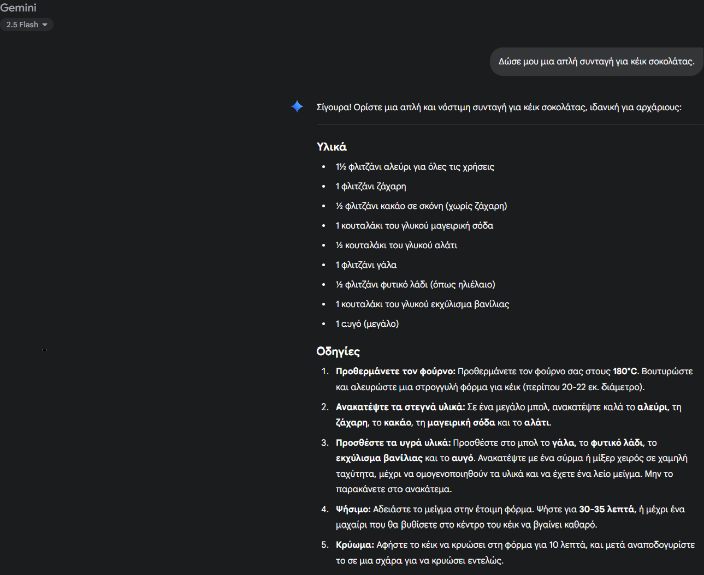
Είναι σαν να συνομιλείτε με κάποιον που γνωρίζει πολλά πράγματα και είναι πάντα πρόθυμος να σας βοηθήσει. Το Gemini έχει «μάθει» από έναν τεράστιο όγκο πληροφοριών και γι' αυτό μπορεί να καταλαβαίνει τι του ζητάτε και στη συνέχεια να σας δίνει χρήσιμες απαντήσεις.
Υποενότητα 1.2
Πρόσβαση και Σύνδεση — Βήμα 1
Για να ξεκινήσετε να χρησιμοποιείτε το Gemini, το πρώτο πράγμα που πρέπει να κάνετε είναι να αποκτήσετε πρόσβαση σε αυτό και να συνδεθείτε. Η διαδικασία είναι πολύ απλή, ειδικά αν έχετε ήδη έναν λογαριασμό Google, δηλαδή ένα gmail.
Βήμα 1: Επισκεφθείτε την επίσημη ιστοσελίδα του Gemini. Ανοίξτε τον περιηγητή ιστού (web browser) που χρησιμοποιείτε για να πλοηγείστε στο διαδίκτυο, π.χ. Google Chrome, Mozilla Firefox, Microsoft Edge, και πληκτρολογήστε τον σύνδεσμο: gemini.google.com
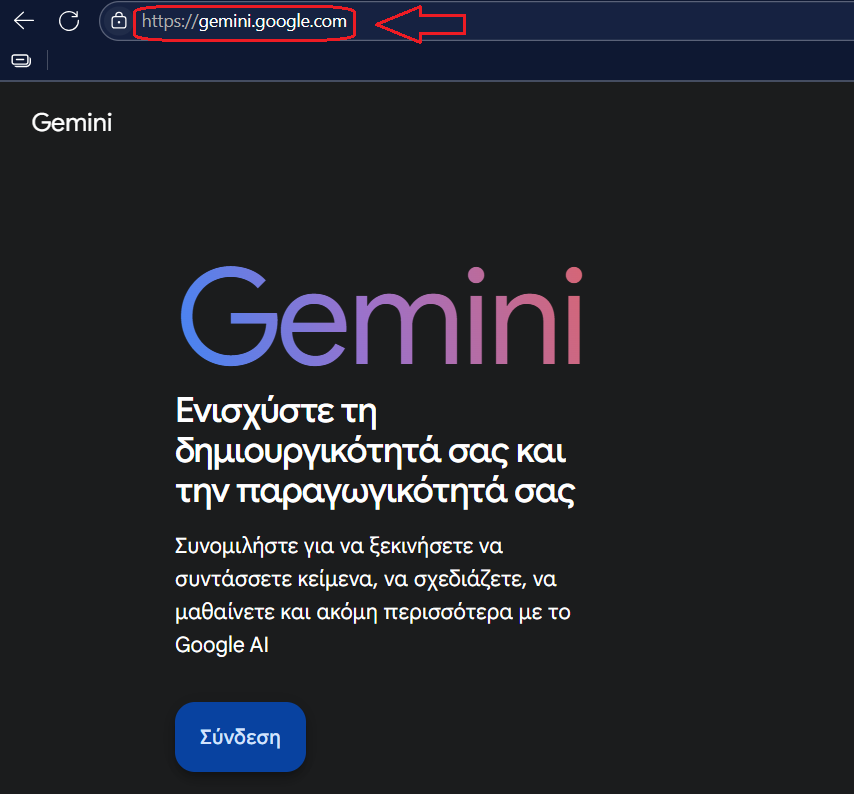
Υποενότητα 1.2
Βήμα 2: Σύνδεση με τον λογαριασμό Google
Μόλις επισκεφθείτε τη σελίδα, το Gemini θα σας οδηγήσει αυτόματα στη σελίδα σύνδεσης του λογαριασμού Google (εάν δεν είστε ήδη συνδεδεμένοι).
Εάν είστε ήδη συνδεδεμένοι σε κάποιον λογαριασμό Google στον browser σας, το Gemini ενδέχεται να σας συνδέσει αυτόματα.
Εάν δεν είστε συνδεδεμένοι, θα εμφανιστεί η οθόνη σύνδεσης της Google. Εδώ θα χρειαστεί να εισαγάγετε τη διεύθυνση email και στη συνέχεια τον κωδικό πρόσβασής σας.
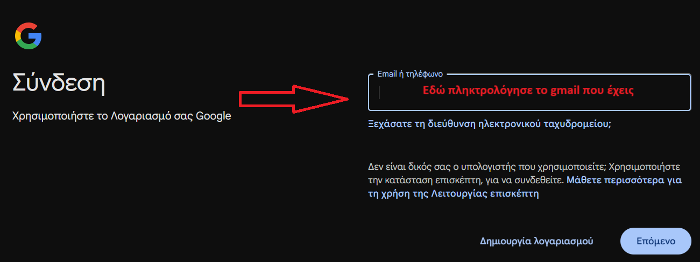
Υποενότητα 1.2
Βήμα 3: Ολοκλήρωση Σύνδεσης
Αφού εισαγάγετε τα στοιχεία σας και συνδεθείτε επιτυχώς, θα μεταφερθείτε απευθείας στο κύριο περιβάλλον του Gemini.
📌
Επισήμανση!
1. Εάν έχετε ήδη λογαριασμό Google, δεν χρειάζεται να δημιουργήσετε ξεχωριστό λογαριασμό για το Gemini. Θα χρησιμοποιήσετε τον υπάρχοντα λογαριασμό.
2. Βεβαιωθείτε ότι χρησιμοποιείτε έναν λογαριασμό Google στον οποίο έχετε πρόσβαση, καθώς όλες οι συνομιλίες και οι ρυθμίσεις σας συνδέονται με αυτόν.
Μόλις ολοκληρώσετε αυτά τα βήματα, είστε έτοιμοι να αρχίσετε να εξερευνάτε τις δυνατότητες του Gemini.
Υποενότητα 2.1
Κύρια οθόνη συνομιλίας
Τώρα που έχετε συνδεθεί, ήρθε η ώρα να γνωρίσετε τον χώρο μέσα στον οποίο θα αλληλεπιδράτε με το μοντέλο τεχνητής νοημοσύνης. Το περιβάλλον του είναι σχεδιασμένο για να είναι απλό, καθαρό και φιλικό προς τους χρήστες. Σκοπός του είναι να μην σας αγχώνει, ακόμα κι αν είναι η πρώτη φορά που επισκέπτεστε ένα τέτοιο εργαλείο.
Η κύρια οθόνη είναι το κεντρικό σημείο του Gemini — εκεί που θα γράφετε τις ερωτήσεις σας και θα βλέπετε τις απαντήσεις. Σκεφτείτε το σαν μια σελίδα στην οποία συνομιλείτε με έναν φίλο.
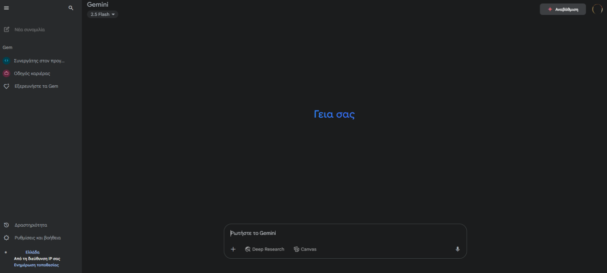
Υποενότητα 2.1
Τα βασικά στοιχεία της οθόνης
Πεδίο Συνομιλίας: Αυτός είναι ο κύριος χώρος στο κέντρο της οθόνης σας. Εδώ θα εμφανίζονται όλες οι ερωτήσεις που κάνετε στο μοντέλο και όλες οι απαντήσεις που λαμβάνετε. Όσο περισσότερο συνομιλείτε μαζί του, τόσο περισσότερο θα γεμίζει αυτό το πεδίο.
Πλαίσιο εισαγωγής κειμένου: Στο κάτω μέρος της οθόνης θα βρείτε ένα ορθογώνιο πλαίσιο. Αυτό είναι το σημείο όπου εσείς πληκτρολογείτε τις ερωτήσεις, τις οδηγίες ή ό,τι άλλο θέλετε να ρωτήσετε το Gemini.
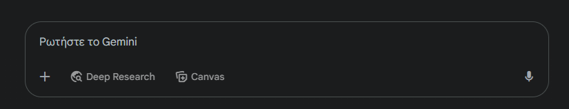
Υποενότητα 2.2
Βασικά στοιχεία μενού και πλοήγηση
Στην αριστερή πλευρά της οθόνης σας θα παρατηρήσετε ένα μενού. Αυτό το μενού είναι ο «πίνακας ελέγχου» για να διαχειρίζεστε τις συνομιλίες σας και να πλοηγείστε εύκολα μέσα στην εφαρμογή.
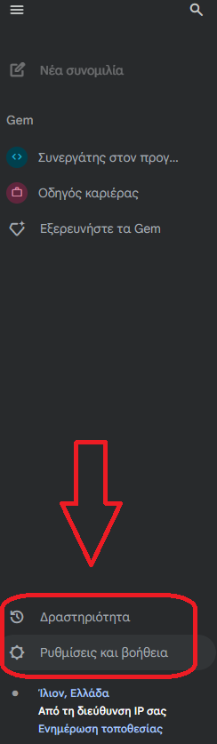
Νέα Συνομιλία (New Chat): Στην κορυφή του μενού θα βρείτε το κουμπί για να δημιουργήσετε μια νέα συνομιλία. Κάντε κλικ εδώ όταν θέλετε να ξεκινήσετε μια εντελώς καινούργια συζήτηση με το Gemini, χωρίς να επηρεάζονται οι προηγούμενες. Αυτό είναι ιδιαίτερα χρήσιμο όταν αλλάζετε θέμα ή θέλετε να πειραματιστείτε με κάτι καινούργιο.
Ιστορικό Συνομιλιών (προηγούμενες συνομιλίες): Κάτω από τη «Νέα Συνομιλία» θα δείτε μια λίστα με τις προηγούμενες συνομιλίες που έχετε κάνει. Κάθε συνομιλία έχει συνήθως έναν τίτλο που σχετίζεται με το θέμα της. Μπορείτε να κάνετε κλικ σε οποιαδήποτε από αυτές τις καταχωρήσεις για να την ανοίξετε ξανά, να διαβάσετε τι έχετε συζητήσει στο παρελθόν ή να συνεχίσετε τη συνομιλία από εκεί που την αφήσατε.
Υποενότητα 2.3
Βασικές ρυθμίσεις
Οι ρυθμίσεις σάς επιτρέπουν να προσαρμόσετε την εμπειρία σας και να διαχειριστείτε τον τρόπο λειτουργίας του. Είναι σημαντικό να γνωρίζετε πού βρίσκονται οι «Ρυθμίσεις» και πώς να τις χρησιμοποιήσετε για να κάνετε το Gemini να λειτουργεί καλύτερα για εσάς.
Για να αποκτήσετε πρόσβαση στις ρυθμίσεις: Κάντε κλικ αριστερά στο μενού «Ρυθμίσεις και Βοήθεια». Μόλις κάνετε κλικ, θα εμφανιστεί ένα νέο μενού με τις επιλογές ρυθμίσεων:
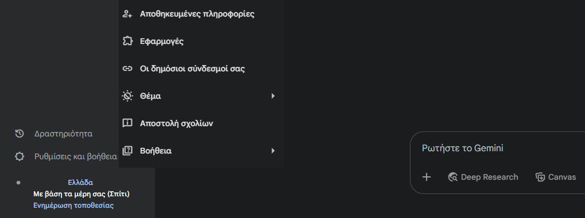
Υποενότητα 2.3
1. Αποθηκευμένες Πληροφορίες — η «μνήμη»
Αυτή η ενότητα αφορά τη «μνήμη» του μοντέλου. Εδώ εμφανίζονται οι «πληροφορίες που ζητήσατε να αποθηκευτούν από το Gemini». Αυτό σημαίνει ότι μπορείτε να μοιραστείτε λεπτομέρειες σχετικά με τη ζωή σας και τις προτιμήσεις σας, ώστε να λαμβάνετε πιο εξατομικευμένες απαντήσεις. Για παράδειγμα, αν του πείτε το όνομά σας, την πόλη που μένετε, το αντικείμενο της εργασίας σας ή τα χόμπι σας, έχει την ικανότητα να τα θυμάται, προκειμένου να προσαρμόζει τις μελλοντικές του απαντήσεις.
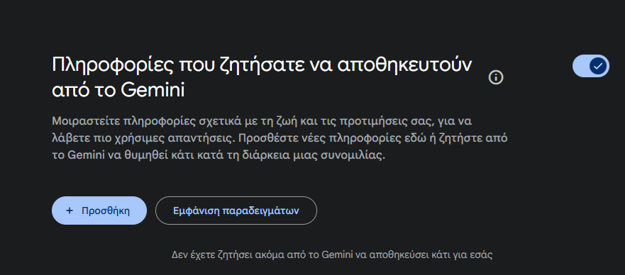
Πατώντας «Προσθήκη» μπορείτε να εισαγάγετε τις προσωπικές σας πληροφορίες.
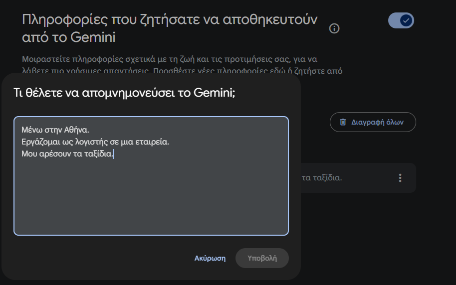
Υποενότητα 2.3
Διαχείριση της μνήμης
Ωστόσο, μπορείτε οποιαδήποτε στιγμή είτε να απενεργοποιήσετε τη μνήμη με τις προσωπικές σας ρυθμίσεις, είτε να τη διαγράψετε.
Αν επιθυμείτε να απενεργοποιήσετε τη λειτουργία αποθήκευσης, τότε απενεργοποιείτε επάνω δεξιά τον διακόπτη.
Στην περίπτωση που θέλετε απλά να διαγράψετε την προσωπική ρύθμιση, τότε απλά επιλέγετε την προσθήκη και τη διαγράφετε. Ακόμη, μπορείτε να την επεξεργαστείτε, αν θέλετε να αλλάξετε κάποιες πληροφορίες. Δείτε στην εικόνα.
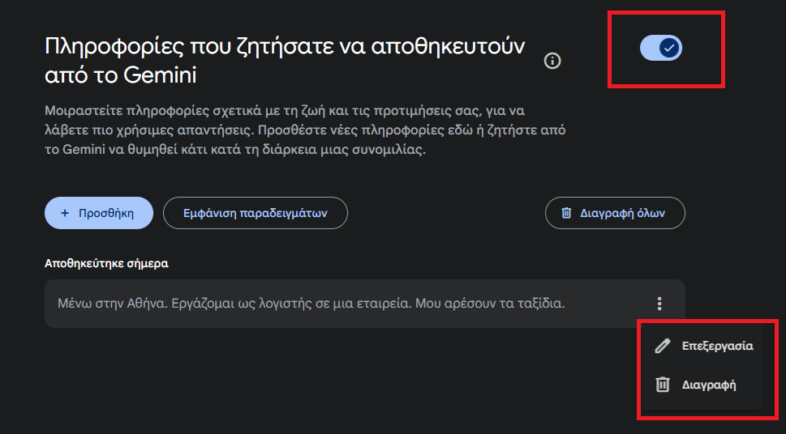
Υποενότητα 2.3
2. Εφαρμογές
Αυτή η ενότητα είναι μια από τις ιδιαίτερες και ισχυρές δυνατότητες του Gemini. Σας επιτρέπει να συνδέσετε το μοντέλο με τις αγαπημένες σας εφαρμογές της Google, ώστε να συνεργάζονται μεταξύ τους. Πλέον έχετε πρόσβαση σε πληροφορίες από τις άλλες υπηρεσίες της εταιρείας, όπως Χάρτες, YouTube, Πτήσεις, Ξενοδοχεία, Keep κ.ά., για να σας βοηθήσει να κάνετε τις διάφορες εργασίες σας εύκολα και γρήγορα. (Στη συνέχεια θα παρουσιαστούν αναλυτικότερα.)
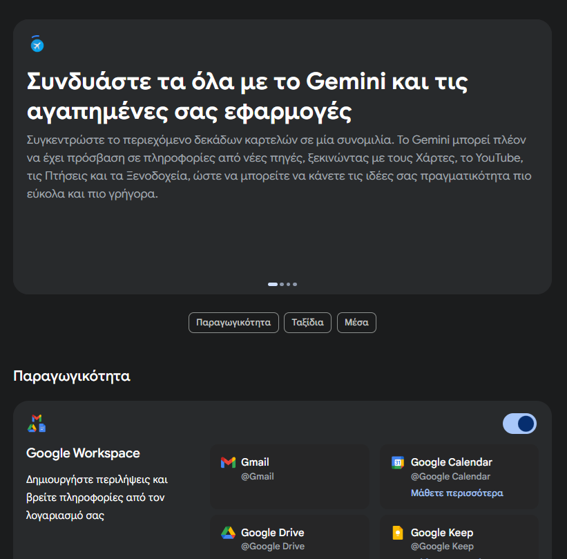
Σε αυτό το περιβάλλον, λοιπόν, μπορείτε να ενεργοποιήσετε τη δυνατότητα το μοντέλο να επικοινωνεί με το Google Workspace, δηλαδή αυτές τις εφαρμογές της Google.
Υποενότητα 2.3
3. Δημόσιοι Σύνδεσμοι & 4. Θέμα
Δημόσιοι Σύνδεσμοι: Σε αυτή την επιλογή σάς δίνεται η δυνατότητα να μοιραστείτε μια συνομιλία ή κάποια συγκεκριμένη απάντηση με άλλους, δημιουργώντας έναν δημόσιο σύνδεσμο. Αυτό είναι χρήσιμο αν θέλετε να παρουσιάσετε σε κάποιον μια ενδιαφέρουσα απάντηση ή μια χρήσιμη οδηγία που λάβατε από το Gemini.
Θέμα: Αυτή η επιλογή σάς επιτρέπει να προσαρμόσετε την οπτική εμφάνιση του περιβάλλοντος, ώστε να είναι πιο ευχάριστο στα μάτια. Οι επιλογές που δίνονται είναι 3:
Σύστημα: Το περιβάλλον προσαρμόζεται αυτόματα στο θέμα (φωτεινό ή σκούρο) που έχετε επιλέξει στις ρυθμίσεις του υπολογιστή ή της συσκευής σας.
Φως: Κάνει το φόντο φωτεινό, με ανοιχτά χρώματα. Είναι συνήθως η προεπιλεγμένη επιλογή ή προτιμάται σε περιβάλλοντα με πολύ φως.
Σκούρο: Κάνει το φόντο σκούρο, με ανοιχτόχρωμο κείμενο. Το σκούρο θέμα είναι συχνά πιο ξεκούραστο για τα μάτια, ειδικά όταν χρησιμοποιείτε το Gemini το βράδυ ή σε συνθήκες χαμηλού φωτισμού, καθώς μειώνει την καταπόνηση των ματιών.
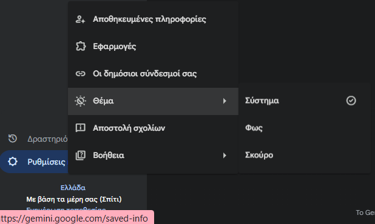
Υποενότητα 2.3
5. Αποστολή σχολίων & 6. Βοήθεια
Αποστολή σχολίων: Με αυτή την επιλογή μπορείτε να στείλετε τα σχόλιά σας, τις παρατηρήσεις σας, τις προτάσεις για βελτίωση ή να αναφέρετε τυχόν προβλήματα που μπορεί να συναντήσετε κατά τη χρήση του Gemini. Τα σχόλιά σας είναι σημαντικά, γιατί βοηθούν την Google να κατανοήσει πώς χρησιμοποιούν οι χρήστες το μοντέλο, τι λειτουργεί καλά και τι χρειάζεται βελτίωση. Μέσω αυτής της λειτουργίας, μπορείτε να συμβάλετε ενεργά στην εξέλιξη και βελτίωση του εργαλείου, κάνοντάς το καλύτερο για όλους.
Βοήθεια: Αυτή η επιλογή σάς προσφέρει πόρους και υποστήριξη για να μάθετε περισσότερα και να βρείτε λύσεις σε πιθανές απορίες ή προβλήματα:
Κέντρο βοήθειας: Σας οδηγεί στην επίσημη σελίδα υποστήριξης της Google για το μοντέλο. Εκεί θα βρείτε αναλυτικά άρθρα, οδηγούς, συχνές ερωτήσεις και λύσεις για διάφορα προβλήματα. Είναι η βασική πηγή πληροφοριών για απορίες.
Απόρρητο: Σας οδηγεί στην πολιτική απορρήτου του Gemini και της Google. Μπορείτε να ενημερωθείτε αναλυτικά για το πώς η εταιρεία συλλέγει, χρησιμοποιεί και προστατεύει τα δεδομένα σας κατά τη διάρκεια της χρήσης του μοντέλου. Είναι σημαντικό να κατανοείτε αυτές τις πληροφορίες για την προστασία των προσωπικών δεδομένων.
Το Gemini δεν είναι ένα ενιαίο μοντέλο, αλλά διατίθεται σε διάφορες εκδόσεις, γνωστές ως μοντέλα. Κάθε μοντέλο έχει σχεδιαστεί με διαφορετικούς στόχους και χαρακτηριστικά, ώστε να προσφέρει τη βέλτιστη απόδοση για συγκεκριμένες χρήσεις. Μπορείτε να το σκεφτείτε σαν διαφορετικές εκδόσεις ενός εργαλείου: όλες κάνουν βασικές εργασίες, αλλά κάποιες είναι πιο γρήγορες, άλλες πιο ισχυρές ή πιο οικονομικές.
Το Gemini διαθέτει 2 κύρια μοντέλα που θα συναντήσετε στο περιβάλλον του: το Gemini 2.5 Flash και το Gemini 2.5 Pro.
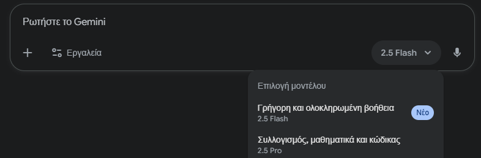
ΑΝΑΛΥΤΙΚΗ ΥΠΟΕΝΟΤΗΤΑΕξήγηση · Παράδειγμα · Εφαρμογή
Συμπληρωματική υποενότητα · Υποενότητα 2.4
Gemini 3.8 Flash: τι αλλάζει στην επιλογή μοντέλου
Μαθησιακός στόχος: Να διαβάζετε τις νέες εκδόσεις μαζί με τους όρους πρόσβασης.
4 βήματα μελέτης · προσπάθησε πριν δεις την ανατροφοδότηση
Κρατήστε αυτό: Οι διαφάνειες για Gemini 2.5 διατηρούνται ως αρχικό υλικό. Η παρούσα συμπλήρωση εξετάζει τις νεότερες δυνατότητες με βάση την επίσημη τεκμηρίωση.
Η Google ανακοίνωσε το Gemini 3.8 Flash στις 2 Σεπτεμβρίου 2026, με έμφαση σε προγραμματισμό, σύνθετο συλλογισμό και ροές agents. Η ίδια ανακοίνωση διακρίνει το Flash Cyber, μια εξειδικευμένη έκδοση κυβερνοασφάλειας με ελεγχόμενη πρόσβαση για έμπιστους αμυντικούς φορείς. Δεν αποτελεί την τυπική επιλογή ενός εισαγωγικού μαθήματος.
Η ανακοίνωση αναφέρει το 3.8 Flash στο Gemini app για συνδρομητές Google AI Pro και Ultra, καθώς και στα εργαλεία για προγραμματιστές. Ελέγχουμε τι εμφανίζεται στον δικό μας λογαριασμό· το ίδιο εμπορικό όνομα δεν συνεπάγεται ίδιες λειτουργίες σε όλες τις επιφάνειες.
Μικρή άσκηση
Ένα νέο μοντέλο έχει καλύτερη επίδοση σε coding benchmark. Αρκεί αυτό για να το επιλέξουμε για ελληνικές περιλήψεις;
Δείτε ενδεικτική απάντηση και εξήγηση
Όχι. Δοκιμάζουμε ελληνικά παραδείγματα, ελέγχουμε πιστότητα στην πηγή και χρόνο διόρθωσης. Η μέτρηση άλλης εργασίας αποτελεί ένδειξη, όχι απόδειξη για τη δική μας χρήση.
Πώς διαβάζουμε τις δυνατότητες ενός μοντέλου χωρίς υπεργενικεύσεις
Η κάρτα μοντέλου συγκεντρώνει πληροφορίες για τις υποστηριζόμενες εισόδους, τις εξόδους, τις αξιολογήσεις και τους περιορισμούς. Είναι χρήσιμη για αρχικό προσανατολισμό, αλλά δεν αντικαθιστά τη δοκιμή στο δικό μας περιβάλλον. Μια επίδοση σε συγκεκριμένο benchmark δεν μεταφέρεται αυτομάτως σε κάθε ελληνικό έγγραφο, πίνακα ή επαγγελματική διαδικασία. Η καταλληλότητα εξαρτάται από το υλικό και από το τι θεωρούμε σωστό αποτέλεσμα.
Όταν συγκρίνουμε μοντέλα, διατηρούμε σταθερά την οδηγία, τις πηγές και τα κριτήρια. Διαφορετικά δεν ξέρουμε αν η διαφορά προήλθε από το μοντέλο ή από διαφορετική διατύπωση του αιτήματος. Η ταχύτητα έχει αξία μαζί με την ποιότητα: μια απάντηση που επιστρέφεται γρήγορα αλλά χρειάζεται εκτενή διόρθωση μπορεί να μην εξοικονομεί συνολικό χρόνο. Καταγράφουμε επομένως και τον χρόνο ελέγχου.
Η εφαρμογή Gemini, το API και τα εργαλεία ανάπτυξης αποτελούν διαφορετικά περιβάλλοντα πρόσβασης. Η τεκμηρίωση ενός μοντέλου δεν αποδεικνύει ότι κάθε χρήστης βλέπει την ίδια επιλογή ή διαθέτει όλα τα εργαλεία. Σχεδιάζουμε την άσκηση με βάση όσα πράγματι είναι διαθέσιμα και παρέχουμε εναλλακτική δραστηριότητα όταν μια λειτουργία δεν εμφανίζεται στον συγκεκριμένο λογαριασμό.
Παράδειγμα: σύγκριση δύο περιλήψεων
Υποθετικό εκπαιδευτικό σενάριο
Ένας εκπαιδευτής δίνει το ίδιο κείμενο σε δύο διαθέσιμες επιλογές και ζητά περίληψη 120 λέξεων. Η πρώτη είναι γρηγορότερη, αλλά παραλείπει έναν κρίσιμο περιορισμό. Η δεύτερη διατηρεί τον περιορισμό, όμως είναι μεγαλύτερη από το ζητούμενο. Η σύγκριση πρέπει να εξετάσει και τις δύο αποκλίσεις.
Ο εκπαιδευτής καταγράφει τι διορθώθηκε και πόσο χρόνο χρειάστηκε. Επαναλαμβάνει τη δοκιμή με κείμενο που έχει ελλιπή στοιχεία, ώστε να ελέγξει αν το μοντέλο αναγνωρίζει το κενό αντί να το συμπληρώνει αυθαίρετα.
Ενδεικτική οδηγία
Σύνοψε το ίδιο κείμενο σε 120 λέξεις, διατηρώντας το κύριο εύρημα και τους περιορισμούς. Μην προσθέσεις εξωτερικές πληροφορίες. Δήλωσε ποια στοιχεία δεν επαρκούν για γενίκευση.
Εργαστήριο εφαρμογής
Πότε μια γρήγορη απάντηση μπορεί να είναι λιγότερο αποδοτική;
Μεταφορά στη δική σου πράξη
Σχεδίασε μια δοκιμή τριών εγγράφων που θα σε βοηθούσε να αξιολογήσεις μια διαθέσιμη επιλογή Gemini.
Οι σημειώσεις παραμένουν σε αυτόν τον browser.
Κριτήρια αυτοαξιολόγησης
Έλεγξε αν η απάντησή σου συνδέεται με τη συγκεκριμένη έννοια, περιλαμβάνει ένα εφαρμόσιμο παράδειγμα και εξηγεί πώς θα ελέγξεις το αποτέλεσμα. Σύγκρινέ την με την αναλυτική εξήγηση και συζήτησε τυχόν αμφιβολία με τον εκπαιδευτή.
Υποενότητα 2.4
Gemini 2.5 Flash
Το 2.5 Flash είναι ένα μοντέλο που διακρίνεται για την ταχύτητα και την αποδοτικότητά του. Είναι ένα ελαφρύτερο και ταχύτερο μοντέλο της εταιρείας. Έχει σχεδιαστεί για να δίνει γρήγορες απαντήσεις και να εκτελεί εργασίες που δεν απαιτούν υπερβολική περιπλοκότητα, αλλά χρειάζονται άμεση απόκριση.
Βασικά χαρακτηριστικά:
Ταχύτητα: Είναι εξαιρετικά γρήγορο στην παραγωγή απαντήσεων. Ιδανικό για συνομιλίες σε πραγματικό χρόνο.
Αποδοτικότητα: Καταναλώνει λιγότερους υπολογιστικούς πόρους, κάτι που συχνά μεταφράζεται σε πιο οικονομική χρήση (αν υπήρχε χρέωση) και ομαλότερη λειτουργία.
Καθημερινές εργασίες: Είναι ιδανικό για απλές ερωτήσεις, γρήγορες περιλήψεις, δημιουργία σύντομων κειμένων και γενικές συνομιλίες.
⚡
Πότε να το χρησιμοποιήσετε: Όταν χρειάζεστε άμεση απάντηση, όταν κάνετε πολλές απλές ερωτήσεις ή όταν η ταχύτητα είναι βασική σας προτεραιότητα.
Το συγκεκριμένο μοντέλο διακρίνεται για την πολυπλοκότητα και την ακρίβειά του. Είναι ένα πιο ισχυρό και ολοκληρωμένο μοντέλο της εταιρείας. Έχει την ικανότητα να επεξεργάζεται πιο σύνθετες πληροφορίες, να κάνει βαθύτερη ανάλυση και να παράγει πιο λεπτομερείς και ακριβείς απαντήσεις.
Βασικά χαρακτηριστικά:
Ακρίβεια και βάθος: Μπορεί να χειριστεί πιο περίπλοκες ερωτήσεις, να κάνει πιο σύνθετους συλλογισμούς και να παρέχει απαντήσεις με μεγαλύτερο βάθος γνώσης.
Πολυπλοκότητα: Είναι καλύτερο για εργασίες που απαιτούν ανάλυση δεδομένων, επίλυση προβλημάτων, εκτενές γράψιμο, έρευνα ή κατανόηση περίπλοκων εννοιών.
Μεγαλύτερα κείμενα: Μπορεί να επεξεργαστεί και να δημιουργήσει μεγαλύτερα κείμενα ή να διατηρήσει το πλαίσιο σε πολύ εκτενείς συνομιλίες.
🧠
Πότε να το χρησιμοποιήσετε: Όταν έχετε μια σύνθετη ερώτηση, όταν χρειάζεστε αναλυτικές πληροφορίες, όταν εργάζεστε σε ένα project που απαιτεί βαθύ συλλογισμό ή όταν η ακρίβεια είναι πιο σημαντική από την απόλυτη ταχύτητα.
ΑΝΑΛΥΤΙΚΗ ΥΠΟΕΝΟΤΗΤΑΕξήγηση · Παράδειγμα · Εφαρμογή
Συμπληρωματική υποενότητα · Υποενότητα 2.4
Πολυτροπικότητα: εικόνα, ήχος και βίντεο ως είσοδος
Μαθησιακός στόχος: Να ξεχωρίζετε την ανάλυση πολυμέσων από τη δημιουργία τους.
4 βήματα μελέτης · προσπάθησε πριν δεις την ανατροφοδότηση
Σύμφωνα με τη model card, το Gemini 3.8 Flash δέχεται κείμενο, εικόνες, ήχο και αρχεία βίντεο και παράγει κείμενο. Η κάρτα περιγράφει πλαίσιο έως 1 εκατομμύριο tokens και έξοδο έως 64 χιλιάδες tokens. Αυτά είναι όρια του μοντέλου, όχι υπόσχεση για τις μεταφορτώσεις κάθε εφαρμογής.
Η πολυτροπικότητα επιτρέπει, για παράδειγμα, να συγκρίνουμε μια διαφάνεια με την αφήγηση ενός μαθήματος. Ωστόσο, μικρά γράμματα, ασαφής ήχος και στιγμιαία γεγονότα μπορούν να δημιουργήσουν λάθη. Ζητάμε αναφορά στο συγκεκριμένο σημείο της εισόδου και ελέγχουμε το πρωτότυπο.
Δοκιμάστε αυτό το prompt
Σύγκρινε το διάγραμμα που επισυνάπτω με το συνοδευτικό κείμενο. Κατέγραψε τυχόν διαφορές σε τίτλους, μονάδες και αριθμούς. Αν κάποιο στοιχείο δεν διαβάζεται, πες ποιο είναι αντί να το μαντέψεις.
Μικρή άσκηση
Μπορούμε να συμπεράνουμε ότι ένα μοντέλο παράγει βίντεο επειδή δέχεται βίντεο;
Δείτε ενδεικτική απάντηση και εξήγηση
Όχι. Η μορφή εισόδου και η μορφή εξόδου είναι ξεχωριστές προδιαγραφές. Για παραγωγή βίντεο εξετάζουμε το αντίστοιχο εργαλείο ή μοντέλο δημιουργίας.
Αναγνώριση περιεχομένου, ερμηνεία και αβεβαιότητα
Η πολυτροπική επεξεργασία συνδυάζει διαφορετικές μορφές πληροφορίας, όπως κείμενο, εικόνα, ήχο και βίντεο. Η εκπαιδευτική αξία βρίσκεται στη δυνατότητα να εξετάζουμε σχέσεις μεταξύ αυτών των μορφών. Για παράδειγμα, μπορούμε να συγκρίνουμε όσα λέγονται σε μια διάλεξη με ένα γράφημα που εμφανίζεται στην οθόνη. Ωστόσο, η πρόσβαση σε περισσότερα μέσα δεν εξαλείφει λάθη αναγνώρισης ή ερμηνείας.
Είναι χρήσιμο να διαχωρίζουμε δύο φάσεις: πρώτα τι παρατηρείται και έπειτα τι συμπεραίνεται. Σε φωτογραφία πίνακα ζητάμε αρχικά μεταγραφή των ορατών στοιχείων και σήμανση αβέβαιων σημείων. Μόνο μετά ζητάμε ανάλυση. Αν μια τιμή διαβάστηκε λανθασμένα, μια πειστική ερμηνεία μπορεί να στηρίζεται εξ ολοκλήρου σε εσφαλμένη είσοδο. Ο χωρισμός των φάσεων κάνει το λάθος ευκολότερο να εντοπιστεί.
Η ποιότητα της εισόδου επηρεάζει το αποτέλεσμα. Θολές εικόνες, μικρά γράμματα, ανεπαρκής φωτισμός ή αλληλοκαλυπτόμενη ομιλία δημιουργούν αμφισημίες. Ζητάμε από το σύστημα να αναφέρει όσα δεν διακρίνει και ελέγχουμε ιδιαίτερα ονόματα, αριθμούς και χρονικές αναφορές. Για σημαντική χρήση επιστρέφουμε στο αρχικό μέσο, αντί να θεωρούμε τη μεταγραφή πλήρες υποκατάστατό του.
Παράδειγμα: διάγραμμα από φωτογραφία
Υποθετικό εκπαιδευτικό σενάριο
Σε φωτογραφία ενός γραφήματος φαίνεται αύξηση μιας καμπύλης, αλλά ο κατακόρυφος άξονας δεν διαβάζεται καθαρά. Δεν μπορούμε να συμπεράνουμε αν παρουσιάζονται ευρώ, άτομα ή ποσοστά. Η περιγραφή της τάσης μπορεί να είναι χρήσιμη, όμως η ποσοτική ερμηνεία πρέπει να περιμένει διευκρίνιση.
Ζητάμε καλύτερη εικόνα ή τον αρχικό πίνακα. Το αποτέλεσμα δηλώνει χωριστά τι φαίνεται με σαφήνεια και τι παραμένει άγνωστο. Έτσι αποφεύγεται η μετατροπή μιας ασαφούς εικόνας σε υπερβολικά ακριβή διατύπωση.
Ενδεικτική οδηγία
Περιέγραψε πρώτα όσα διακρίνονται στο γράφημα. Μετάγραψε τίτλο, άξονες και τιμές μόνο όπου είναι αναγνώσιμα. Μην υποθέσεις μονάδες. Έπειτα δώσε ερμηνεία μόνο για τα επιβεβαιωμένα στοιχεία.
Εργαστήριο εφαρμογής
Ο άξονας ενός γραφήματος δεν διαβάζεται. Ποια απάντηση είναι κατάλληλη;
Μεταφορά στη δική σου πράξη
Ποια τρία στοιχεία θα έλεγξες σε μια αυτόματη μεταγραφή ή περιγραφή εικόνας πριν τη χρησιμοποιήσεις στο μάθημά σου;
Οι σημειώσεις παραμένουν σε αυτόν τον browser.
Κριτήρια αυτοαξιολόγησης
Έλεγξε αν η απάντησή σου συνδέεται με τη συγκεκριμένη έννοια, περιλαμβάνει ένα εφαρμόσιμο παράδειγμα και εξηγεί πώς θα ελέγξεις το αποτέλεσμα. Σύγκρινέ την με την αναλυτική εξήγηση και συζήτησε τυχόν αμφιβολία με τον εκπαιδευτή.
Υποενότητα 3.1
Κάνοντας απλές ερωτήσεις
Τώρα που έχετε γνωρίσει το περιβάλλον του Gemini και έχετε κάνει τις βασικές σας ρυθμίσεις, μπορείτε να κάνετε το πρώτο βήμα για να ξεκινήσετε την πρώτη σας συνομιλία με αυτόν τον ψηφιακό βοηθό τεχνητής νοημοσύνης. Η αλληλεπίδραση με το Gemini είναι σαν να μιλάτε με κάποιον που έχει πρόσβαση σε μια τεράστια βάση γνώσεων. Το μόνο που χρειάζεται είναι να του πείτε τι θέλετε να μάθετε ή να κάνετε, πληκτρολογώντας την ερώτησή σας.
Ανοίξτε μια νέα συνομιλία Σε περίπτωση που έχετε ήδη κάποια ανοιχτή συνομιλία και θέλετε να ξεκινήσετε από την αρχή, κάντε κλικ στο κουμπί «Νέα Συνομιλία». Η επιλογή αυτή βρίσκεται στο αριστερό μενού. Αυτό θα σας δημιουργήσει μια καθαρή οθόνη συνομιλίας, έτοιμη για την πρώτη σας ερώτηση.
Πληκτρολογήστε την ερώτησή σας Πηγαίνετε στο πλαίσιο εισαγωγής κειμένου που βρίσκεται στο κάτω μέρος της οθόνης. Κάντε κλικ στο πλαίσιο και πληκτρολογήστε την ερώτησή σας.
Υποενότητα 3.1
Ας δούμε ένα παράδειγμα
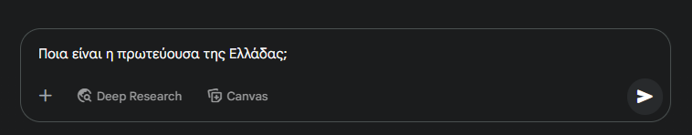
Αφού γράψετε την ερώτησή σας, κάντε κλικ στο κουμπί αποστολής, που βρίσκεται στη δεξιά πλευρά του πλαισίου εισαγωγής κειμένου.
Υποενότητα 3.1
Δείτε την απάντηση του Gemini
Μόλις κάνετε «αποστολή» του ερωτήματος, το μοντέλο θα το επεξεργαστεί και σε λίγα δευτερόλεπτα θα εμφανίσει την απάντησή του.
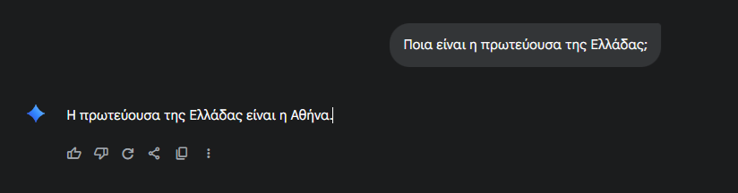
Συγχαρητήρια! Μόλις κάνατε την πρώτη σας επιτυχημένη συνομιλία με το Gemini.
💡
Tip! Είναι πολύ σημαντικό να θυμάστε: όταν θέλετε να αλλάξετε εντελώς το θέμα συζήτησης, είναι πάντα καλύτερο να ξεκινάτε μια νέα συνομιλία. Με αυτόν τον τρόπο, το μοντέλο δεν θα «μπερδευτεί» με τις πληροφορίες από τις προηγούμενες συζητήσεις, άρα θα σας δώσει πιο ακριβείς και στοχευμένες απαντήσεις για το νέο σας θέμα.
Υποενότητα 3.2
Δημιουργικές προτάσεις: μια ιστορία
Το Gemini δεν είναι μόνο ένα εργαλείο για να βρίσκετε γρήγορες απαντήσεις σε συγκεκριμένες ερωτήσεις. Έχει επίσης την ικανότητα να σας βοηθάει στη δημιουργική σκέψη, να σας δίνει νέες ιδέες και να σας προσφέρει έμπνευση για διάφορα θέματα, από την καθημερινότητα μέχρι πιο σύνθετα projects. Σκεφτείτε το σαν ένα δημιουργικό «brainstorming» με έναν πολύ έξυπνο βοηθό.
Παράδειγμα 1ο: Βοήθεια με δημιουργικό γράψιμο
✔ Ερώτηση χρήστη
«Γράψε μου μια σύντομη ιστορία για ένα μαγικό δάσος, όπου τα ζώα μπορούν να μιλούν».
Το Gemini ξεκινάει να δημιουργεί μια ιστορία με βάση την περιγραφή που του δώσατε.
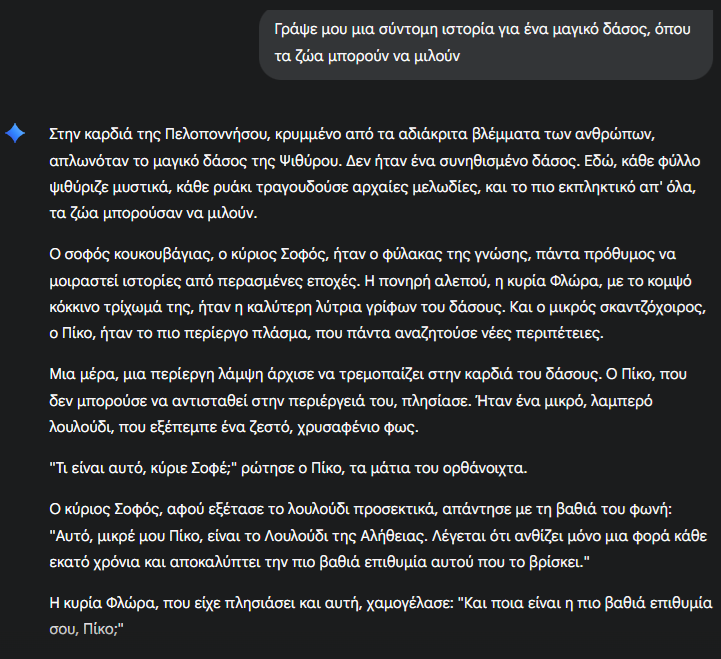
Υποενότητα 3.2
Δημιουργικές προτάσεις: κήπος και γραφείο
Παράδειγμα 2ο: Σχεδιασμός ενός μικρού κήπου στο μπαλκόνι
✔ Ερώτηση χρήστη
«Δώσε μου ιδέες για το πώς να φτιάξω εύκολα και οικονομικά έναν κήπο στο μπαλκόνι μου.»
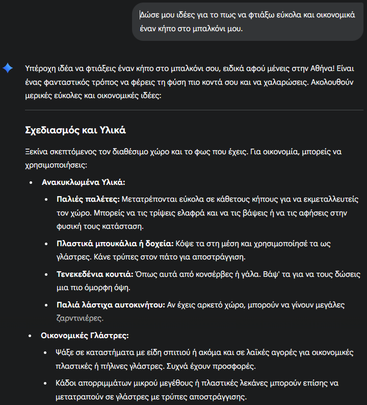
Παράδειγμα 3ο: Βοήθεια με την οργάνωση του γραφείου στο σπίτι
✔ Ερώτηση χρήστη
«Δώσε μου 5 πρακτικές συμβουλές για την οργάνωση του γραφείου στο σπίτι.»
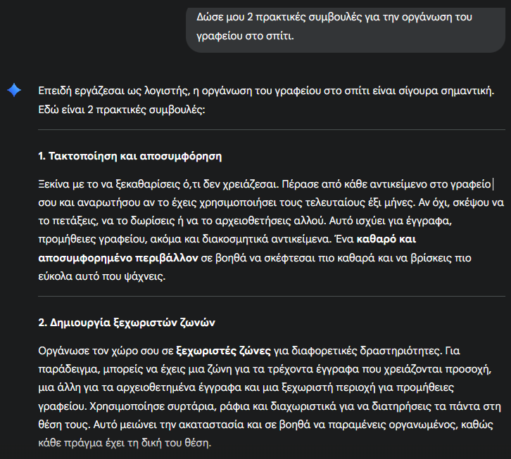
Αυτά τα 3 παραδείγματα είναι ένα πολύ μικρό δείγμα για το πώς μπορείτε καθημερινά να χρησιμοποιείτε το Gemini, για οτιδήποτε θελήσετε. Φυσικά, το μοντέλο μπορείτε να το χρησιμοποιήσετε για την εργασία σας, για αναζήτηση διαφόρων αποριών, που σε κάθε άλλη περίπτωση θα επισκεπτόσασταν κάποια μηχανή αναζήτησης, όπως για παράδειγμα το google.com.
Υποενότητα 3.3
Πώς να ολοκληρώσετε τη συνομιλία
Αφού έχετε ολοκληρώσει μια συζήτηση και έχετε λάβει τις πληροφορίες ή τις ιδέες που χρειαζόσασταν, είναι χρήσιμο να γνωρίζετε πώς να «ολοκληρώσετε» ή να «διαχειριστείτε» τη συνομιλία σας. Το Gemini αποθηκεύει αυτόματα τις συνομιλίες σας στο ιστορικό, αλλά ωστόσο υπάρχουν και άλλες επιλογές.
1. Η συνομιλία αποθηκεύεται αυτόματα στο Ιστορικό:
Δεν χρειάζεται να πατήσετε κάποιο κουμπί «Αποθήκευσης». Κάθε συνομιλία που κάνετε αποθηκεύεται αυτόματα και μπορείτε να τη βρείτε στο αριστερό μενού.
Αυτό σημαίνει ότι μπορείτε να κλείσετε το Gemini ή τον browser σας και να επιστρέψετε αργότερα στην ίδια συνομιλία, κάνοντας απλά κλικ στον τίτλο της, που βρίσκεται στο ιστορικό.
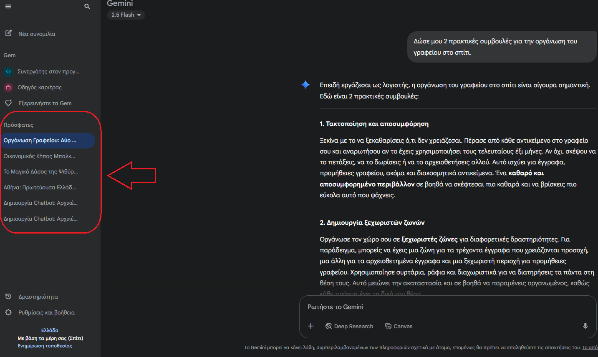
Υποενότητα 3.3
Μετονομασία ή Διαγραφή συνομιλίας
2. Μετονομασία ή Διαγραφή συνομιλίας από το Ιστορικό: Για να κρατήσετε το ιστορικό σας οργανωμένο, μπορείτε να μετονομάσετε μια συνομιλία.
Το Gemini δίνει αυτόματα έναν τίτλο στη συνομιλία με βάση το πρώτο ερώτημα (prompt). Όμως μπορείτε, κάνοντας κλικ πάνω στον τίτλο της συνομιλίας στο αριστερό μενού, να τον επεξεργαστείτε και να του δώσετε ένα πιο περιγραφικό όνομα.
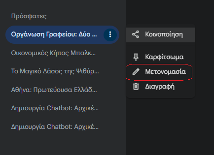
Επίσης, αν μια συνομιλία δεν χρειάζεται πλέον να την έχετε, γιατί δεν σας είναι χρήσιμη, τότε μπορείτε να τη διαγράψετε.
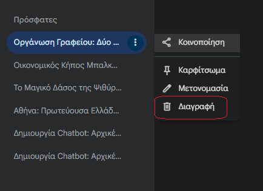
Υποενότητα 3.4
Πώς να λάβετε διευκρινίσεις και αναλυτικές απαντήσεις
Το Gemini είναι ένας έξυπνος συνομιλητής και, όπως σε κάθε συζήτηση, μπορείτε να ζητήσετε περισσότερες λεπτομέρειες ή να διευκρινίσετε κάτι που δεν καταλάβατε πλήρως. Αυτό είναι ένα πολύ σημαντικό βήμα για να αξιοποιήσετε πλήρως τις δυνατότητές του και να λάβετε τις ακριβείς πληροφορίες που χρειάζεστε.
Σκεφτείτε πως μιλάτε με κάποιον ειδικό για ένα θέμα: αν η αρχική απάντηση που σας έδωσε δεν ήταν αρκετά αναλυτική, ή όχι και τόσο κατανοητή, ή απλά θέλετε να εμβαθύνετε σε ένα συγκεκριμένο σημείο, τότε απλά ρωτήστε το.
💬
Πώς να ζητήσετε διευκρινίσεις: Αφού το μοντέλο σάς δώσει μια απάντηση, μπορείτε να συνεχίσετε τη συζήτηση στο ίδιο πλαίσιο συνομιλίας. Δεν χρειάζεται να ξεκινήσετε μια νέα συνομιλία. Απλώς πληκτρολογήστε την επόμενη ερώτησή σας, κάνοντας αναφορά σε αυτό που μόλις απάντησε.
Υποενότητα 3.4
Παραδείγματα διευκρινίσεων
Για να ζητήσετε περισσότερες λεπτομέρειες για ένα σημείο: αν το Gemini απάντησε για την ιστορία της Ελλάδας και ανέφερε την «Ελληνική Επανάσταση», τότε μπορείτε να ρωτήσετε:
✔ Ερώτηση χρήστη
«Ποια ήταν τα κύρια αίτια της Ελληνικής Επανάστασης;»
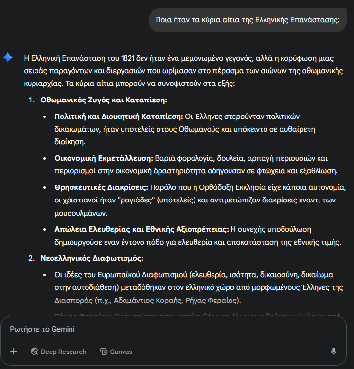
✔ Ερώτηση χρήστη
«Θέλω να μου διευκρινίσεις πώς ακριβώς κατάφερε η Φιλική Εταιρεία να οργανώσει τόσο αποτελεσματικά την επανάσταση, δεδομένου ότι οι Οθωμανοί είχαν τόσο ισχυρό έλεγχο και οι επικοινωνίες ήταν δύσκολες εκείνη την εποχή;»
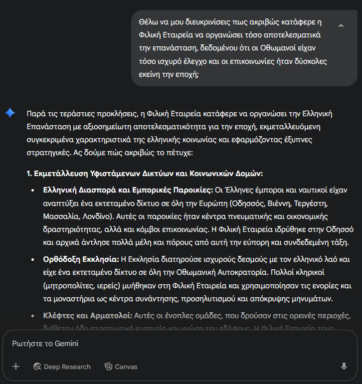
Κεφάλαιο 4
Δημιουργώντας σωστό prompt
Τώρα που γνωρίσατε πώς να συνομιλείτε με το Gemini και πώς να ζητάτε διευκρινίσεις, ήρθε η ώρα να μάθετε το πιο σημαντικό σημείο που πρέπει να γνωρίζει κάποιος ο οποίος ασχολείται με το μοντέλο του Gemini: την τέχνη της σωστής διατύπωσης των ερωτημάτων σας, δηλαδή του prompting. Ένα καλά διατυπωμένο prompt είναι το κλειδί για να λάβετε τις καλύτερες δυνατές απαντήσεις από το Gemini και να αξιοποιήσετε πλήρως τις δυνατότητές του.
Σε αυτό το κεφάλαιο, θα εξερευνήσετε γιατί είναι τόσο σημαντικό να δημιουργείτε αποτελεσματικά prompts και ποιες είναι οι βασικές αρχές που θα σας βοηθήσουν να το κάνετε. Μην ανησυχείτε, δεν είναι κάτι περίπλοκο — είναι απλώς θέμα σαφήνειας και καθοδήγησης του μοντέλου προς αυτό που πραγματικά χρειάζεστε.
Υποενότητα 4.1 · Βασικές αρχές
1. Να είστε σαφείς και συγκεκριμένοι
Όταν συνομιλείτε στο Gemini, ο τρόπος που διατυπώνετε την ερώτηση ή την οδηγία σας — δηλαδή το prompt — καθορίζει σε μεγάλο βαθμό την ποιότητα της απάντησης που θα λάβετε. Όσο πιο ξεκάθαρα και συγκεκριμένα εκφράζετε αυτό που θέλετε, τόσο καλύτερη απάντηση θα λάβετε. Να αποφεύγετε τις γενικές ερωτήσεις.
✘ Λάθος prompt
«Πες μου για την ελληνική ιστορία.»
Η λέξη «ιστορία» είναι κάτι γενικό που περιέχει πολλές διαφορετικές θεματικές. Το Gemini δεν γνωρίζει για τι ακριβώς ενδιαφέρεστε να μάθετε (π.χ. αρχαία, σύγχρονη κ.τ.λ.), οπότε η απάντηση θα είναι πολύ γενική ή άσχετη.
✔ Σωστό prompt
«Δώσε μου μια σύντομη περίληψη της Ελληνικής Επανάστασης του 1821, σε 5 προτάσεις.»
Καθορίζετε το θέμα, το είδος της απάντησης («σύντομη περίληψη») και το μήκος («σε 5 προτάσεις»). Έτσι το Gemini ξέρει τι ακριβώς πρέπει να σας δώσει.
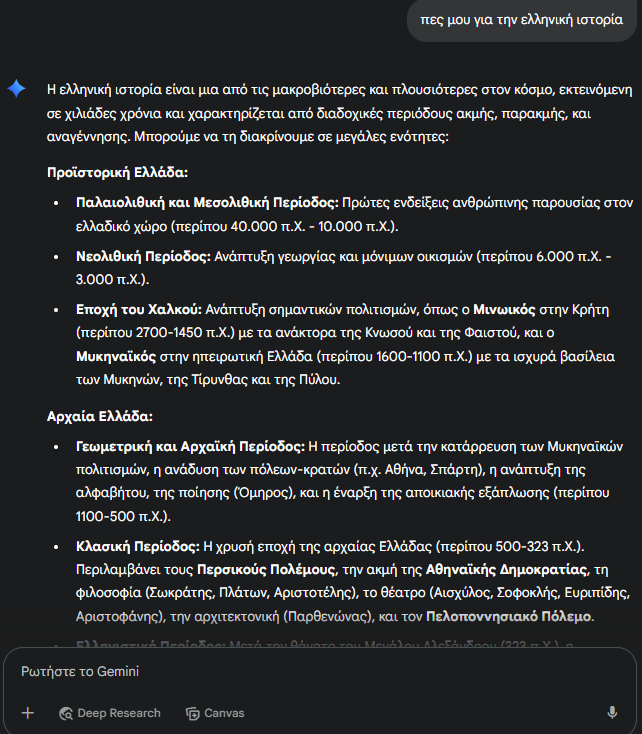
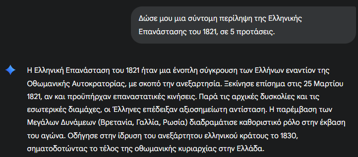
Υποενότητα 4.1 · Βασικές αρχές
2. Ζητήστε συγκεκριμένη μορφή ή ύφος απάντησης
Μπορείτε να ζητήσετε από το Gemini να διαμορφώσει την απάντησή του όπως θέλετε εσείς, π.χ. λίστα, παράγραφος, email, ποίημα, αλλά και με συγκεκριμένο ύφος, π.χ. επίσημο, φιλικό, χιουμοριστικό.
✔ Παράδειγμα
«Γράψε μου ένα email προς τον προϊστάμενο με ευγενική διατύπωση για αίτηση άδειας, διάρκειας 3 ημερών.»
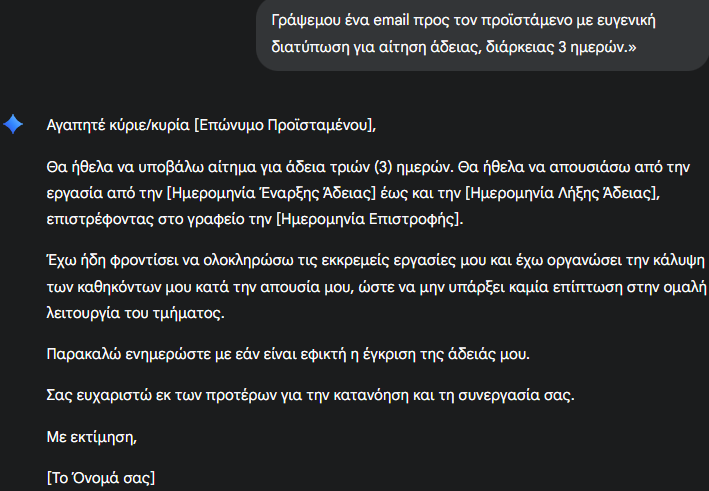
Γιατί είναι σημαντικό: Το μοντέλο θα σας δώσει ένα οργανωμένο και έτοιμο προς χρήση email, με το ζητούμενο ύφος, αντί για μια απλή περιγραφή του τι πρέπει να περιέχει ένα email άδειας.
✔ Άλλο παράδειγμα
«Δώσε μου 5 βασικά σημεία για την ανακύκλωση σε μορφή bullet list.»
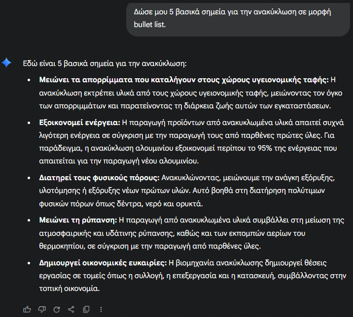
Γιατί είναι σημαντικό: Λαμβάνετε αμέσως τις πληροφορίες με τον τρόπο που είναι πιο εύκολο να τις διαβάσετε και να τις χρησιμοποιήσετε.
Υποενότητα 4.1 · Βασικές αρχές
3. Χρησιμοποιήστε διαδοχικές ερωτήσεις
Μην περιμένετε να λάβετε την τέλεια απάντηση με το πρώτο κιόλας prompt. Μπορείτε να ξεκινήσετε με μια γενική ερώτηση και στη συνέχεια, βήμα προς βήμα, να καθοδηγήσετε το Gemini για ένα πιο πλούσιο και λεπτομερές αποτέλεσμα.
Παράδειγμα διαλόγου:
«Τι είναι το Internet of Things (IoT);» (απάντηση: εξήγηση του IoT)
«Μπορείς να μου δώσεις ένα παράδειγμα από την καθημερινότητα;» (απάντηση: παράδειγμα IoT)
«Τώρα γράψε το σαν να το εξηγώ σε μαθητές Λυκείου.» (απάντηση: προσαρμοσμένη εξήγηση για μαθητές Λυκείου)
Γιατί είναι σημαντικό: Αυτός ο τρόπος χρήσης είναι πιο φυσικός. Οδηγεί σε πιο ποιοτικές απαντήσεις και σας επιτρέπει να εμβαθύνετε στη συζήτηση, χωρίς να χρειάζεται να δημιουργήσετε κάθε φορά ένα εντελώς νέο, μεγάλο prompt.
Υποενότητα 4.1 · Βασικές αρχές
4. Ορίστε περιορισμούς ή τι να μην περιλαμβάνει
Μερικές φορές είναι εξίσου σημαντικό να πείτε στο Gemini τι δεν θέλετε να περιλαμβάνει στην απάντησή του ή ποιους περιορισμούς πρέπει να έχει.
✔ Παράδειγμα
«Γράψε μια σύντομη περίληψη για την κλιματική αλλαγή, όχι μεγαλύτερη από 50 λέξεις.»
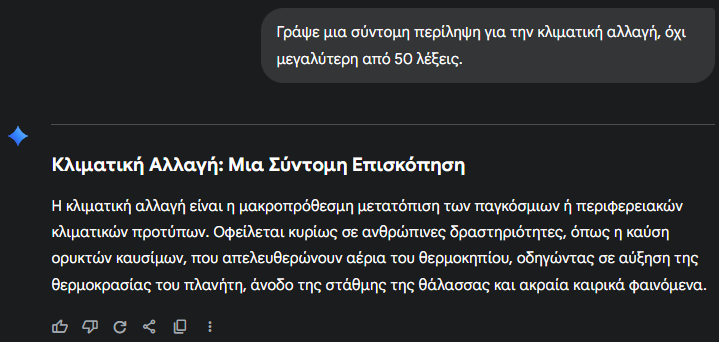
Γιατί είναι σημαντικό: Με αυτόν τον τρόπο διασφαλίζετε ότι η απάντηση θα είναι συνοπτική και θα ταιριάζει σε συγκεκριμένο χώρο ή ανάγκη.
✔ Παράδειγμα
«Γράψε ένα σύντομο κείμενο για τα οφέλη της άσκησης, χωρίς να χρησιμοποιείς καθόλου επιστημονικούς όρους.»
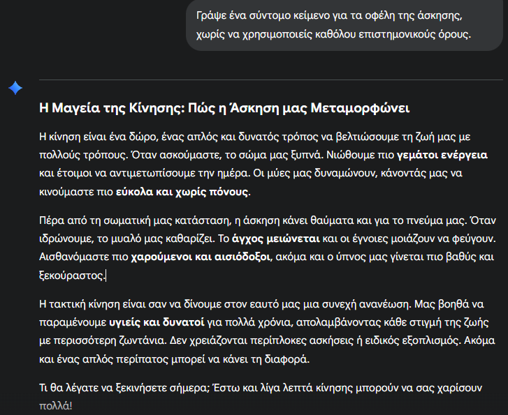
Γιατί είναι σημαντικό: Καθοδηγείτε το μοντέλο να χρησιμοποιήσει απλή και καθημερινή γλώσσα, ιδανική αν το κείμενο προορίζεται για ένα ευρύ κοινό, το οποίο δεν έχει εξειδικευμένες γνώσεις.
💡
Tip! Σκεφτείτε το prompt που γράφετε σαν οδηγίες που δίνετε σε έναν άνθρωπο. Όσο πιο σαφείς και συγκεκριμένες είναι οι οδηγίες σας, τόσο καλύτερο θα είναι το αποτέλεσμα. Μη φοβάστε να πειραματιστείτε! Ο καλύτερος τρόπος για να μάθετε είναι να δοκιμάζετε διαφορετικούς τρόπους διατύπωσης. Και όταν ξέρετε τι ΔΕΝ θέλετε ή τι όρια πρέπει να έχει η απάντηση, συμπεριλάβετέ το στο prompt σας.
Υποενότητα 4.2
Βελτίωση prompts
Ακόμα κι αν έχετε διατυπώσει ένα prompt με βάση τις βασικές αρχές, μπορεί να συμβεί η απάντηση του Gemini να μην είναι ακριβώς αυτό που περιμένατε. Μην απογοητεύεστε — αυτό είναι λογικό και μέρος της διαδικασίας. Η βελτίωση των prompts είναι μια δεξιότητα που θα σας βοηθήσει να φτάσετε στο επιθυμητό αποτέλεσμα. Σκεφτείτε το σαν μια συζήτηση: αν ο συνομιλητής σας δεν σας κατάλαβε πλήρως, δεν τα παρατάτε — ξαναδιατυπώνετε την ερώτησή σας ή του δίνετε περισσότερες πληροφορίες.
Διαβάστε ξανά το prompt που δώσατε Ήταν αρκετά σαφές και συγκεκριμένο; Περιείχε όλες τις απαραίτητες πληροφορίες; Μήπως ήταν πολύ γενικό ή ασαφές; Παράδειγμα: Αν ρωτήσατε «Πες μου για τα λουλούδια» και λάβατε μια απάντηση για το πώς αναπτύσσονται γενικά τα λουλούδια, ενώ εσείς θέλατε να μάθετε για συγκεκριμένα είδη λουλουδιών της Ελλάδας.
Προσθέστε περισσότερες λεπτομέρειες και πλαίσιο Αν η απάντηση ήταν πολύ γενική, κάντε το prompt σας πιο συγκεκριμένο. Βελτιωμένο prompt: «Πες μου για τα λουλούδια που ευδοκιμούν στην Ελλάδα, ιδιαίτερα αυτά που ανθίζουν την άνοιξη.» — Περιορίζετε το θέμα στην Ελλάδα και στην εποχή της άνοιξης.
Ορίστε ένα συγκεκριμένο κοινό Αν η απάντηση δεν είχε το ύφος ή το επίπεδο κατανόησης που θέλατε, ζητήστε από το μοντέλο να υιοθετήσει έναν ρόλο ή να απευθυνθεί σε συγκεκριμένο κοινό. Παράδειγμα: «Ως συνάδελφος βοτανολόγος, ανάλυσέ μου τους βιοχημικούς μηχανισμούς και τις κλινικές μελέτες που υποστηρίζουν τις θεραπευτικές ιδιότητες του χαμομηλιού.»
1. Μέθοδος «Αλυσίδα Σκέψης»: Αντί να ζητάτε απευθείας την τελική απάντηση, ζητήστε από το Gemini να σας εξηγήσει πώς «σκέφτηκε» ή να σας δείξει τα ενδιάμεσα βήματα που το οδήγησαν στο αποτέλεσμα. Αυτό είναι ιδιαίτερα χρήσιμο για πολύπλοκα προβλήματα.
✔ Παράδειγμα
«Εξήγησέ μου βήμα προς βήμα πώς θα λύσω την εξίσωση 2x+5=11. Δείξε μου τον τρόπο που το "σκέφτηκες".»
Γιατί είναι σημαντικό: Βοηθάει το Gemini να δομήσει τη «σκέψη» του με πιο λογικό τρόπο, οδηγώντας σε πιο ακριβείς και διαφανείς απαντήσεις. Επίσης, σας βοηθάει να κατανοήσετε τη διαδικασία και όχι μόνο να δείτε το αποτέλεσμα.
2. Μέθοδος «Αυτοδιόρθωσης»: Ζητήστε από το Gemini να ελέγξει την ίδια του την απάντηση για λάθη ή παραλείψεις και να τη διορθώσει.
✔ Παραδείγματα
«Αφού μου έδωσες την περίληψη, έλεγξέ την για τυχόν υπερβολικές επαναλήψεις και βελτίωσέ την για να είναι πιο περιεκτική.»
«Στην απάντησή σου για τις πρωτεύουσες της Ευρώπης, έλεγξε αν συμπεριέλαβες όλες τις χώρες κράτη-μέλη της Ευρωπαϊκής Ένωσης και διόρθωσε τυχόν παραλείψεις.»
Γιατί είναι σημαντικό: Ενθαρρύνει το Gemini να επιθεωρήσει την ποιότητα του δικού του παραγόμενου κειμένου, αυξάνοντας την ακρίβεια και την πληρότητα των απαντήσεων.
💡
Tip! Η εξάσκηση είναι το κλειδί. Μη φοβάστε να δοκιμάσετε αυτές τις πιο σύνθετες τεχνικές. Με τον καιρό, θα γίνετε πιο «ειδικοί» στο να συνομιλείτε με το Gemini και να παίρνετε ακριβώς αυτό που χρειάζεστε ως απάντηση. Δοκιμάστε όλα τα παραδείγματα που δίνονται παραπάνω και δημιουργήστε και δικά σας, ώστε να δείτε πώς απαντά το Gemini κάθε φορά.
ΑΝΑΛΥΤΙΚΗ ΥΠΟΕΝΟΤΗΤΑΕξήγηση · Παράδειγμα · Εφαρμογή
Συμπληρωματική υποενότητα · Υποενότητα 4.2
Gems: επαναχρησιμοποιήσιμες οδηγίες με σταθερά κριτήρια
Μαθησιακός στόχος: Να οργανώνετε έναν βοηθό για επαναλαμβανόμενη εργασία.
4 βήματα μελέτης · προσπάθησε πριν δεις την ανατροφοδότηση
Τα Gems επιτρέπουν προσαρμογή του Gemini με οδηγίες για επαναλαμβανόμενες ανάγκες. Αντί να ξαναγράφουμε κάθε φορά τον ίδιο ρόλο, ορίζουμε σκοπό, κοινό, μορφή εξόδου και κανόνες χειρισμού ελλιπών στοιχείων. Αυτό δεν αντικαθιστά τον έλεγχο της απάντησης.
Δοκιμάστε αυτό το prompt
Λειτούργησε ως βοηθός σχεδιασμού μαθημάτων για ενήλικους αρχάριους. Για κάθε κείμενο που δίνω, πρότεινε έναν μαθησιακό στόχο, ένα απλό παράδειγμα και δύο ερωτήσεις εφαρμογής με ενδεικτικές απαντήσεις. Μην προσθέτεις δυνατότητες προϊόντων που δεν τεκμηριώνονται στο υλικό. Σήμανε τις παλιές ημερομηνίες που χρειάζονται έλεγχο.
Πριν χρησιμοποιήσουμε το Gem σε πολλά μαθήματα, το δοκιμάζουμε σε εύκολο κείμενο, σε κείμενο με αντιφάσεις και σε κείμενο χωρίς επαρκείς πληροφορίες. Αναθεωρούμε τις οδηγίες με βάση τα λάθη που παρατηρούμε και καταγράφουμε την ημερομηνία της αλλαγής.
Μικρή άσκηση
Γιατί ένα Gem μπορεί να επαναλαμβάνει το ίδιο λάθος σε πολλά παραδοτέα;
Δείτε ενδεικτική απάντηση και εξήγηση
Επειδή ένα ασαφές ή λανθασμένο κριτήριο στις αποθηκευμένες οδηγίες εφαρμόζεται επανειλημμένα. Διορθώνουμε τον κανόνα και επανελέγχουμε τα επηρεαζόμενα παραδείγματα.
Ένας επαναχρησιμοποιήσιμος βοηθός χρειάζεται σαφή ταυτότητα εργασίας
Ένα Gem είναι χρήσιμο όταν επαναλαμβάνεται ο ίδιος τύπος εργασίας με παρόμοια κριτήρια. Αντί να ξαναγράφουμε κάθε φορά το ύφος και τους κανόνες, συγκεντρώνουμε σταθερές οδηγίες. Η αποστολή πρέπει να είναι συνεκτική: ένας βοηθός επιμέλειας εκπαιδευτικών σημειώσεων έχει διαφορετικές απαιτήσεις από έναν βοηθό σχεδιασμού ταξιδιού. Πολύ γενική αποστολή δυσκολεύει την αξιολόγηση και τη συντήρηση των οδηγιών.
Η προδιαγραφή περιλαμβάνει κοινό, μορφή εξόδου, πηγές και κανόνα χειρισμού ελλείψεων. Χρειάζεται επίσης να ορίζει τι δεν πρέπει να αλλάζει, όπως επίσημοι όροι ή αριθμητικά στοιχεία. Οι κανόνες πρέπει να είναι συμβατοί μεταξύ τους. Αν ζητούμε ταυτόχρονα «απόλυτη συντομία» και «όλες τις λεπτομέρειες», χρειάζεται προτεραιότητα ή διαφορετικά επίπεδα παρουσίασης.
Η δοκιμή γίνεται με περιπτώσεις που αποκαλύπτουν πραγματικές δυσκολίες. Χρησιμοποιούμε ένα κανονικό κείμενο, ένα με ασυνέπεια και ένα με ελλιπή πληροφορία. Καταγράφουμε ποια οδηγία χρειάζεται διευκρίνιση και επαναλαμβάνουμε τη δοκιμή μετά την αλλαγή. Έτσι ο βοηθός εξελίσσεται με βάση παρατηρούμενη συμπεριφορά και δεν θεωρείται αξιόπιστος απλώς επειδή η αρχική του περιγραφή είναι λεπτομερής.
Ο βοηθός μετατρέπει εγκεκριμένες σημειώσεις σε φύλλο 15 λεπτών για αρχάριους. Πρέπει να περιλαμβάνει στόχο, οδηγίες, μία δραστηριότητα και χωριστή λύση. Αν οι σημειώσεις δεν επαρκούν για επιστημονική εξήγηση, ο βοηθός οφείλει να σημειώσει το κενό αντί να επινοήσει τεκμηρίωση.
Στη δοκιμή δίνεται υλικό που περιέχει δύο αντικρουόμενους ορισμούς. Επιτυχία είναι να αναγνωριστεί η αντίφαση και να ζητηθεί διευκρίνιση, όχι να επιλεγεί αυθαίρετα ο πιο καλοδιατυπωμένος ορισμός.
Ενδεικτική οδηγία
Δημιούργησε φύλλο δραστηριότητας μόνο από τις εγκεκριμένες σημειώσεις. Κράτησε χωριστή τη λύση. Αν υπάρχει αντίφαση ή κενό, επισήμανέ το πριν συντάξεις την τελική εκδοχή.
Εργαστήριο εφαρμογής
Αντιστοίχισε κάθε μέρος της προδιαγραφής με τον σκοπό του.
Μεταφορά στη δική σου πράξη
Γράψε μια σύντομη αποστολή για δικό σου Gem και μία δύσκολη περίπτωση που θα χρησιμοποιούσες για έλεγχο.
Οι σημειώσεις παραμένουν σε αυτόν τον browser.
Κριτήρια αυτοαξιολόγησης
Έλεγξε αν η απάντησή σου συνδέεται με τη συγκεκριμένη έννοια, περιλαμβάνει ένα εφαρμόσιμο παράδειγμα και εξηγεί πώς θα ελέγξεις το αποτέλεσμα. Σύγκρινέ την με την αναλυτική εξήγηση και συζήτησε τυχόν αμφιβολία με τον εκπαιδευτή.
Υποενότητα 4.3
Η δύναμη του Ρόλου — Καθοδηγήστε το Gemini σαν «Ειδικό»
Μια από τις πιο ισχυρές τεχνικές για να λάβετε εξαιρετικά ακριβείς και στοχευμένες απαντήσεις από το Gemini είναι να του αναθέσετε έναν συγκεκριμένο ρόλο. Φανταστείτε ότι ζητάτε βοήθεια από έναν ειδικό σε κάποιο αντικείμενο. Όταν δίνετε στο μοντέλο έναν ρόλο, το βοηθάτε να προσαρμόσει την απάντησή του, χρησιμοποιώντας την κατάλληλη ορολογία, το ύφος και το επίπεδο λεπτομέρειας που θα χρησιμοποιούσε ένας πραγματικός ειδικός στον τομέα αυτό.
Τι σημαίνει να αναθέτετε ρόλο; Σημαίνει πως ξεκινάτε το prompt σας λέγοντας στο Gemini ποιος είναι, για τις ανάγκες αυτής της συνομιλίας:
«Ως ιστορικός…»
«Ως ειδικός marketing...»
«Ως συγγραφέας παιδικών βιβλίων…»
«Ως απλός πολίτης…»
Αυτό καθορίζει το πλαίσιο της απάντησης και το βοηθάει να «σκέφτεται» μέσα από την οπτική γωνία αυτού του ρόλου, προσφέροντας πιο εξειδικευμένες και χρήσιμες πληροφορίες.
Υποενότητα 4.3
Από γενική απάντηση σε ειδική συμβουλή
✘ Λανθασμένο / Γενικό prompt
«Πες μου μια υγιεινή διατροφή.»
✔ Σωστό / Με Ρόλο prompt
«Ως προσωπικός μου διατροφολόγος, θέλω να μου πεις για την υγιεινή διατροφή και τι θα πρέπει να προσέχω σε αυτά που καταναλώνω καθημερινά.»
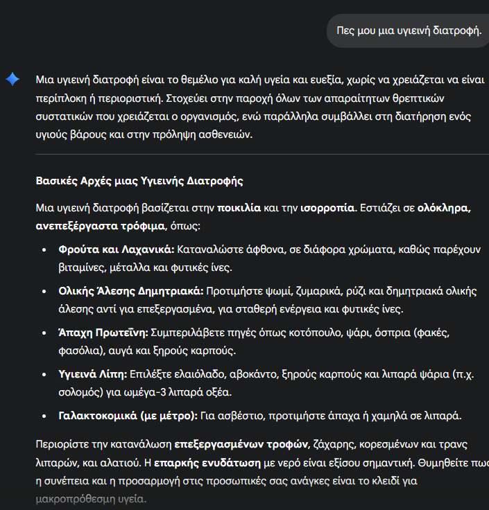
Σημείωση! Μπορείτε να του δώσετε πιο συγκεκριμένες πληροφορίες σχετικά με το τι επιτρέπεται και τι όχι να καταναλώσετε, ή με το τι σας αρέσει και τι όχι.
⚠️
Προσοχή! Κανένα μοντέλο τεχνητής νοημοσύνης, όποιο και να είναι αυτό, δεν αντικαθιστά τον γιατρό και τον δικηγόρο. Ποτέ δεν πρέπει να βασιζόμαστε σε πληροφορίες που λαμβάνουμε σχετικά με ιατρικά θέματα για την υγεία μας ή για νομικές συμβουλές από τα μοντέλα. Γι' αυτά τα θέματα πρέπει να απευθυνόμαστε πάντα στους ειδικούς.
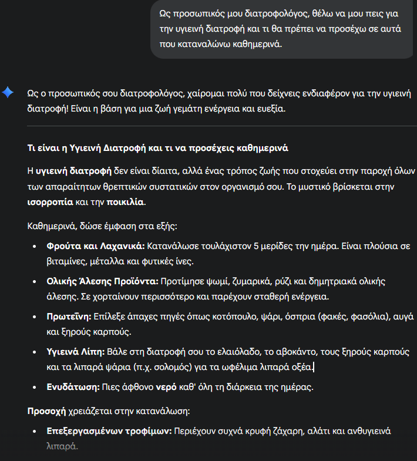
Υποενότητα 4.3
Από απλή εξήγηση σε λεπτομερή ανάλυση
✘ Λάθος / Γενικό prompt
«Τι είναι η τεχνητή νοημοσύνη;»
Απάντηση Gemini: μια βασική, γενική εξήγηση της τεχνητής νοημοσύνης.
✔ Σωστό / Με Ρόλο prompt
«Ως καθηγητής πανεπιστημίου στην πληροφορική, εξήγησέ μου την έννοια της μηχανικής μάθησης σε έναν πρωτοετή φοιτητή, συνοπτικά, και στη συνέχεια δώσε μου 1 παράδειγμα εφαρμογής της.»
Το αποτέλεσμα του prompt είναι μια δομημένη και ακαδημαϊκή εξήγηση, προσαρμοσμένη στο επίπεδο ενός φοιτητή, με ένα συγκεκριμένο παράδειγμα.
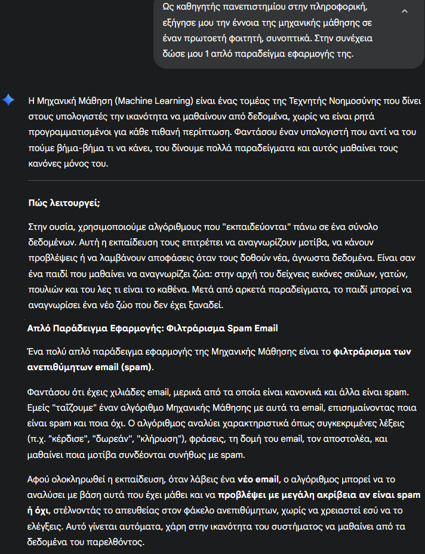
🔑
Συνοψίζοντας: Η ανάθεση ρόλου είναι σημαντική. Είναι σαν να δίνετε στο Gemini ένα πρίσμα μέσα από το οποίο θα δει το αίτημά σας. Το βοηθάει να φιλτράρει τις πληροφορίες του και να παράγει απαντήσεις που είναι σωστές και, κυρίως, πιο κοντά στις προσδοκίες σας. Είναι μια τεχνική που μπορεί να μετατρέψει μια μέτρια απάντηση σε μια εξαιρετική. Tip! Πειραματιστείτε με διαφορετικούς ρόλους — μπορεί να εκπλαγείτε από το πόσο καλά προσαρμόζεται το Gemini σε σχεδόν οποιοδήποτε σενάριο.
Το Gemini είναι ένα ισχυρό εργαλείο από μόνο του, αλλά γίνεται ακόμα πιο χρήσιμο και ενδιαφέρον όταν συνεργάζεται με άλλες υπηρεσίες και εφαρμογές της Google που ήδη χρησιμοποιεί ένας μέσος χρήστης. Αυτή η συνεργασία επιτυγχάνεται μέσω των επεκτάσεων (extensions).
Φανταστείτε ότι το Gemini έχει τη δυνατότητα να «βλέπει» και να χρησιμοποιεί πληροφορίες από άλλες εφαρμογές σας — πάντα βέβαια με την άδειά σας. Αυτές οι «συνδέσεις» είναι οι επεκτάσεις. Είναι πρόσθετες λειτουργίες που επιτρέπουν στο Gemini να αλληλεπιδρά και να αντλεί πληροφορίες από συγκεκριμένες εφαρμογές και υπηρεσίες της Google.
Πώς λειτουργούν: Όταν ενεργοποιείτε μια επέκταση, δίνετε στο μοντέλο την άδεια να έχει πρόσβαση σε σχετικά δεδομένα από την αντίστοιχη Google εφαρμογή σας — όπως, για παράδειγμα, τα emails σας από το Gmail ή τα αρχεία σας από το Google Drive. Με αυτόν τον τρόπο, ο ψηφιακός σας βοηθός μπορεί να απαντήσει σε ερωτήσεις που απαιτούν πρόσβαση σε αυτές τις πληροφορίες ή να εκτελέσει ενέργειες που σχετίζονται με αυτές τις εφαρμογές — ξεκινώντας με τους Χάρτες, το YouTube, τις Πτήσεις και τα Ξενοδοχεία.
Πού τις βρίσκετε: Όπως είδαμε και στις Βασικές ρυθμίσεις, οι επεκτάσεις βρίσκονται στην ενότητα «Εφαρμογές» μέσα στις ρυθμίσεις του Gemini, όπου μπορείτε να τις ενεργοποιήσετε ή να τις απενεργοποιήσετε.
ΑΝΑΛΥΤΙΚΗ ΥΠΟΕΝΟΤΗΤΑΕξήγηση · Παράδειγμα · Εφαρμογή
Συμπληρωματική υποενότητα · Υποενότητα 5.1
Συνδεδεμένες εφαρμογές και computer use
Μαθησιακός στόχος: Να διακρίνετε τη σύνδεση υπηρεσιών από τον χειρισμό οθόνης.
4 βήματα μελέτης · προσπάθησε πριν δεις την ανατροφοδότηση
Μια συνδεδεμένη εφαρμογή δίνει πρόσβαση σε συγκεκριμένες υπηρεσίες και ενέργειες. Το computer use είναι διαφορετική τεχνική: το μοντέλο εξετάζει την οθόνη και προτείνει ενέργειες όπως κλικ ή πληκτρολόγηση. Στο Gemini API, η εφαρμογή του προγραμματιστή είναι υπεύθυνη για την εκτέλεση των ενεργειών και για τον χειρισμό των απαιτούμενων επιβεβαιώσεων. Η ύπαρξη του API δεν αποδεικνύει ότι κάθε χρήστης του Gemini app διαθέτει έλεγχο υπολογιστή.
Πρωτότυπο εκπαιδευτικό διάγραμμα · 2026. Η εξήγηση αποδίδεται και στο κείμενο.
Για την εκπαιδευτική άσκηση ορίζουμε διαφορετικά δικαιώματα: ανάγνωση ημερολογίου, πρόταση ωραρίου, δημιουργία προσχεδίου πρόσκλησης. Η αποστολή σε άλλους συμμετέχοντες είναι ξεχωριστή πράξη. Έτσι το «βοήθησέ με να οργανώσω» γίνεται συγκεκριμένο και ελέγξιμο.
Μικρή άσκηση
Ποια οδηγία είναι σαφέστερη: «οργάνωσε τα πάντα» ή «βρες δύο διαθέσιμες ώρες και ετοίμασε πρόσκληση χωρίς αποστολή»;
Δείτε ενδεικτική απάντηση και εξήγηση
Η δεύτερη, επειδή καθορίζει παραδοτέο και όριο ενεργειών. Πριν από αποστολή ελέγχουμε παραλήπτες, ημερομηνία, ζώνη ώρας και περιεχόμενο.
Από την πληροφορία σε μια ενέργεια μέσα σε εφαρμογή
Οι συνδεδεμένες εφαρμογές διευκολύνουν την πρόσβαση σε πληροφορίες σχετικές με την εργασία. Η χρήση τους χρειάζεται σαφή προσδιορισμό πηγής: ποιο μήνυμα, ποιο αρχείο ή ποιο ημερολόγιο αφορά το αίτημα. Η ύπαρξη πολλών παρόμοιων αντικειμένων μπορεί να οδηγήσει σε λάθος επιλογή. Για αυτό ζητάμε αναγνωρίσιμα στοιχεία, όπως τίτλο, ημερομηνία και συντάκτη, πριν βασιστούμε στο αποτέλεσμα.
Η ανάκτηση πληροφορίας διαφέρει από την αλλαγή δεδομένων. Η σύνοψη ενός email δεν δημιουργεί υποχρέωση αποστολής απάντησης, ενώ η πρόταση συμβάντος δεν αποτελεί έγκριση πρόσκλησης συμμετεχόντων. Όταν η εργασία περιλαμβάνει πράξη με εξωτερικό αποτέλεσμα, η οδηγία πρέπει να ορίζει ποιο στοιχείο μπορεί να αλλάξει και σε ποιο σημείο χρειάζεται επιβεβαίωση. Η διάκριση διατηρεί τον έλεγχο της διαδικασίας.
Στο computer use η εφαρμογή εκτελεί ενέργειες που προτείνονται από το μοντέλο και επιστρέφει την κατάσταση που προκύπτει. Αυτό απαιτεί έλεγχο αποτελέσματος: έγινε η σωστή επιλογή, φορτώθηκε η σωστή σελίδα, εμφανίστηκε μήνυμα σφάλματος; Δεν αρκεί η πρόθεση του προηγούμενου βήματος. Η επόμενη ενέργεια πρέπει να βασίζεται στην πραγματική νέα κατάσταση και στα διαθέσιμα δικαιώματα.
Παράδειγμα: δημιουργία συνάντησης από μήνυμα
Υποθετικό εκπαιδευτικό σενάριο
Το μήνυμα γράφει «ας συναντηθούμε την επόμενη Παρασκευή στις 10». Πριν δημιουργηθεί συμβάν, χρειάζονται ημερομηνία αναφοράς, ζώνη ώρας, διάρκεια και συμμετέχοντες. Η ερμηνεία της σχετικής ημερομηνίας χωρίς αυτά τα στοιχεία μπορεί να οδηγήσει σε λάθος εβδομάδα ή ώρα.
Η ασφαλής προετοιμασία επιστρέφει προσχέδιο συμβάντος και συγκεκριμένες εκκρεμότητες. Η αποστολή προσκλήσεων πραγματοποιείται μόνο όταν τα στοιχεία έχουν επιβεβαιωθεί και υπάρχει σχετική εξουσιοδότηση.
Ενδεικτική οδηγία
Ετοίμασε προσχέδιο συμβάντος από το μήνυμα. Δείξε ημερομηνία, ώρα, ζώνη ώρας, διάρκεια και συμμετέχοντες. Σημείωσε όσα λείπουν. Μην στείλεις προσκλήσεις πριν επιβεβαιωθούν.
Εργαστήριο εφαρμογής
Οργάνωσε τη διαδικασία πριν σταλεί μια πρόσκληση.
Μετακίνησε τα βήματα με τα κουμπιά ↑ και ↓. Το πρώτο βήμα πρέπει να βρίσκεται επάνω.
Ταυτοποιώ το μήνυμα και το αίτημα
Εκτελώ μόνο την εγκεκριμένη ενέργεια
Παρουσιάζω προσχέδιο για επιβεβαίωση
Ελέγχω ημερομηνία, ώρα και συμμετέχοντες
Μεταφορά στη δική σου πράξη
Δώσε ένα παράδειγμα όπου η ανάγνωση δεδομένων επιτρέπεται, αλλά η μεταβολή τους χρειάζεται διαφορετική έγκριση.
Οι σημειώσεις παραμένουν σε αυτόν τον browser.
Κριτήρια αυτοαξιολόγησης
Έλεγξε αν η απάντησή σου συνδέεται με τη συγκεκριμένη έννοια, περιλαμβάνει ένα εφαρμόσιμο παράδειγμα και εξηγεί πώς θα ελέγξεις το αποτέλεσμα. Σύγκρινέ την με την αναλυτική εξήγηση και συζήτησε τυχόν αμφιβολία με τον εκπαιδευτή.
Υποενότητα 5.1
Γιατί είναι σημαντικές οι επεκτάσεις;
Οι επεκτάσεις μετατρέπουν το Gemini από έναν απλό συνομιλητή σε έναν πολύπλευρο προσωπικό βοηθό.
🧩
Ολοκληρωμένες Απαντήσεις
Το Gemini μπορεί να σας δώσει απαντήσεις που συνδυάζουν πληροφορίες από την ευρύτερη γνώση του με τα προσωπικά σας δεδομένα (π.χ. από τα email σας ή το ημερολόγιό σας).
⏱️
Εξοικονόμηση Χρόνου
Δεν χρειάζεται να μεταπηδάτε μεταξύ εφαρμογών. Μπορείτε να ζητήσετε από το Gemini να βρει πληροφορίες ή να κάνει ενέργειες για εσάς, όλα από την ίδια διεπαφή.
🎯
Εξατομικευμένη Εμπειρία
Οι απαντήσεις γίνονται πιο σχετικές με τις δικές σας ανάγκες και δεδομένα.
Στη συνέχεια, θα δούμε αναλυτικά πώς λειτουργούν μερικές από τις πιο χρήσιμες επεκτάσεις της Google και πώς μπορείτε να τις αξιοποιήσετε στην καθημερινότητά σας.
Υποενότητα 5.2
Οργάνωση του χρόνου με το Google Calendar
Μια από τις πιο χρήσιμες επεκτάσεις του Gemini είναι η σύνδεσή του με το Google Calendar (Ημερολόγιο Google). Αυτή η επέκταση σάς επιτρέπει να διαχειρίζεστε το πρόγραμμά σας, να βρίσκετε πληροφορίες για τις συναντήσεις σας και να οργανώνετε τον χρόνο σας — όλα αυτά μέσα από το περιβάλλον συνομιλίας του Gemini.
Βρείτε πληροφορίες για το πρόγραμμά σας: Ρωτήστε το τι συναντήσεις, ραντεβού ή εκδηλώσεις έχετε για σήμερα, αύριο ή οποιαδήποτε ημερομηνία.
Ο τρόπος που μπορούμε να κάνουμε αναζήτηση στο Google Calendar γίνεται γράφοντας στο πλαίσιο το prompt, προσθέτοντας το σύμβολο @. Στη συνέχεια, εμφανίζεται ένα μενού που δείχνει τις ενεργοποιημένες επεκτάσεις. Εκεί, εφόσον έχετε ενεργοποιήσει το Google Calendar, θα μπορέσετε να το επιλέξετε. Δείτε στην εικόνα παρακάτω.
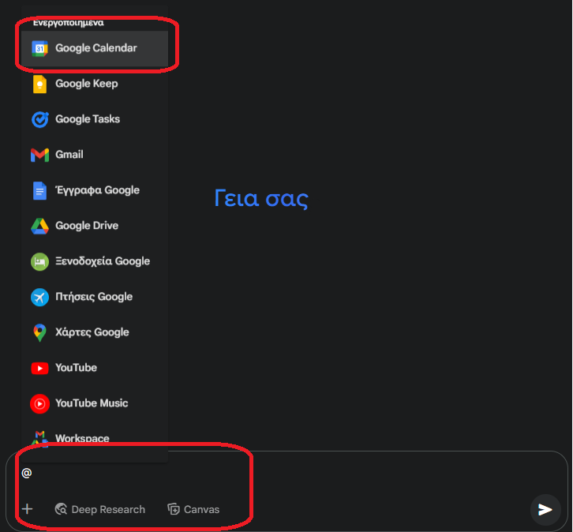
Υποενότητα 5.2
Ερωτήσεις και νέα συμβάντα στο Calendar
Στη συνέχεια, μπορείτε να γράψετε το ερώτημά σας.
✔ Παράδειγμα
«Τι έχω στο ημερολόγιό μου για αύριο;»
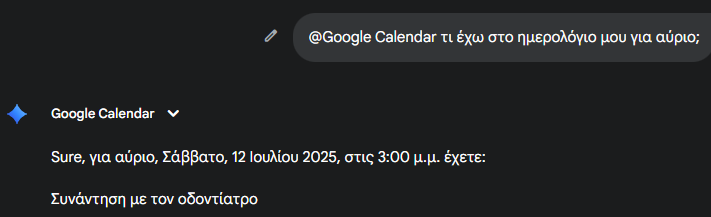
Δημιουργήστε νέα συμβάντα: Αντί να ανοίξετε το Google Calendar και να προσθέσετε ένα ραντεβού, μπορείτε να το καταχωρίσετε και πάλι μέσα από το περιβάλλον του Gemini, γράφοντας ένα prompt και δίνοντάς του τις απαραίτητες λεπτομέρειες.
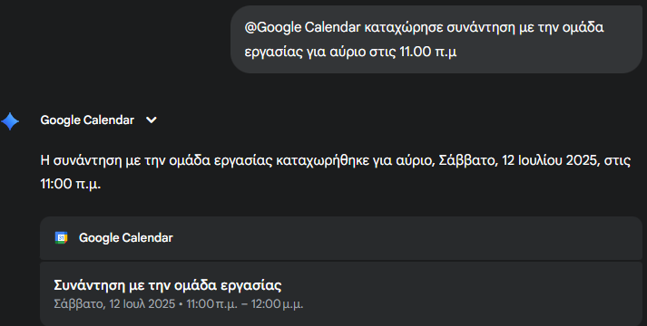
📅
Γιατί είναι σημαντικό: Η επέκταση σάς βοηθάει να παραμείνετε οργανωμένοι και συνεπείς με το πρόγραμμά σας. Αντί να ανοίγετε την εφαρμογή του ημερολογίου, μπορείτε απλά να συνομιλήσετε με το Gemini και να διαχειριστείτε τις υποχρεώσεις σας με φυσικό τρόπο, εξοικονομώντας χρόνο και απλοποιώντας την καθημερινότητά σας.
Υποενότητα 5.3
Διαχείριση Email με το Gmail
Το Gmail είναι μια από τις πιο δημοφιλείς υπηρεσίες email στον κόσμο και η σύνδεσή του με το Gemini μέσω επέκτασης μπορεί να εξοικονομήσει πολύ χρόνο και κόπο. Αυτή η επέκταση επιτρέπει στο Gemini να σας βοηθήσει να διαχειριστείτε τα εισερχόμενα μηνύματά σας, να βρείτε συγκεκριμένα emails, ακόμα και να σας βοηθήσει να συντάξετε απαντήσεις.
Βρείτε συγκεκριμένα emails: Αν ψάχνετε ένα email αλλά δεν θυμάστε ακριβώς ποιος το έστειλε ή τι έγραφε, το Gemini μπορεί να σας βοηθήσει να το εντοπίσετε.
✔ Παραδείγματα
«Βρες το email από την κ. Παπαδοπούλου σχετικά με το ραντεβού μας την προηγούμενη εβδομάδα.» «Ποια emails έχω λάβει σήμερα που να αναφέρουν τη λέξη προσφορά;»
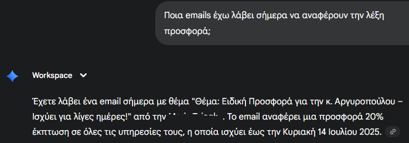
Υποενότητα 5.3
Σύνταξη απαντήσεων και περιλήψεις
Σύνταξη απάντησης ή νέα emails: Ο ψηφιακός βοηθός μπορεί να σας βοηθήσει να γράψετε γρήγορα ένα email, είτε ως απάντηση σε ένα υπάρχον μήνυμα, είτε ως ένα εντελώς νέο.
✔ Παράδειγμα
«Γράψε μια ευγενική απάντηση στο τελευταίο email από τον κ. Γεωργίου, επιβεβαιώνοντας ότι θα είμαι εκεί στην ώρα μου για να παρουσιάσω τη νέα ιδέα του project.»
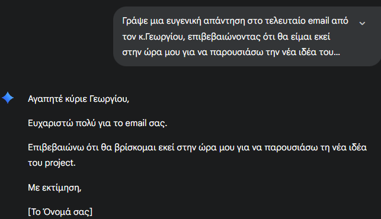
✔ Παράδειγμα
«Σύνταξε ένα email στον συνάδελφο κ. Αντωνίου για να του ζητήσω τις σημειώσεις από τη χθεσινή συνάντηση.»
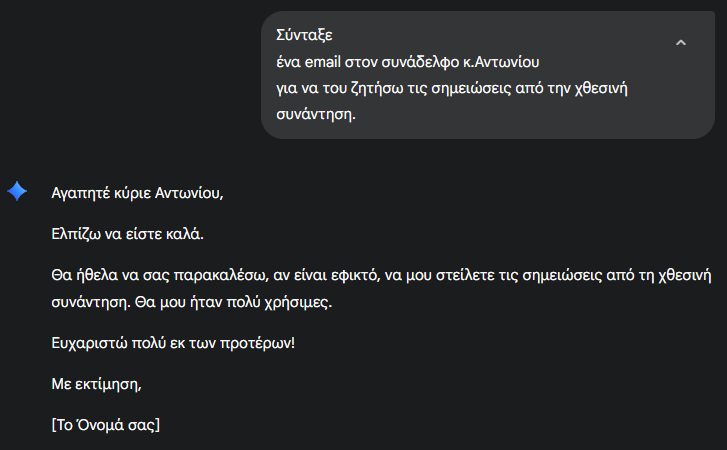
Επιπλέον, μπορεί να κάνει περίληψη στην περίπτωση που έχετε λάβει ένα μεγάλο email ή μια σειρά από emails και θέλετε να καταλάβετε γρήγορα τα βασικά σημεία — π.χ. «Κάνε μου μια περίληψη των emails που έλαβα από την ομάδα του project X.»
📧
Γιατί είναι σημαντικό: Η επέκταση Gmail μετατρέπει το Gemini σε έναν προσωπικό βοηθό διαχείρισης email. Σας βοηθάει να παραμένετε ενημερωμένοι, να απαντάτε πιο γρήγορα και να οργανώνετε την αλληλογραφία σας — όλα αυτά χωρίς να χρειάζεται να ψάχνετε ή να γράφετε ολόκληρα μηνύματα από την αρχή.
Υποενότητα 5.4
Εργασία με αρχεία στο Google Drive
Το Google Drive είναι ο προσωπικός σας αποθηκευτικός χώρος στο «σύννεφο» (cloud), όπου αποθηκεύετε τα αρχεία σας, όπως έγγραφα, φωτογραφίες, βίντεο κ.τ.λ. Η σύνδεση του Gemini με το Google Drive μέσω της επέκτασης σάς επιτρέπει να αλληλεπιδράτε με τα αρχεία σας με έναν εντελώς νέο, έξυπνο τρόπο, χωρίς να χρειάζεται να ψάχνετε χειροκίνητα.
Βρείτε συγκεκριμένα αρχεία: Αν ψάχνετε ένα αρχείο αλλά δεν θυμάστε ακριβώς το όνομά του ή πού το έχετε αποθηκεύσει, το Gemini μπορεί να το βρει για εσάς χρησιμοποιώντας λέξεις-κλειδιά ή περιγραφές.
✔ Παράδειγμα
«Βρες μου το έγγραφο για την παρουσίαση για το digital marketing που φτιάξαμε.»
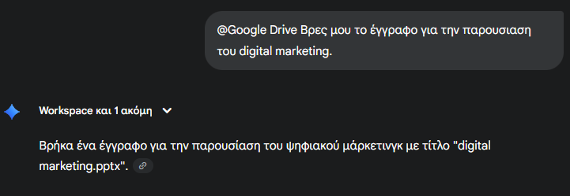
✔ Παράδειγμα
«Ποια αρχεία pdf έχω στο Drive μου σχετικά με την "τεχνολογία";»
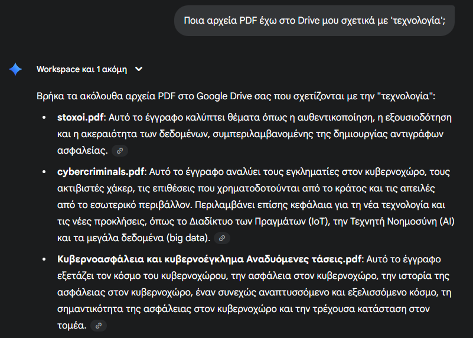
Υποενότητα 5.4
Περιλήψεις και ερωτήσεις στα αρχεία σας
Συνοψίστε το περιεχόμενο των αρχείων: Έχετε ένα μεγάλο έγγραφο στο Drive και θέλετε να καταλάβετε γρήγορα τα βασικά του σημεία; Το Gemini μπορεί να σας κάνει περίληψη του περιεχομένου.
✔ Παραδείγματα
«Θέλω να μου κάνεις περίληψη του pdf αρχείου "AI-Act-Greek".» «@Google Drive Δώσε μου τα γενικά συμπεράσματα του εγγράφου "Risk-Levels"»
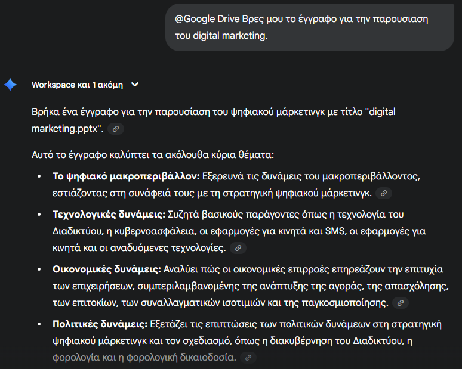
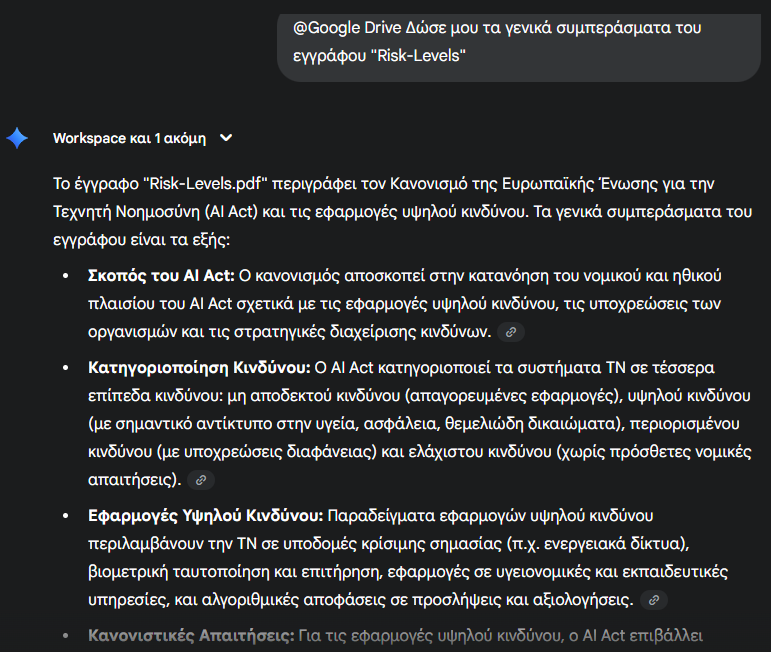
Απαντήσεις σε ερωτήσεις βασισμένες σε αρχεία του Drive: Μπορείτε να θέσετε ερωτήσεις στο Gemini σχετικά με το περιεχόμενο ενός αρχείου, σαν να το είχε διαβάσει και να σας απαντούσε το ίδιο.
✔ Παράδειγμα
«Με βάση το αρχείο "Risk-Levels" πες μου συνοπτικά ποια είναι τα επίπεδα κινδύνου.»
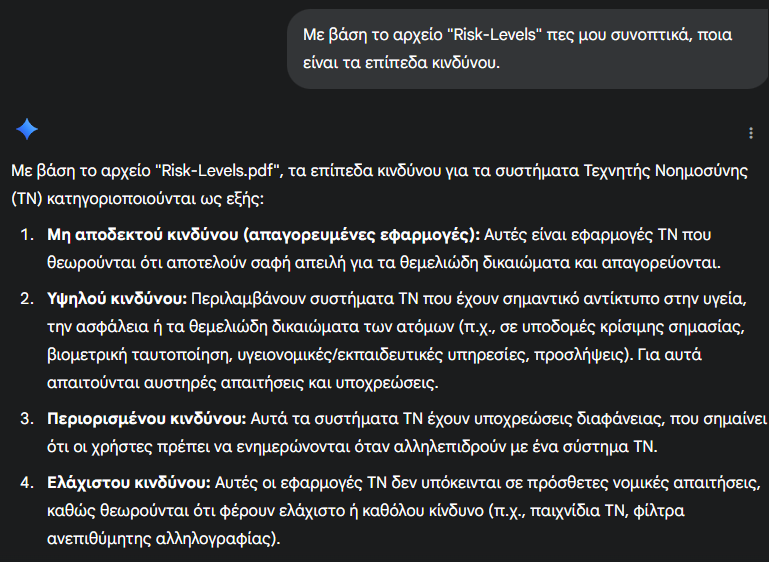
📁
Γιατί είναι σημαντικό: Η επέκταση του Google Drive μετατρέπει το Gemini σε έναν ψηφιακό βοηθό αρχειοθέτησης και ανάλυσης δεδομένων. Σας βοηθάει να βρίσκετε γρήγορα πληροφορίες μέσα στα αρχεία σας, να κατανοείτε το περιεχόμενό τους χωρίς να τα διαβάσετε ολόκληρα και να αξιοποιείτε τα δεδομένα σας πιο αποτελεσματικά — για προσωπική χρήση ή εργασία.
Υποενότητα 5.5
Δημιουργία και Ανάκτηση σημειώσεων με το Google Keep
Το Google Keep είναι μια απλή και εύχρηστη εφαρμογή για να κρατάτε σημειώσεις, λίστες και υπενθυμίσεις. Η σύνδεση του Gemini με το Google Keep μέσω επέκτασης σάς επιτρέπει να δημιουργείτε και να βρίσκετε τις σημειώσεις σας, χωρίς να χρειάζεται να ανοίξετε την εφαρμογή.
Βρείτε υπάρχουσες σημειώσεις: Μπορείτε να ζητήσετε από το Gemini να σας βρει σημειώσεις με βάση τον τίτλο ή το περιεχόμενό τους.
✔ Παράδειγμα
«@Google Keep μπορείς να μου εμφανίσεις τη λίστα με τις χειμερινές τοποθεσίες για διακοπές;»
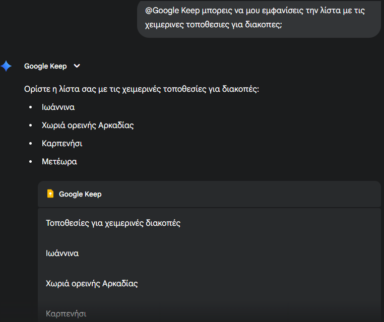
Υποενότητα 5.6
Οργάνωση εργασιών με το Google Tasks
Το Google Tasks είναι μια απλή εφαρμογή της Google που σας επιτρέπει να δημιουργείτε λίστες με εργασίες (tasks) και να τις οργανώνετε. Η σύνδεση του Gemini με το Google Tasks μέσω επέκτασης το καθιστά έναν χρήσιμο βοηθό για να διαχειρίζεστε τις εκκρεμότητές σας.
Προσθέστε νέες εργασίες: Μπορείτε να του πείτε ποιες εργασίες θέλετε να προσθέσετε στη λίστα σας, και το Gemini θα τις καταχωρίσει απευθείας στο Google Tasks.
✔ Παράδειγμα
«Πρόσθεσε μια εργασία για αύριο "συνάντηση για το project X".»
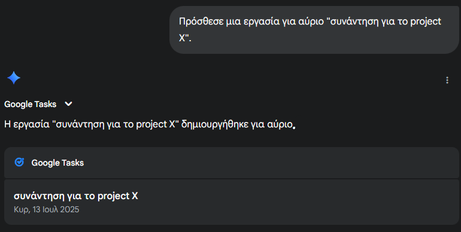
✔ Παράδειγμα
«@Google Tasks Θέλω να προσθέσω μια εργασία: "Τηλεφώνησε στον ηλεκτρολόγο" τη Δευτέρα το πρωί.»
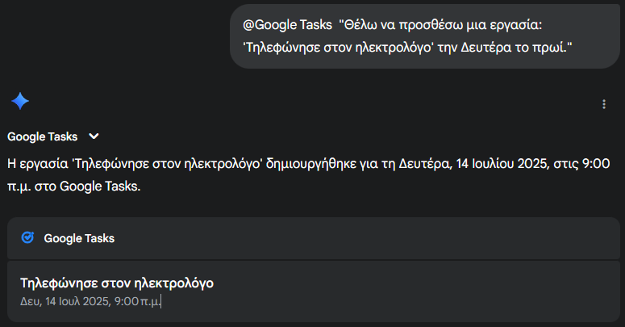
Υποενότητα 5.6
Διαγραφή εργασιών
Διαγράψτε μια εργασία: Όταν έχετε τελειώσει με μια εργασία, μπορείτε να ζητήσετε από το Gemini να τη διαγράψει εντελώς.
✔ Παράδειγμα
«@Google Tasks διέγραψε το "τηλεφώνησε στον ηλεκτρολόγο".»
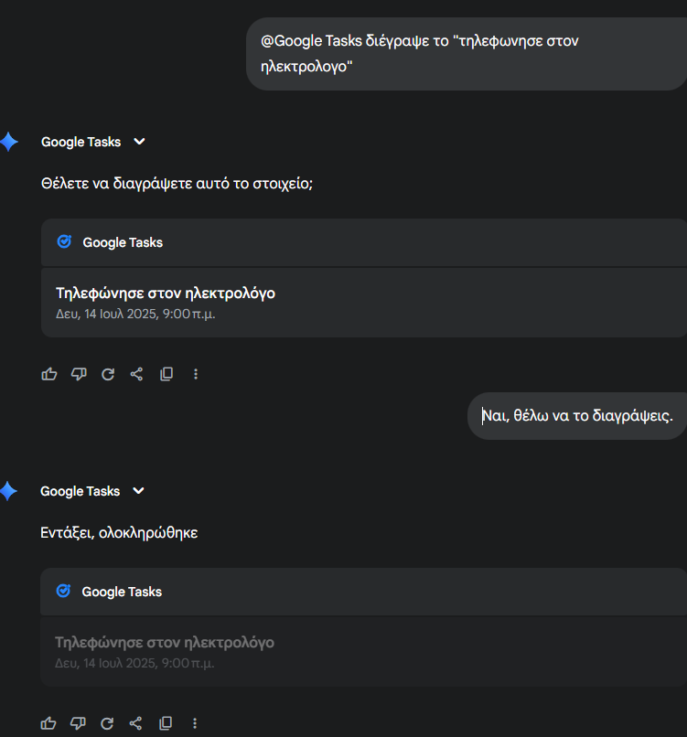
✅
Η επέκταση Google Tasks μετατρέπει το Gemini σε έναν προσωπικό βοηθό διαχείρισης εργασιών. Σας βοηθά να παραμένετε οργανωμένοι, να θυμάστε τις υποχρεώσεις σας και να διασφαλίζετε ότι τίποτα δεν ξεχνιέται — όλα αυτά με απλές εντολές συνομιλίας. Είναι ένας εύκολος τρόπος να διατηρείτε την παραγωγικότητά σας σε υψηλά επίπεδα.
Υποενότητα 5.7
Πλοήγηση και αναζήτηση με Google Maps
Το Google Maps είναι η κορυφαία εφαρμογή πλοήγησης και εξερεύνησης του κόσμου. Η ενσωμάτωση του Gemini στα Google Maps φέρνει μια νέα εποχή στην πλοήγηση, κάνοντας την εμπειρία πιο έξυπνη, πιο εξατομικευμένη και πιο αποτελεσματική.
Πώς το Gemini βελτιώνει τα Google Maps:
Ενισχυμένη πλοήγηση: Το Gemini προσφέρει βελτιωμένες οπτικές οδηγίες πλοήγησης, με τρισδιάστατη απεικόνιση και σαφήνεια στις αλλαγές λωρίδας και τις εξόδους.
Πληροφορίες σε πραγματικό χρόνο: Μπορείτε να ρωτήσετε το Gemini για πληροφορίες σχετικά με ένα μέρος και να λάβετε απαντήσεις σε πραγματικό χρόνο, χωρίς να μεταβείτε σε άλλες εφαρμογές — π.χ. «Ποιος είναι ο πιο γρήγορος τρόπος για να φτάσω εκεί;», «Τι λένε οι κριτικές για αυτό το μέρος;»
✔ Παράδειγμα
«@Χάρτες Google Πόσο απέχει η Αθήνα από την Πάτρα;»
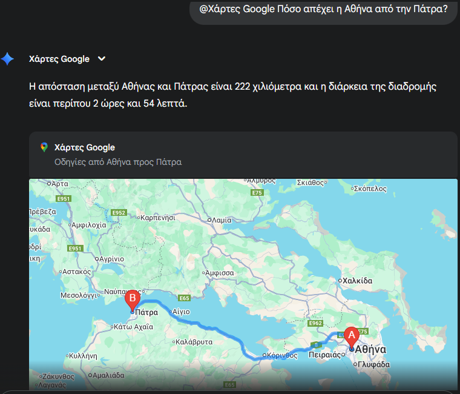
Υποενότητα 5.7
Διαδρομές και εξατομικευμένες προτάσεις
✔ Παράδειγμα
«@Χάρτες Google πόσα διόδια υπάρχουν σε αυτή τη διαδρομή και πόσο κοστίζει κάθε ένα από αυτά;»
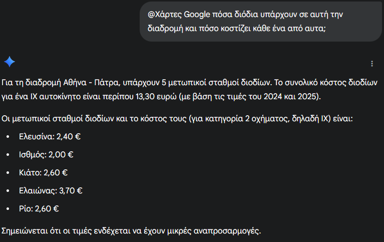
Εξατομικευμένες προτάσεις: Το Gemini μπορεί να σας προτείνει μέρη και δραστηριότητες με βάση τα ενδιαφέροντά σας και το ιστορικό σας.
✔ Παραδείγματα
«@Χάρτες Google τι δραστηριότητες μπορώ να κάνω στην Πάτρα;» «@Χάρτες Google τι λένε οι κριτικές για το Rafting και Καγιάκ στον Εύηνο ποταμό;»
Υποενότητα 5.8
Αναζήτηση video στο YouTube
Το YouTube είναι η μεγαλύτερη πλατφόρμα βίντεο στον κόσμο. Η ενσωμάτωση του Gemini στο YouTube σάς επιτρέπει να βρίσκετε και να μαθαίνετε για βίντεο, χωρίς να χρειάζεται να ανοίξετε την εφαρμογή ή την ιστοσελίδα του YouTube.
Αναζήτηση βίντεο: Μπορείτε να ζητήσετε από το Gemini να βρει βίντεο με βάση λέξεις-κλειδιά, θέματα ή ακόμα και περιγραφές.
✔ Παράδειγμα
«@YouTube Μπορείς να μου βρεις βίντεο με συνταγές για vegan μαγειρική;»
Υποενότητα 5.8
Λήψη πληροφοριών για βίντεο
Λήψη πληροφοριών για βίντεο: Μπορείτε να ρωτήσετε το Gemini για λεπτομέρειες σχετικά με ένα συγκεκριμένο βίντεο, όπως: τίτλο, περιγραφή, αριθμό προβολών, ημερομηνία δημοσίευσης, κανάλι που το ανέβασε.
✔ Παράδειγμα
«Ποια είναι η διάρκεια, ο τίτλος και η ημερομηνία δημοσίευσης αυτού του βίντεο;» — και επικολλάτε τον σύνδεσμο του βίντεο.
▶️
Γιατί είναι σημαντικό: Η ενσωμάτωση του YouTube στο Gemini κάνει την αναζήτηση και την κατανάλωση βίντεο πιο εύκολη και αποτελεσματική. Μπορείτε να βρείτε ακριβώς αυτό που ψάχνετε, να λάβετε πληροφορίες για το περιεχόμενο και να παρακολουθήσετε βίντεο — ιδιαίτερα χρήσιμο για γρήγορη αναζήτηση πληροφοριών ή παρακολούθηση χωρίς διακοπές.
Υποενότητα 5.9
Σχεδιασμός ταξιδιών — Πτήσεις Google
Το Gemini μπορεί να γίνει ο προσωπικός σας ταξιδιωτικός πράκτορας, βοηθώντας σας να οργανώσετε τις διακοπές ή τα επαγγελματικά σας ταξίδια. Χρησιμοποιώντας τις επεκτάσεις για τις Πτήσεις Google και τα Ξενοδοχεία Google, μπορείτε να βρείτε τις καλύτερες προσφορές για πτήσεις και καταλύματα, χωρίς να χρειαστεί να ψάξετε σε πολλές ιστοσελίδες.
Αναζήτηση πτήσεων: Μπορείτε να ζητήσετε από το Gemini να βρει πτήσεις με βάση: τον προορισμό, τις ημερομηνίες, τον αριθμό των επιβατών, την αεροπορική εταιρεία, την τιμή, τη διάρκεια και τις ώρες αναχώρησης/άφιξης (τα τελευταία προαιρετικά).
✔ Παραδείγματα
«@Πτήσεις Google Βρες μου τις φθηνότερες πτήσεις από Αθήνα για Λονδίνο για το επόμενο Σαββατοκύριακο.» «@Πτήσεις Google Ποιες είναι οι απευθείας πτήσεις από Αθήνα για Παρίσι τον Αύγουστο;»
Υποενότητα 5.9
Σχεδιασμός ταξιδιών — Ξενοδοχεία Google
Αναζήτηση ξενοδοχείων: Μπορείτε να ζητήσετε από το Gemini να βρει ξενοδοχεία με βάση: τον προορισμό, τις ημερομηνίες, τον αριθμό των ατόμων, την τιμή, τη βαθμολογία, τις παροχές (π.χ. πισίνα, Wi-Fi) και τον τύπο καταλύματος (τα τελευταία προαιρετικά).
✔ Παραδείγματα
«Βρες μου ξενοδοχεία στη Ρώμη κοντά στο Κολοσσαίο με βαθμολογία πάνω από 4 αστέρια και τιμή μέχρι 150 ευρώ τη βραδιά.» «@Ξενοδοχεία Google Ποια είναι τα πιο οικονομικά καταλύματα στη Βαρκελώνη για 3 άτομα τον Σεπτέμβριο;»
✈️
Γιατί είναι σημαντικό: Η ενσωμάτωση των Πτήσεων και των Ξενοδοχείων Google στο Gemini κάνει τον σχεδιασμό των ταξιδιών σας πιο γρήγορο, πιο εύκολο και πιο αποτελεσματικό. Μπορείτε να βρείτε τις καλύτερες προσφορές, να συγκρίνετε επιλογές και να οργανώσετε ολόκληρο το ταξίδι σας μέσα από μια απλή συνομιλία — και να επικεντρωθείτε στην απόλαυση του ταξιδιού σας.
Κεφάλαιο 6 · Εισαγωγή
Ανακαλύπτοντας τα Νέα Εργαλεία Δημιουργίας και Έρευνας
Αφού πλέον γνωρίζετε τις βασικές αρχές του σωστού prompt — δηλαδή πώς να μιλάτε με σαφήνεια και ακρίβεια στο Gemini — ήρθε η ώρα να ανακαλύψετε πώς να πολλαπλασιάσετε τη δύναμη των ερωτήσεών σας χρησιμοποιώντας τα προηγμένα εργαλεία της εφαρμογής.
Το Gemini δεν λειτουργεί μόνο ως ένας συνομιλητής, αλλά ως ένα ολοκληρωμένο οικοσύστημα δημιουργίας και έρευνας. Πατώντας το κουμπί «Εργαλεία», ανοίγετε ένα μενού με ειδικές λειτουργίες που εκτελούν εργασίες πολύ πιο σύνθετες από μια απλή απάντηση.
💎
Να σημειωθεί ότι ορισμένα από τα πιο προηγμένα εργαλεία που παρουσιάζονται παρακάτω, όπως «Δημιουργία με Veo» και «Δυναμική προβολή», διατίθενται αποκλειστικά στους συνδρομητές των προγραμμάτων Gemini Pro ή Google AI Premium.
Υποενότητα 6.1
Deep Research — Βαθιά Έρευνα
Η λειτουργία «Βαθιά Έρευνα» είναι ένα προηγμένο εργαλείο που αξιοποιεί την ισχύ των μοντέλων Gemini (όπως το Gemini 3 Pro) για να πραγματοποιήσει εξαιρετικά λεπτομερή και πολυεπίπεδη αναζήτηση πληροφοριών.
Σε αντίθεση με μια απλή αναζήτηση ή ερώτηση, το Deep Research έχει σχεδιαστεί για να λειτουργεί ως ένας ερευνητής που:
Συγκεντρώνει Πολλαπλές Πηγές: Αναζητά πληροφορίες από ποικίλες και συχνά αντίθετες πηγές.
Αναλύει και Επαληθεύει Πληροφορίες: Εφαρμόζει βαθύ συλλογισμό για να διασφαλίσει τη λογική συνοχή και την ακρίβεια των δεδομένων.
Διατυπώνει Τεκμηριωμένη Απάντηση: Παράγει μια απάντηση που είναι όχι μόνο πλήρης αλλά και τεκμηριωμένη, σαν μια μικρή ερευνητική αναφορά.
Υποενότητα 6.1
Δυνατότητες και Οφέλη
Το Deep Research ενθαρρύνει το μοντέλο να εκτελεί πολλαπλά βήματα εσωτερικού συλλογισμού πριν δώσει την τελική απάντηση, διασφαλίζοντας έτσι τη μέγιστη δυνατή λογική συνέπεια. Ας δούμε τις βασικές δυνατότητές του:
Σύνθετη Επίλυση Προβλημάτων: Μπορεί να χειριστεί ερωτήσεις που απαιτούν πολλαπλά βήματα λογικής, ξεπερνώντας τις δυνατότητες μιας απλής αναζήτησης. Είναι ιδανικό για εργασίες που περιλαμβάνουν δύσκολα μαθηματικά, ανάπτυξη κώδικα ή πολύπλοκες νομικές/τεχνικές αναλύσεις.
Ακρίβεια και Τεκμηρίωση: Το μοντέλο εφαρμόζει βαθύ συλλογισμό για να διασφαλίσει τη λογική συνοχή και την ακρίβεια των δεδομένων, με αποτέλεσμα υψηλότερη αξιοπιστία στις πληροφορίες. (Ωστόσο, πάντα θα πρέπει να επαληθεύετε τις πληροφορίες που λάβατε από το Gemini.)
Ολοκληρωμένη Συγκέντρωση Πηγών: Εκτελεί αναζήτηση και συγκεντρώνει πληροφορίες από ποικίλες πηγές, ακόμη και από εκείνες που παρουσιάζουν αντίθετες απόψεις. Στη συνέχεια, συνθέτει μια ολοκληρωμένη και τεκμηριωμένη απάντηση που μοιάζει με ερευνητική αναφορά.
Διατήρηση Μεγάλου Πλαισίου (Context): Έχει τη δυνατότητα να διατηρεί το πλαίσιο σε πολύ εκτενείς συνομιλίες και να επεξεργάζεται μεγάλους όγκους δεδομένων ή εγγράφων, χωρίς να χάνει τη συνοχή της συζήτησης.
Υποενότητα 6.1
Πότε και Πώς να το Χρησιμοποιήσετε
Η λειτουργία Deep Research είναι ιδανική όταν χρειάζεστε:
Να λάβετε μια απάντηση που βασίζεται σε αποδεικτικά στοιχεία και λεπτομερή τεκμηρίωση.
Να αναλύσει ένα πολυδιάστατο θέμα που απαιτεί την αντιπαραβολή δεδομένων ή απόψεων (π.χ. «Ποια είναι τα οφέλη και οι κίνδυνοι των κρυπτονομισμάτων;»).
Να εκτελέσει μια απαιτητική εργασία, όπως η δημιουργία ενός σύνθετου αλγορίθμου κώδικα ή η επίλυση μιας δύσκολης εξίσωσης.
Οδηγίες χρήσης: Αν θέλετε να χρησιμοποιήσετε τη συγκεκριμένη λειτουργία, πηγαίνετε στο πλαίσιο συνομιλίας και κάντε κλικ στο κουμπί «Εργαλεία». Επιλέξτε το «Deep Research» και πληκτρολογήστε το σύνθετο prompt σας, καθορίζοντας το βάθος της ανάλυσης που επιθυμείτε.
✔ Παράδειγμα σωστής χρήσης
«Θέλω να συγκρίνεις το συνολικό κόστος ιδιοκτησίας (TCO) ενός μέσου ηλεκτρικού αυτοκινήτου (EV) και ενός βενζινοκίνητου, υπολογίζοντας το κόστος συντήρησης και την απόσβεση της τιμής αγοράς για μια πενταετία.»
Αφού δώσετε το ερώτημα, με ενεργή τη λειτουργία του Deep Research το Gemini δεν ξεκινά αμέσως την απάντηση. Αντιθέτως, πρώτα παρουσιάζει το Πρόγραμμα Έρευνας: μια ενδιάμεση οθόνη που επιβεβαιώνει την κατανόηση του αιτήματός σας και σας παρουσιάζει ένα δομημένο πλάνο για την εκτέλεση της έρευνας. Το μήνυμα που εμφανίζεται είναι: «Έφτιαξα ένα πρόγραμμα έρευνας. Εάν χρειάζεστε οποιαδήποτε αλλαγή, ενημερώστε με.»
Στο κάτω μέρος έχει 2 επιλογές δράσης:
Έναρξη Έρευνας: Κάνοντας κλικ εδώ, του δίνετε το «πράσινο φως» να εκτελέσει το πρόγραμμα όπως το σχεδίασε.
Επεξεργασία Προγράμματος: Μπορείτε να του ζητήσετε αλλαγές στο σχέδιο — π.χ. σύγκριση για τρία μοντέλα αντί για 2 ή μια συγκεκριμένη περιοχή τιμών για την αναζήτηση.
Αυτή η ενδιάμεση οθόνη είναι κρίσιμη γιατί μετατρέπει τη διαδικασία σε συνεργατική: ο χρήστης επιβεβαιώνει ότι το Gemini κατάλαβε σωστά τον στόχο πριν ξεκινήσει.
Κατά τη διάρκεια της έρευνας και της ανάλυσης θα δείτε το πρόγραμμα να χωρίζεται σε λογικά βήματα: Έρευνα Ιστότοπων (πώς θα συλλέξει τα δεδομένα), Ανάλυση Αποτελεσμάτων (επεξεργασία και υπολογισμοί) και Δημιουργία Αναφοράς (οργάνωση των ευρημάτων σε τεκμηριωμένη, δομημένη αναφορά).
⚠️
Σημαντικό! Πρέπει να θυμάστε πως η διαδικασία της «Βαθιάς Έρευνας» είναι χρονοβόρα και το μοντέλο κάνει μεγάλη κατανάλωση πόρων. Συνήθως η διαδικασία διαρκεί από 5 έως 15 λεπτά. Οι δωρεάν χρήστες μπορούν να κάνουν χρήση αυτής της δυνατότητας έως 5 αναφορές τον μήνα, οι συνδρομητές Pro έως 20 αναφορές την ημέρα και οι συνδρομητές Ultra έως 200 αναφορές την ημέρα.
ΑΝΑΛΥΤΙΚΗ ΥΠΟΕΝΟΤΗΤΑΕξήγηση · Παράδειγμα · Εφαρμογή
Συμπληρωματική υποενότητα · Υποενότητα 6.1
Deep Research με πίνακα ισχυρισμών και πηγών
Μαθησιακός στόχος: Να βελτιώνετε το σχέδιο έρευνας πριν από τη σύνθεση.
4 βήματα μελέτης · προσπάθησε πριν δεις την ανατροφοδότηση
Το Gemini δημιουργεί σχέδιο έρευνας που μπορούμε να επεξεργαστούμε πριν ξεκινήσει η αναζήτηση. Αξιοποιούμε αυτό το βήμα για να περιορίσουμε το θέμα, να ζητήσουμε κατάλληλες πηγές και να ορίσουμε τι θα μείνει εκτός.
Δοκιμάστε αυτό το prompt
Ερεύνησε πώς χρησιμοποιείται η AI στην εκπαίδευση ενηλίκων, με πηγές έως 08/09/2026. Πριν αρχίσεις, πρότεινε σχέδιο με τρία ερωτήματα: υποστήριξη μάθησης, αξιολόγηση αποτελεσμάτων και όρια. Για δυνατότητες προϊόντων χρησιμοποίησε επίσημη τεκμηρίωση. Για ισχυρισμούς μαθησιακού οφέλους αναζήτησε πρωτογενείς μελέτες. Αν δεν βρεις επαρκή τεκμήρια, δήλωσέ το.
Ισχυρισμός
Τι ζητάμε να καταγραφεί
Διαθεσιμότητα λειτουργίας
Επίσημη σελίδα, πρόγραμμα, ημερομηνία
Μαθησιακό όφελος
Μελέτη, δείγμα, μέθοδος, περιορισμοί
Πρόταση εφαρμογής
Ποια στοιχεία τη στηρίζουν και ποιες παραδοχές κάνουμε
Μικρή άσκηση
Αν δύο άρθρα αναπαράγουν την ίδια ανακοίνωση, έχουμε δύο ανεξάρτητες επιβεβαιώσεις;
Δείτε ενδεικτική απάντηση και εξήγηση
Όχι απαραίτητα. Εντοπίζουμε την αρχική πηγή. Η επανάληψη μιας ανακοίνωσης δεν αποτελεί ανεξάρτητη αξιολόγηση των ισχυρισμών της.
Το σχέδιο έρευνας καθορίζει τι μπορεί να υποστηρίξει η αναφορά
Το Deep Research μπορεί να βοηθήσει στη συγκέντρωση και στη σύνθεση πληροφοριών, αλλά χρειάζεται καλά οριοθετημένο ερώτημα. Αν ζητήσουμε «ποιο εργαλείο είναι καλύτερο», δεν έχουμε ορίσει εργασία, χρήστες, δεδομένα ή κριτήρια. Μια χρήσιμη σύγκριση εξετάζει συγκεκριμένες ανάγκες και περιβάλλον πρόσβασης. Το σχέδιο έρευνας είναι το σημείο όπου αυτές οι προϋποθέσεις πρέπει να γίνουν σαφείς.
Ο πίνακας ισχυρισμών συνδέει κάθε συμπέρασμα με μια πηγή και ένα απόσπασμα. Περιλαμβάνει επίσης το επίπεδο βεβαιότητας ή την εκκρεμότητα που παραμένει. Αν μια δυνατότητα ανακοινώθηκε ως σταδιακή διάθεση, δεν τη μετατρέπουμε σε καθολική διαθεσιμότητα. Αν μια τιμή αφορά συγκεκριμένο πρόγραμμα, δεν τη συγκρίνουμε με διαφορετικό τύπο συνδρομής χωρίς διευκρίνιση.
Η τελική σύνθεση πρέπει να απαντά στο αρχικό ερώτημα και να παρουσιάζει τους περιορισμούς των στοιχείων. Η συγκέντρωση πολλών συνδέσμων δεν αποδεικνύει πληρότητα. Εξετάζουμε αν υπάρχουν διαφορετικές οπτικές, πρωτογενείς πηγές και στοιχεία που αντιβαίνουν στην αρχική μας υπόθεση. Με αυτόν τον τρόπο η έρευνα υποστηρίζει απόφαση χωρίς να μετατρέπεται σε επιλεκτική επιβεβαίωση προτίμησης.
Παράδειγμα: επιλογή εργαλείου για ομάδα εκπαιδευτών
Υποθετικό εκπαιδευτικό σενάριο
Η ομάδα χρειάζεται επεξεργασία εγκεκριμένων αρχείων, δημιουργία δραστηριοτήτων και εξαγωγή επεξεργάσιμου υλικού. Ορίζει κοινό σενάριο δοκιμής και ελέγχει αν κάθε δυνατότητα διατίθεται στους λογαριασμούς που θα χρησιμοποιηθούν. Οι γενικές διαφημιστικές περιγραφές δεν αρκούν για την επιλογή.
Η αναφορά παρουσιάζει τι επιβεβαιώθηκε, τι εξαρτάται από άδεια και τι πρέπει να δοκιμαστεί. Η σύσταση συνδέεται με τις συγκεκριμένες ανάγκες, όχι με καθολική δήλωση υπεροχής ενός προϊόντος.
Ενδεικτική οδηγία
Πρότεινε σχέδιο σύγκρισης με κοινές διαστάσεις: εργασία με αρχεία, ποιότητα παραδοτέων, έλεγχος πηγών και πρόσβαση. Για κάθε ισχυρισμό δώσε πρωτογενή πηγή και τυχόν περιορισμό διαθεσιμότητας.
Εργαστήριο εφαρμογής
Ποια σύγκριση είναι μεθοδολογικά δικαιότερη;
Μεταφορά στη δική σου πράξη
Μετέτρεψε το ερώτημα «ποια AI είναι καλύτερη;» σε ένα συγκεκριμένο ερευνητικό ερώτημα για τον οργανισμό σου.
Οι σημειώσεις παραμένουν σε αυτόν τον browser.
Κριτήρια αυτοαξιολόγησης
Έλεγξε αν η απάντησή σου συνδέεται με τη συγκεκριμένη έννοια, περιλαμβάνει ένα εφαρμόσιμο παράδειγμα και εξηγεί πώς θα ελέγξεις το αποτέλεσμα. Σύγκρινέ την με την αναλυτική εξήγηση και συζήτησε τυχόν αμφιβολία με τον εκπαιδευτή.
Η λειτουργία Δημιουργία βίντεο με Veo είναι ένα από τα πιο προηγμένα δημιουργικά εργαλεία του Gemini. Χρησιμοποιεί την Τεχνητή Νοημοσύνη της Google για να μετατρέψει μια απλή περιγραφή κειμένου (prompt) σε ένα ρεαλιστικό, υψηλής ποιότητας βίντεο.
Δυνατότητες και Οφέλη:
Μετατροπή Κειμένου σε Βίντεο (Text-to-Video): Μπορεί να παράγει ένα ρεαλιστικό βίντεο μικρής διάρκειας (έως 20 δευτερόλεπτα για ορισμένα πλάνα) βασισμένο μόνο στο κείμενο του χρήστη.
Ρεαλιστική Κίνηση και Φυσική: Η νεότερη έκδοση του μοντέλου προσφέρει πιο ρεαλιστική κίνηση, καλύτερη φυσική και βελτιωμένο συγχρονισμό ήχου-διαλόγου.
Επεξεργασία Υπάρχοντος Υλικού: Ο χρήστης μπορεί να ανεβάσει μια εικόνα ή ένα βίντεο και να ζητήσει από το Veo να κάνει επέκταση ή μίξη στο αποτέλεσμα.
Ποικιλία Σεναρίων: Μπορεί να δημιουργήσει μια μεγάλη ποικιλία από οπτικοακουστικά σενάρια, καλύπτοντας τόσο ρεαλιστικές όσο και φανταστικές απεικονίσεις.
ΑΝΑΛΥΤΙΚΗ ΥΠΟΕΝΟΤΗΤΑΕξήγηση · Παράδειγμα · Εφαρμογή
Συμπληρωματική υποενότητα · Υποενότητα 6.2
Gemini Omni 1.1 Flash και σχεδιασμός βίντεο
Μαθησιακός στόχος: Να συνδέετε τον δημιουργικό έλεγχο με τον μαθησιακό στόχο.
4 βήματα μελέτης · προσπάθησε πριν δεις την ανατροφοδότηση
Η ανακοίνωση της 27/08/2026 για Gemini Omni 1.1 Flash περιγράφει δυνατότητες δημιουργίας βίντεο μέσω του οικοσυστήματος προγραμματιστών: επέκταση σκηνών, καθορισμό πρώτου και τελευταίου καρέ, ελαφριές προεπισκοπήσεις 360p και αναβάθμιση ανάλυσης έως 4K. Η αναφορά αυτή συμπληρώνει το αρχικό μάθημα για Veo· δεν υποδηλώνει ότι όλα τα ίδια χειριστήρια υπάρχουν στο Gemini app.
Σχεδιάζουμε πρώτα τι πρέπει να κατανοήσει ο εκπαιδευόμενος. Σε ένα βίντεο για τη διασταύρωση πηγών, η κίνηση της κάμερας πρέπει να υπηρετεί τη σύγκριση και όχι να αποσπά από αυτήν. Ελέγχουμε τη συνέχεια αντικειμένων και προσώπων, την ακρίβεια της αφήγησης και τους υπότιτλους πριν από την τελική εξαγωγή.
Δοκιμάστε αυτό το prompt
Σχεδίασε storyboard τριών πλάνων για ένα σύντομο εκπαιδευτικό βίντεο: ένας αναγνώστης εντοπίζει ισχυρισμό, ανοίγει την αρχική πηγή και διορθώνει το συμπέρασμα. Δώσε ανά πλάνο δράση, διάρκεια-στόχο και κείμενο αφήγησης. Η παραγωγή θα γίνει μόνο αφού ελέγξω το storyboard.
Μικρή άσκηση
Γιατί να δοκιμάσουμε πρώτα χαμηλή ανάλυση;
Δείτε ενδεικτική απάντηση και εξήγηση
Για να ελέγξουμε τη σκηνή και τη ροή πριν επενδύσουμε στην τελική απόδοση. Η υψηλή ανάλυση δεν διορθώνει λανθασμένο περιεχόμενο ή ασυνέπεια στην αφήγηση.
Συνέχεια σκηνών και συνέπεια του εκπαιδευτικού μηνύματος
Η δημιουργία βίντεο από οδηγίες και εικόνες αναφοράς επιτρέπει γρήγορο πειραματισμό με σκηνές. Το διδακτικό ζητούμενο όμως είναι η συνέπεια: το κοινό πρέπει να καταλαβαίνει ποια κατάσταση παρουσιάζεται και ποια μεταβολή εξηγείται. Η αλλαγή προσώπου, αντικειμένου ή περιβάλλοντος χωρίς λόγο μπορεί να διακόψει την κατανόηση, ακόμη και όταν κάθε μεμονωμένο πλάνο είναι οπτικά καλό.
Τα καρέ αρχής και τέλους ή η επέκταση σκηνής, όπου υποστηρίζονται, προσφέρουν σημεία αναφοράς για τον σχεδιασμό. Δεν εξασφαλίζουν από μόνα τους σωστή συνέχεια. Ελέγχουμε αν διατηρούνται κρίσιμα στοιχεία, όπως η θέση ενός αντικειμένου και η φορά μιας ενέργειας. Οι λειτουργίες της τεκμηρίωσης προγραμματιστών δεν θεωρούνται αυτομάτως διαθέσιμες σε κάθε εφαρμογή ή λογαριασμό.
Η αξιολόγηση ενός εκπαιδευτικού βίντεο περιλαμβάνει το μήνυμα, την ακρίβεια και τον ρυθμό. Μια διαδοχή που απαιτεί πολλές παύσεις για να κατανοηθεί μπορεί να χρειάζεται απλούστευση ή στατική συμπληρωματική εικόνα. Η συνθετική προέλευση δηλώνεται, ενώ οι πληροφορίες που παρουσιάζονται ως γεγονότα επαληθεύονται χωριστά. Η παραγωγή του μέσου δεν αποτελεί επιστημονικό έλεγχο του περιεχομένου.
Παράδειγμα: από ακατάστατα δεδομένα σε σωστό πίνακα
Υποθετικό εκπαιδευτικό σενάριο
Το βίντεο δείχνει έναν πίνακα με ασυνεπείς ημερομηνίες και στη συνέχεια τον ίδιο πίνακα μετά τον καθαρισμό. Για να είναι κατανοητή η μεταβολή, διατηρούμε σταθερά τα δεδομένα και επισημαίνουμε μόνο την αλλαγή μορφής. Αν αλλάξουν ταυτόχρονα οι αριθμοί, το κοινό δεν ξέρει αν έγινε μορφοποίηση ή αλλοίωση στοιχείων.
Στο storyboard ορίζουμε τι παραμένει ίδιο σε κάθε σκηνή. Προσθέτουμε μια σύντομη ερώτηση πρόβλεψης πριν εμφανιστεί η τελική μορφή, ώστε ο θεατής να συμμετέχει ενεργά.
Ενδεικτική οδηγία
Σχεδίασε δύο συνεχόμενες σκηνές με τον ίδιο πίνακα πριν και μετά τη μορφοποίηση ημερομηνιών. Διατήρησε αμετάβλητους τους αριθμούς. Δώσε μία ερώτηση πρόβλεψης και χωριστή εξήγηση της αλλαγής.
Εργαστήριο εφαρμογής
Ποια αλλαγή υπονομεύει το συγκεκριμένο εκπαιδευτικό παράδειγμα;
Μεταφορά στη δική σου πράξη
Διάλεξε μια διαδικασία που διδάσκεις και γράψε τι πρέπει να μένει σταθερό ανάμεσα σε δύο διαδοχικές σκηνές.
Οι σημειώσεις παραμένουν σε αυτόν τον browser.
Κριτήρια αυτοαξιολόγησης
Έλεγξε αν η απάντησή σου συνδέεται με τη συγκεκριμένη έννοια, περιλαμβάνει ένα εφαρμόσιμο παράδειγμα και εξηγεί πώς θα ελέγξεις το αποτέλεσμα. Σύγκρινέ την με την αναλυτική εξήγηση και συζήτησε τυχόν αμφιβολία με τον εκπαιδευτή.
Υποενότητα 6.2
Πότε και Πώς να χρησιμοποιήσετε το Veo
Η λειτουργία Veo είναι ιδανική για χρήστες που θέλουν να οπτικοποιήσουν ιδέες γρήγορα και με υψηλή ποιότητα, χωρίς κάμερα ή περίπλοκα προγράμματα επεξεργασίας:
Δημιουργία Περιεχομένου: Για μοναδικά, σύντομα και θεματικά βίντεο για social media.
Εκπαίδευση & Παρουσιάσεις: Για την ενίσχυση παρουσιάσεων, εργασιών ή μαθημάτων με εικόνα σε κίνηση, κάνοντας την παρουσίαση πιο ζωντανή.
Οπτικοποίηση Ιστοριών: Για τη μετατροπή μιας σκηνής ή ενός αφηγηματικού αποσπάσματος σε βίντεο, βοηθώντας στην έμπνευση ή στην αφήγηση ιστοριών.
Οδηγίες χρήσης: Πηγαίνετε στο πλαίσιο συνομιλίας και κάντε κλικ στο κουμπί «Εργαλεία». Επιλέξτε το «Veo» και πληκτρολογήστε το prompt του βίντεο που φαντάζεστε.
💡
Tip! Λεπτομέρεια και γλώσσα: Ξεκινήστε με μικρές, σαφείς προτάσεις. Η περιγραφή πρέπει να είναι αναλυτική, ώστε να βγει πιο καλό το αποτέλεσμα. Ιδανικά, γράψτε τα prompts στα αγγλικά για πιο ακριβή και λεπτομερή αποτελέσματα, αν και υποστηρίζονται και τα ελληνικά.
Υποενότητα 6.3
Δημιουργία Εικόνων
Η λειτουργία «Δημιουργία εικόνων» επιτρέπει στο Gemini να δημιουργεί πρωτότυπες, ψηφιακές εικόνες από περιγραφές κειμένου (prompts). Ουσιαστικά, θα δημιουργήσετε μια περιγραφή αυτού που φαντάζεστε και η Τεχνητή Νοημοσύνη (ΑΙ) θα σχεδιάσει μια εικόνα βασισμένη σε αυτή την περιγραφή.
Δυνατότητες και Οφέλη:
Δημιουργία Πρωτότυπου Υλικού: Μοναδικές εικόνες για εικονογράφηση άρθρων, ιστοριών ή παρουσιάσεων, χωρίς να χρειάζεται να ψάχνετε στο διαδίκτυο.
Οπτικοποίηση Φανταστικών Σεναρίων: Ιδανικό για εικόνες φανταστικών κόσμων, χαρακτήρων, κόμικς ή σκηνών δράσης με βάση μια λεπτομερή περιγραφή.
Έμπνευση και Design: Αξιοποιείται από άτομα που ασχολούνται με το design ή τη διαφήμιση, ως πηγή έμπνευσης για γραφιστικά περιεχόμενα, στυλ, χρώματα ή σύνθεση.
Τροποποίηση Υπάρχουσας Εικόνας: Δίνει τη δυνατότητα για τροποποιήσεις, όπως η αφαίρεση κάποιου αντικειμένου από την εικόνα.
Οδηγίες χρήσης: Πηγαίνετε στο πλαίσιο συνομιλίας και κάντε κλικ στο κουμπί «Εργαλεία». Επιλέξτε τη συγκεκριμένη επιλογή και πληκτρολογήστε ένα περιγραφικό prompt, εξηγώντας τι θέλετε να δείτε.
💡
Tip! Η περιγραφή πρέπει να είναι όσο πιο ακριβής γίνεται, ώστε να πάρετε το καλύτερο δυνατό αποτέλεσμα.
Η λειτουργία Canvas (Καμβάς) είναι ένα ψηφιακό, διαδραστικό περιβάλλον εργασίας, σχεδιασμένο για οργάνωση, σχεδιασμό και οπτικοποίηση ιδεών. Αντί να λαμβάνετε μια τελική, γραπτή απάντηση, το Canvas σάς επιτρέπει να δουλέψετε επάνω σε έναν «λευκό καμβά» με τη βοήθεια της Τεχνητής Νοημοσύνης.
Δυνατότητες και Οφέλη — το ιδανικό ψηφιακό εργαστήριο για τη μετατροπή ασαφών ιδεών σε δομημένα σχέδια:
Οπτικοποίηση Ιδεών: Δημιουργεί διαγράμματα ροής (flowcharts), χάρτες σκέψης (mind maps) ή σχεδιαγράμματα με βάση τις οδηγίες σας, βοηθώντας σας να κατανοήσετε τη δομή και τη σχέση ανάμεσα στις έννοιες.
Συνεργασία με ΑΙ: Μπορείτε να ζητήσετε από το Gemini να προσθέσει ή να μετακινήσει στοιχεία στον καμβά, να δημιουργήσει λίστες ή να οργανώσει πληροφορίες σε οπτικές κάρτες (cards).
Επεξεργασία και Οργάνωση: Προσφέρει έναν χώρο όπου μπορείτε να οργανώσετε τις σημειώσεις, τα αποσπάσματα ή τις βασικές ιδέες από μια συνομιλία, για ευκολότερη διαχείριση μεγάλων projects.
Πότε να το χρησιμοποιήσετε: Όταν χρειάζεστε δομή (σχεδιάγραμμα παρουσίασης, βήματα ενός project), όταν θέλετε οπτική ανάλυση (σχέσεις μεταξύ εννοιών) ή όταν κάνετε brainstorming και πρέπει να ταξινομήσετε και να αξιολογήσετε ιδέες πριν προχωρήσετε στη συγγραφή.
Οδηγίες χρήσης: Πηγαίνετε στο πλαίσιο συνομιλίας, κάντε κλικ στο κουμπί «Εργαλεία», επιλέξτε «Canvas» και δώστε ένα prompt με οδηγία που να αφορά οργάνωση ή σχεδιασμό.
ΑΝΑΛΥΤΙΚΗ ΥΠΟΕΝΟΤΗΤΑΕξήγηση · Παράδειγμα · Εφαρμογή
Συμπληρωματική υποενότητα · Υποενότητα 6.4
Canvas και AI Studio: από ιδέα σε δοκιμαστικό εργαλείο
Μαθησιακός στόχος: Να αξιολογείτε ένα παραγόμενο πρωτότυπο πριν το μοιραστείτε.
4 βήματα μελέτης · προσπάθησε πριν δεις την ανατροφοδότηση
Το Canvas υποστηρίζει δημιουργία και επεξεργασία εγγράφων, εφαρμογών, διαφανειών και κώδικα. Το AI Studio παρέχει επιπλέον περιβάλλον κατασκευής εφαρμογών· οι ανακοινώσεις του I/O 2026 περιλαμβάνουν επεξεργασία στην προεπισκόπηση και παραγωγή οπτικών στοιχείων. Η παραγωγή μιας λειτουργικής επίδειξης δεν αποτελεί από μόνη της έλεγχο ορθότητας.
Δοκιμάστε αυτό το prompt
Δημιούργησε δοκιμαστικό κουίζ πέντε ερωτήσεων από το παρακάτω υλικό. Κάθε λάθος επιλογή να έχει σύντομη εξήγηση. Να λειτουργεί με πληκτρολόγιο και σε κινητό. Μη ζητά ονόματα, email ή σύνδεση χρήστη. Χρησιμοποίησε μόνο τα στοιχεία που παρέχω.
Δοκιμάστε όλες τις απαντήσεις, όχι μόνο τη σωστή.
Ελέγξτε αν το αποτέλεσμα παραμένει σωστό μετά από επανάληψη.
Δοκιμάστε κινητή οθόνη, μεγέθυνση κειμένου και πλοήγηση με Tab.
Πριν μοιραστείτε σύνδεσμο, ελέγξτε τι εκθέτει δημόσια η εφαρμογή.
Μικρή άσκηση
Ένα πρωτότυπο ζητά προσωπικό email χωρίς να χρειάζεται για την άσκηση. Τι αλλάζουμε;
Δείτε ενδεικτική απάντηση και εξήγηση
Αφαιρούμε το πεδίο και την αποθήκευσή του. Για εκπαιδευτική επίδειξη αρκούν συνθετικά δεδομένα. Οι δημόσιοι σύνδεσμοι απαιτούν προσεκτικό έλεγχο των δεδομένων που μοιράζονται.
Το πρωτότυπο είναι υπόθεση που πρέπει να δοκιμαστεί
Ένα πρωτότυπο είναι πρώιμη λειτουργική ή οπτική εκδοχή μιας λύσης. Σκοπός του είναι να ελέγξει αν η ιδέα εξυπηρετεί την ανάγκη, πριν επενδυθεί περισσότερος χρόνος. Η παραγωγή με Canvas ή AI Studio διευκολύνει αυτή τη φάση, αλλά δεν εξασφαλίζει ότι η εφαρμογή είναι έτοιμη για πραγματικούς χρήστες. Η λειτουργία ενός κουμπιού σε μία περίπτωση δεν αποδεικνύει συνολική ορθότητα.
Η δοκιμή περιλαμβάνει φυσιολογική χρήση και οριακές περιπτώσεις. Τι συμβαίνει όταν λείπει ένα πεδίο, δίνεται αρνητικός αριθμός ή το κείμενο είναι πολύ μεγάλο; Μπορεί ο χρήστης να καταλάβει το σφάλμα και να το διορθώσει; Εξετάζουμε επίσης πρόσβαση με πληκτρολόγιο, μικρή οθόνη και σαφή ονομασία πεδίων. Η χρηστικότητα είναι μέρος της λειτουργικής ποιότητας, όχι διακοσμητική προσθήκη.
Πριν από κοινή χρήση ελέγχουμε πού αποθηκεύονται τα δεδομένα και ποιος μπορεί να τα δει. Ένα σύντομο δοκιμαστικό εργαλείο δεν χρειάζεται πραγματικά προσωπικά στοιχεία για να αποδείξει τη λειτουργία του. Χρησιμοποιούμε συνθετικά δεδομένα και περιορίζουμε την αρχική υλοποίηση στο αναγκαίο σενάριο. Η μετάβαση σε πραγματική χρήση απαιτεί κατάλληλη τεχνική και οργανωτική αξιολόγηση.
Παράδειγμα: φόρμα κράτησης θέσεων σε σεμινάριο
Υποθετικό εκπαιδευτικό σενάριο
Το πρωτότυπο περιλαμβάνει τίτλο σεμιναρίου και αριθμό θέσεων. Για τη δοκιμή δεν αποστέλλεται πραγματική αίτηση· εμφανίζεται προεπισκόπηση. Η ομάδα εισάγει κενό πεδίο, μηδέν και αρνητικό αριθμό, ώστε να εξετάσει αν οι κανόνες λειτουργούν και τα μηνύματα είναι κατανοητά.
Έπειτα ένας συνάδελφος χρησιμοποιεί τη φόρμα μόνο με πληκτρολόγιο. Αν δεν μπορεί να φτάσει στην υποβολή ή δεν γνωρίζει ποιο πεδίο έχει σφάλμα, το πρωτότυπο χρειάζεται διόρθωση ακόμη και αν φαίνεται οπτικά ολοκληρωμένο.
Ενδεικτική οδηγία
Δημιούργησε πρωτότυπο φόρμας με συνθετικά δεδομένα και προεπισκόπηση αντί αποστολής. Απόρριψε μη έγκυρο αριθμό θέσεων. Πρόσθεσε σαφή μηνύματα σφάλματος και υποστήριξη πληκτρολογίου.
Εργαστήριο εφαρμογής
Βάλε τη διαδικασία δοκιμής ενός πρωτοτύπου στη σωστή σειρά.
Μετακίνησε τα βήματα με τα κουμπιά ↑ και ↓. Το πρώτο βήμα πρέπει να βρίσκεται επάνω.
Ορίζω ανάγκη και βασική ροή
Διορθώνω και αξιολογώ πριν από κοινή χρήση
Δοκιμάζω κανονικές και μη έγκυρες εισόδους
Δημιουργώ μικρό πρωτότυπο με συνθετικά δεδομένα
Μεταφορά στη δική σου πράξη
Γράψε τρεις δοκιμές για ένα μικρό εργαλείο που θα ήθελες να χρησιμοποιείς, συμπεριλαμβάνοντας μία λανθασμένη είσοδο.
Οι σημειώσεις παραμένουν σε αυτόν τον browser.
Κριτήρια αυτοαξιολόγησης
Έλεγξε αν η απάντησή σου συνδέεται με τη συγκεκριμένη έννοια, περιλαμβάνει ένα εφαρμόσιμο παράδειγμα και εξηγεί πώς θα ελέγξεις το αποτέλεσμα. Σύγκρινέ την με την αναλυτική εξήγηση και συζήτησε τυχόν αμφιβολία με τον εκπαιδευτή.
Υποενότητα 6.4
Επιπλέον Δυνατότητες Χειρισμού εντός Canvas
Το Canvas προσφέρει εργαλεία για τη διαχείριση του περιεχομένου:
Μορφοποίηση και Επεξεργασία Κειμένου: Μπορείτε να μορφοποιήσετε το κείμενο μέσα στην περιοχή του Canvas — να αλλάξετε γραμματοσειρά, να χρησιμοποιήσετε έντονη ή πλάγια γραφή ή να δημιουργήσετε λίστες για καλύτερη οργάνωση.
Προσθήκη ή Διαγραφή Στοιχείων: Μπορείτε χειροκίνητα να προσθέσετε ή να αφαιρέσετε κείμενο.
Επεξεργασία με Prompt: Μπορείτε να συνεχίσετε τη συνομιλία με το Gemini ζητώντας απευθείας αλλαγές στον καμβά, χωρίς να χρειάζεται να επεξεργαστείτε το κείμενο χειροκίνητα.
Εξαγωγή αρχείου: Το τελικό κείμενο μπορείτε να το εξαγάγετε σε μορφή pdf πατώντας την επιλογή «εκτύπωση», σε μορφή ιστοσελίδας ή jpg, ανάλογα με το τι έχετε ζητήσει από το Gemini να δημιουργήσει.
Κοινή χρήση: Ο χρήστης μπορεί να δημιουργήσει έναν σύνδεσμο για να μοιραστεί τον καμβά του με άλλους συνεργάτες ή συναδέλφους.
Η λειτουργία «Καθοδηγούμενη μάθηση» μετατρέπει το Gemini από έναν απλό παροχέα απαντήσεων σε έναν εξατομικευμένο ψηφιακό δάσκαλο. Έχει σχεδιαστεί για να σας βοηθά να κατακτήσετε νέα θέματα ή σύνθετες έννοιες, ακολουθώντας ένα δομημένο, βήμα προς βήμα εκπαιδευτικό πρόγραμμα.
Δυνατότητες και Οφέλη:
Δομημένη Εκπαίδευση: Δημιουργεί ένα εξατομικευμένο πλάνο μαθήματος (curriculum) για ένα θέμα που επιλέγετε, ξεκινώντας από τις βασικές έννοιες και προχωρώντας σταδιακά σε πιο σύνθετες.
Προσαρμογή στο Επίπεδο: Μπορείτε να ζητήσετε από το Gemini να προσαρμόσει το μάθημα στο επίπεδο γνώσης σας (π.χ. «σαν να είμαι μαθητής Γυμνασίου», «σαν να είμαι πρωτοετής φοιτητής»), διασφαλίζοντας ότι το υλικό είναι κατανοητό.
Αξιολόγηση και Επανάληψη: Μετά από κάθε ενότητα, μπορεί να θέσει ερωτήσεις ή να σας ζητήσει να εφαρμόσετε τις γνώσεις σας, εξασφαλίζοντας ότι έχετε κατανοήσει πλήρως την ύλη.
Εμβάθυνση/Διευκρίνιση: Σας επιτρέπει να ζητάτε διευκρινίσεις ή επιπλέον παραδείγματα σε κάθε βήμα, καθοδηγώντας τη μαθησιακή σας πορεία.
Πότε να τη χρησιμοποιήσετε: Όταν θέλετε να μάθετε κάτι νέο από το μηδέν (π.χ. βασικές αρχές προγραμματισμού, κατανόηση της κβαντικής φυσικής) ή όταν χρειάζεστε δομημένη ανασκόπηση για εξετάσεις ή μια παρουσίαση.
Οδηγίες χρήσης: Πηγαίνετε στο πλαίσιο συνομιλίας, κάντε κλικ στο κουμπί «Εργαλεία», επιλέξτε «Καθοδηγούμενη μάθηση» και δώστε ένα prompt που να καθορίζει το θέμα και το επίπεδο (π.χ. «Δημιούργησε ένα μάθημα για τις βασικές αρχές της Αρχαίας Ελληνικής Φιλοσοφίας, κατάλληλο για αρχάριους.»).
ΑΝΑΛΥΤΙΚΗ ΥΠΟΕΝΟΤΗΤΑΕξήγηση · Παράδειγμα · Εφαρμογή
Συμπληρωματική υποενότητα · Υποενότητα 6.5
Καθοδηγούμενη μάθηση: βοήθεια που αφήνει χώρο στον εκπαιδευόμενο
Μαθησιακός στόχος: Να σχεδιάζετε χρήση AI που ελέγχει την κατανόηση.
4 βήματα μελέτης · προσπάθησε πριν δεις την ανατροφοδότηση
Οι εκπαιδευτικές ανακοινώσεις της Google το 2026 δίνουν έμφαση σε δραστηριότητες που καθοδηγούνται από τον εκπαιδευτή και συνδέονται με το υλικό του μαθήματος. Ορισμένες ανακοινώθηκαν για τους επόμενους μήνες· ελέγχουμε την ενεργοποίηση στο ίδρυμά μας πριν τις εντάξουμε ως υποχρεωτικό βήμα.
Η διδακτική μας πρόταση είναι ένας κύκλος: προσπάθεια χωρίς βοήθεια, μικρή υπόδειξη, δεύτερη προσπάθεια και εφαρμογή σε νέο παράδειγμα. Το AI δεν χρειάζεται να δίνει αμέσως ολόκληρη τη λύση. Ο εκπαιδευτής εξετάζει αν ο εκπαιδευόμενος μπορεί να εξηγήσει το αποτέλεσμα με δικά του λόγια.
Δοκιμάστε αυτό το prompt
Βοήθησέ με να καταλάβω τη διαφορά ανάμεσα σε μέσο όρο και συνολικό ποσοστό. Κάνε μία ερώτηση κάθε φορά και περίμενε την απάντησή μου. Αν δυσκολευτώ, δώσε μικρή υπόδειξη. Στο τέλος ζήτησε να λύσω ένα διαφορετικό παράδειγμα μόνος μου.
Μικρή άσκηση
Πώς ελέγχουμε αν το AI βοήθησε στη μάθηση και όχι μόνο στην ολοκλήρωση;
Δείτε ενδεικτική απάντηση και εξήγηση
Ζητάμε νέα εφαρμογή χωρίς έτοιμη λύση και σύντομη εξήγηση της επιλογής. Η ευχάριστη συνομιλία και η γρήγορη απάντηση δεν αρκούν ως τεκμήρια κατανόησης.
Από την άμεση απάντηση στην ενεργή επεξεργασία
Η AI μπορεί να χρησιμοποιηθεί ως πηγή έτοιμων απαντήσεων ή ως υποστήριξη ενεργού μάθησης. Στη δεύτερη περίπτωση ο εκπαιδευόμενος προσπαθεί πρώτα, λαμβάνει ανατροφοδότηση και εφαρμόζει την έννοια σε νέο παράδειγμα. Η έρευνα για την πρακτική ανάκλησης υποστηρίζει την αξία της ενεργής προσπάθειας ανάκτησης γνώσης, επισημαίνοντας παράλληλα ότι οι ανάγκες και τα οφέλη δεν είναι ίδια για όλους τους μαθητευομένους.
Η κατάλληλη υπόδειξη μειώνει τη δυσκολία χωρίς να αφαιρεί όλη τη νοητική εργασία. Αν ο εκπαιδευόμενος μπερδεύει πλήθος και ποσοστό, μπορούμε να ρωτήσουμε «ποιος είναι ο παρονομαστής;» πριν εμφανίσουμε τον υπολογισμό. Η βοήθεια κλιμακώνεται: ερώτηση προσανατολισμού, σχετικός κανόνας, μερικό παράδειγμα και τελική λύση όταν χρειάζεται. Η διαδικασία προσαρμόζεται στον διαθέσιμο χρόνο και στις ανάγκες πρόσβασης.
Η ανατροφοδότηση πρέπει να εξηγεί τη σχέση της απάντησης με τον κανόνα. Ένα απλό «λάθος» δεν βοηθά τον εκπαιδευόμενο να αναθεωρήσει τη σκέψη του. Στο τέλος ζητούμε εφαρμογή σε διαφορετικό σενάριο, ώστε να ελέγξουμε αν έμαθε την έννοια ή θυμάται μόνο μια συγκεκριμένη διατύπωση. Ο εκπαιδευτής ελέγχει και την επιστημονική ορθότητα των ερωτήσεων που παράγει η AI.
Παράδειγμα: βοήθεια χωρίς πρόωρη αποκάλυψη
Υποθετικό εκπαιδευτικό σενάριο
Ο εκπαιδευόμενος απαντά ότι ο Αύγουστος έχει καλύτερο ποσοστό επειδή έχει περισσότερες ολοκληρώσεις. Ο βοηθός δεν δίνει αμέσως τη λύση. Ζητά να συγκριθούν οι εγγραφές κάθε μήνα και να γραφτεί ο αντίστοιχος λόγος. Έτσι εντοπίζεται η παρανόηση που προκάλεσε το σφάλμα.
Μετά την εξήγηση, παρουσιάζεται νέο ζεύγος αριθμών. Αν ο εκπαιδευόμενος χρησιμοποιήσει σωστά τον παρονομαστή, έχουμε ισχυρότερη ένδειξη κατανόησης από την απλή επανάληψη της αρχικής απάντησης.
Ενδεικτική οδηγία
Κάνε μία ερώτηση κάθε φορά και περίμενε την απάντησή μου. Αν κάνω λάθος, δώσε πρώτα μικρή υπόδειξη. Μετά εξήγησε τον κανόνα και ζήτησε εφαρμογή σε νέο παράδειγμα.
Εργαστήριο εφαρμογής
Ποια ανατροφοδότηση βοηθά περισσότερο στη συγκεκριμένη παρανόηση;
Μεταφορά στη δική σου πράξη
Γράψε μία υπόδειξη που θα βοηθούσε έναν αρχάριο σε δύσκολη έννοια του μαθήματός σου χωρίς να του αποκαλύπτει αμέσως τη λύση.
Οι σημειώσεις παραμένουν σε αυτόν τον browser.
Κριτήρια αυτοαξιολόγησης
Έλεγξε αν η απάντησή σου συνδέεται με τη συγκεκριμένη έννοια, περιλαμβάνει ένα εφαρμόσιμο παράδειγμα και εξηγεί πώς θα ελέγξεις το αποτέλεσμα. Σύγκρινέ την με την αναλυτική εξήγηση και συζήτησε τυχόν αμφιβολία με τον εκπαιδευτή.
Υποενότητα 6.6
Δυναμική Προβολή (Labs)
Η λειτουργία «Δυναμική προβολή» (ή Dynamic View) είναι μια πειραματική δυνατότητα (Labs) που προσφέρει το Gemini. Σχεδιάστηκε για να παρέχει στον χρήστη μια εξελιγμένη οπτική και διαδραστική παρουσίαση των απαντήσεων, πέρα από το απλό κείμενο ή τις τυπικές λίστες.
Δυνατότητες και Οφέλη — επειδή πρόκειται για λειτουργία Labs, αναπτύσσεται συνεχώς, αλλά οι βασικές της δυνατότητες περιλαμβάνουν:
Οπτικός Εμπλουτισμός: Μετατρέπει τα δεδομένα ή τις πληροφορίες που συλλέγονται σε μια συνομιλία σε οπτικά στοιχεία (π.χ. πίνακες, διαδραστικά γραφήματα ή χρονοδιαγράμματα).
Προηγμένη Οργάνωση Δεδομένων: Επιτρέπει την εμφάνιση πολύπλοκων πληροφοριών με έναν ευκολότερο στην κατανόηση και πιο οργανωμένο τρόπο, ιδιαίτερα όταν συγκρίνετε πολλά δεδομένα ταυτόχρονα.
Διαδραστικότητα: Η προβολή μπορεί να είναι διαδραστική, επιτρέποντάς σας να φιλτράρετε, να ταξινομείτε ή να επεξεργάζεστε τα δεδομένα μέσα στην οπτική παρουσίαση.
Πότε να τη χρησιμοποιήσετε: Όταν ασχολείστε με δεδομένα (συγκρίσεις τιμών, αναλύσεις λιστών, στατιστικά που διαβάζονται δύσκολα ως κείμενο) ή όταν χρειάζεστε ένα γρήγορο οπτικό συμπέρασμα για μια επαγγελματική ή εκπαιδευτική αναφορά.
Οδηγίες χρήσης: Πηγαίνετε στο πλαίσιο συνομιλίας, κάντε κλικ στο κουμπί «Εργαλεία», επιλέξτε «Δυναμική προβολή (Labs)» και δώστε ένα prompt που να αφορά σύγκριση ή ανάλυση δεδομένων.
🚀
Αυτά τα εργαλεία μετατρέπουν το Gemini από έναν απλό ψηφιακό βοηθό σε ένα ολοκληρωμένο εργαστήριο έρευνας, μάθησης και δημιουργίας. Με τη δύναμη του Deep Research, του Veo και του Canvas, μπορείτε να φέρετε εις πέρας πολύπλοκα projects με πρωτοφανή ταχύτητα και ποιότητα.
Ανακεφαλαίωση
Ανακεφαλαίωση Ενότητας 2
Ας συνοψίσουμε τα βασικά σημεία της ενότητας:
Το Gemini είναι ένας έξυπνος ψηφιακός βοηθός και ένα προηγμένο Μεγάλο Γλωσσικό Μοντέλο (LLM) της Google, «εκπαιδευμένο» με τεράστιες ποσότητες πληροφοριών (κείμενα, εικόνες, ήχους) για να κατανοεί και να παράγει την ανθρώπινη γλώσσα.
Η πρόσβαση γίνεται από το gemini.google.com αποκλειστικά με τον λογαριασμό Google σας — δεν χρειάζεται ξεχωριστός λογαριασμός.
Το περιβάλλον: πεδίο συνομιλίας, πλαίσιο εισαγωγής, μενού με Νέα Συνομιλία και Ιστορικό, και ρυθμίσεις (Αποθηκευμένες Πληροφορίες/«μνήμη», Εφαρμογές, Δημόσιοι Σύνδεσμοι, Θέμα, Σχόλια, Βοήθεια).
Τα μοντέλα: Gemini 2.5 Flash (ταχύτητα, καθημερινές εργασίες) και Gemini 2.5 Pro (ακρίβεια, βάθος, σύνθετες εργασίες και μεγαλύτερα κείμενα).
Η συνομιλία: νέα συνομιλία ανά θέμα, αυτόματη αποθήκευση στο ιστορικό, μετονομασία/διαγραφή, και διευκρινίσεις με διαδοχικές ερωτήσεις στο ίδιο πλαίσιο.
Ανακεφαλαίωση
Ανακεφαλαίωση: prompting και επεκτάσεις
Το σωστό prompt: σαφήνεια και συγκεκριμένη διατύπωση, μορφή/ύφος απάντησης, διαδοχικές ερωτήσεις, περιορισμοί («όχι μεγαλύτερο από 50 λέξεις», «χωρίς επιστημονικούς όρους») και βελτίωση με επαναδιατύπωση.
Προχωρημένες τεχνικές: Αλυσίδα Σκέψης (βήμα προς βήμα), Αυτοδιόρθωση (έλεγχος της ίδιας της απάντησης) και η δύναμη του Ρόλου («Ως ιστορικός…», «Ως διατροφολόγος…») — με προσοχή: κανένα μοντέλο δεν αντικαθιστά τον γιατρό ή τον δικηγόρο.
Οι επεκτάσεις συνδέουν το Gemini με τις εφαρμογές Google (με το σύμβολο @): Calendar (πρόγραμμα, συμβάντα), Gmail (εύρεση, σύνταξη, περιλήψεις), Drive (εύρεση, περιλήψεις, ερωτήσεις σε αρχεία), Keep (σημειώσεις), Tasks (εργασίες), Maps (διαδρομές, προτάσεις), YouTube (αναζήτηση βίντεο) και Πτήσεις/Ξενοδοχεία (σχεδιασμός ταξιδιών).
Τα νέα εργαλεία (κουμπί «Εργαλεία»): Deep Research (τεκμηριωμένη έρευνα με πρόγραμμα έρευνας, 5-15 λεπτά), Veo (βίντεο από κείμενο), Δημιουργία Εικόνων, Canvas (οργάνωση και οπτικοποίηση), Καθοδηγούμενη Μάθηση (ψηφιακός δάσκαλος) και Δυναμική Προβολή (Labs) — ορισμένα διαθέσιμα μόνο σε συνδρομητές Pro/Premium.
🚀
Συγχαρητήρια! Ολοκληρώσατε την Ενότητα 2. Μπορείτε να επιστρέψετε σε οποιαδήποτε διαφάνεια από το πλευρικό μενού για επανάληψη — η πρόοδός σας αποθηκεύεται αυτόματα.
Πηγές
Πηγές & σύνδεσμοι
Οι σύνδεσμοι που αναφέρονται στο εκπαιδευτικό υλικό της ενότητας:
Οι διαφάνειες της Υποενότητας 2.4 παρουσιάζουν τα μοντέλα Gemini 2.5 Flash και Gemini 2.5 Pro, όπως εμφανίζονταν στο περιβάλλον της εφαρμογής όταν γράφτηκε το αρχικό υλικό. Οι διαφάνειες αυτές διατηρούνται ως ιστορικό υλικό και παραμένουν χρήσιμες για την κατανόηση της λογικής «γρήγορο μοντέλο έναντι ισχυρού μοντέλου».
Η παρούσα θεματική προσθέτει τον πλήρη χάρτη της οικογένειας Gemini όπως διαμορφώθηκε το 2026 και, κυρίως, τις έννοιες που χρειάζεστε για να τον διαβάζετε: βαθμίδες μοντέλων, επίπεδο σκέψης, ημερομηνία γνώσης, πολυτροπικότητα και εξειδικευμένα μοντέλα.
Μαθησιακοί στόχοι της θεματικής
Να εξηγείτε τη λογική των βαθμίδων Pro, Flash και Flash-Lite και να επιλέγετε ανάλογα με την εργασία.
Να διαβάζετε τα βασικά μεγέθη μιας κάρτας μοντέλου: παράθυρο εισόδου, όριο εξόδου, υποστηριζόμενες μορφές, ημερομηνία γνώσης.
Να περιγράφετε τι είναι το επίπεδο σκέψης και πότε αξίζει να αυξηθεί.
Να διακρίνετε τα γενικά μοντέλα από τα εξειδικευμένα μοντέλα εικόνας, βίντεο και ήχου.
Να συγκρίνετε προδιαγραφές διαφορετικών κατασκευαστών χωρίς παραπλανητικά συμπεράσματα.
📅
Ημερομηνία ισχύος: τα ονόματα και οι αριθμοί αποτυπώνουν την κατάσταση του Σεπτεμβρίου 2026. Η οικογένεια Gemini ανανεώνεται με ρυθμό αρκετών εκδόσεων ανά έτος. Ελέγχετε πάντα την επίσημη σελίδα μοντέλων και τον επιλογέα του δικού σας λογαριασμού.
Υποενότητα 9.1
Η λογική των βαθμίδων: Pro, Flash και Flash-Lite
Η Google δεν διαθέτει ένα μοντέλο ανά γενιά, αλλά μια κλίμακα. Η κλίμακα αυτή δεν είναι εμπορικό τέχνασμα: αντανακλά μια πραγματική ανταλλαγή ανάμεσα σε ικανότητα, ταχύτητα και κόστος. Κάθε βαθμίδα σχεδιάζεται για διαφορετικό σημείο ισορροπίας.
Βαθμίδα
Προσανατολισμός
Τυπικές εργασίες
Pro
Μέγιστη ικανότητα συλλογισμού, μεγαλύτερη καθυστέρηση και κόστος.
Σύνθεση πολλών πηγών, δύσκολος προγραμματισμός, ανάλυση εκτενών εγγράφων.
Flash
Ισορροπία ικανότητας και ταχύτητας. Η συνήθης προεπιλογή.
Μια χρήσιμη αναλογία: οι βαθμίδες μοιάζουν με τις ταχύτητες ενός οχήματος. Δεν υπάρχει «καλύτερη» ταχύτητα γενικά· υπάρχει η κατάλληλη για την κλίση του δρόμου. Το ίδιο ισχύει και για την επιλογή μοντέλου.
Σημειώστε επίσης μια εξέλιξη που φαίνεται στο 2026: η βαθμίδα Flash ανανεώνεται πολύ συχνότερα από τη βαθμίδα Pro. Ένα νεότερο Flash μπορεί να ξεπερνά σε ορισμένες εργασίες ένα παλαιότερο Pro. Η σύγκριση επομένως γίνεται ανάμεσα σε συγκεκριμένες εκδόσεις και όχι ανάμεσα σε ονόματα βαθμίδων.
Υποενότητα 9.2
Gemini 3.1 Pro: η βαθμίδα υψηλής ικανότητας
Τον Σεπτέμβριο του 2026 η βαθμίδα Pro εκπροσωπείται από το Gemini 3.1 Pro. Η επίσημη σελίδα του μοντέλου δηλώνει τα εξής βασικά μεγέθη:
Χαρακτηριστικό
Τιμή
Τι σημαίνει για εσάς
Παράθυρο εισόδου
1.000.000 tokens
Χωρά εκτενές υλικό, με τους περιορισμούς προσοχής που ισχύουν για κάθε μεγάλο παράθυρο.
Όριο εξόδου
64.000 tokens
Η απάντηση έχει δικό της, πολύ μικρότερο όριο. Ένα εκτενές παραδοτέο ζητείται σε μέρη.
Είσοδοι
Κείμενο, εικόνα, βίντεο, ήχος, PDF
Μπορείτε να δώσετε υλικό σε πολλές μορφές μέσα στην ίδια συνομιλία.
Έμφαση
Agentic εργασίες, προγραμματισμός, κατανόηση μεγάλου κειμένου και πολυτροπικού υλικού
Είναι η επιλογή για τα δύσκολα, όχι για τα μαζικά.
📏
Η πιο συχνή παρανόηση: το «1 εκατομμύριο tokens» αφορά την είσοδο. Η έξοδος περιορίζεται στα 64.000 tokens. Δεν μπορείτε να ζητήσετε ένα παραδοτέο μεγέθους βιβλίου με μία κλήση, ανεξάρτητα από το πόσο υλικό δώσατε.
Το μοντέλο διατίθεται στην εφαρμογή Gemini, στο Google AI Studio, μέσω του Gemini API και σε επιχειρησιακές πλατφόρμες. Η ίδια επίσημη σελίδα προαναγγέλλει επόμενη έκδοση της βαθμίδας Pro. Η προαναγγελία δεν αποτελεί διαθεσιμότητα.
Υποενότητα 9.2
Gemini 3.8 Flash: το πιο πρόσφατο μοντέλο Flash
Το Gemini 3.8 Flash ανακοινώθηκε στις αρχές Σεπτεμβρίου 2026 και αποτελεί το πιο πρόσφατο μοντέλο της βαθμίδας Flash. Παρουσιάζεται με έμφαση σε εργασίες προγραμματισμού μεγάλης διάρκειας, σε αυτόνομους agents και σε σύνθετες επιχειρησιακές ροές.
Χαρακτηριστικό
Τιμή
Αναγνωριστικό μοντέλου
gemini-3.8-flash
Παράθυρο εισόδου
1.000.000 tokens
Όριο εξόδου
64.000 tokens
Προεπιλεγμένο επίπεδο σκέψης
Μεσαίο
Ημερομηνία γνώσης
Μάρτιος 2026
Ενδεικτική τιμολόγηση API
Εισαγωγική τιμή 0,75 δολάρια ανά εκατομμύριο tokens εισόδου και 3,75 δολάρια ανά εκατομμύριο tokens εξόδου, έως τις 31 Δεκεμβρίου 2026.
Η ανακοίνωση διακρίνει επίσης μια εξειδικευμένη έκδοση κυβερνοασφάλειας με ελεγχόμενη πρόσβαση για έμπιστους αμυντικούς φορείς. Δεν αποτελεί επιλογή γενικής χρήσης και δεν εμφανίζεται σε συνηθισμένους λογαριασμούς.
💶
Οι τιμές του API αφορούν προγραμματιστές που καλούν το μοντέλο από δικό τους λογισμικό. Ο χρήστης της εφαρμογής Gemini δεν χρεώνεται ανά token, αλλά με συνδρομή και όρια χρήσης. Είναι δύο διαφορετικά μοντέλα κόστους και δεν συγκρίνονται άμεσα.
Υποενότητα 9.2
Η υπόλοιπη οικογένεια Flash και Flash-Lite
Οι παλαιότερες εκδόσεις δεν αποσύρονται αμέσως. Παραμένουν διαθέσιμες, ώστε εφαρμογές που έχουν ήδη δοκιμαστεί πάνω τους να μη χρειάζεται να αλλάξουν από τη μια μέρα στην άλλη. Αυτό εξηγεί γιατί ο κατάλογος μοντέλων περιέχει ταυτόχρονα πολλές εκδόσεις.
Μοντέλο
Χαρακτηρισμός στον επίσημο κατάλογο
Gemini 3.8 Flash
Το πιο πρόσφατο Flash· εργασίες προγραμματισμού μεγάλης διάρκειας και agents.
Gemini 3.7 Flash
Σύνθετος προγραμματισμός και agentic ροές· εξακολουθεί να υποστηρίζεται πλήρως.
Gemini 3.6 Flash
Ισορροπία ταχύτητας και πολυτροπικών δυνατοτήτων· κυκλοφόρησε τον Ιούλιο 2026 με μειωμένη κατανάλωση tokens.
Gemini 3.5 Flash
Βάση ταχύτητας για εφαρμογές μεγάλου όγκου.
Gemini 3.5 Flash-Lite
Η ταχύτερη και οικονομικότερη επιλογή του καταλόγου.
Gemini 3.1 Flash-Lite
Υψηλή επίδοση σε χαμηλότερο κόστος.
Γιατί μας αφορά ως χρήστες: όταν μια εφαρμογή ή ένα άρθρο αναφέρει απλώς «Gemini Flash», η πληροφορία είναι ελλιπής. Οι εκδόσεις διαφέρουν σε ημερομηνία γνώσης, κόστος και συμπεριφορά. Στην τεκμηρίωση μιας εργασίας καταγράφουμε πάντα την ακριβή έκδοση και την ημερομηνία χρήσης.
Υποενότητα 9.3
Επίπεδο σκέψης και βαθιά ανάλυση
Μια από τις πιο χρήσιμες έννοιες της γενιάς 2026 είναι το επίπεδο σκέψης (thinking level). Πρόκειται για ρύθμιση που καθορίζει πόσα ενδιάμεσα βήματα συλλογισμού θα δαπανήσει το μοντέλο πριν απαντήσει. Το Gemini 3.8 Flash έχει προεπιλογή το μεσαίο επίπεδο.
Περισσότερος συλλογισμός, μεγαλύτερη αναμονή και κόστος.
Πολύπλοκα λογικά ή υπολογιστικά προβλήματα, αντικρουόμενες πηγές.
Στην ίδια λογική εντάσσεται και η επιλογή Deep Think, μια λειτουργία βαθύτερης ανάλυσης για ιδιαίτερα απαιτητικά προβλήματα. Η διαθεσιμότητά της συνδέεται με ανώτερες βαθμίδες συνδρομής.
⚠️
Το υψηλότερο επίπεδο σκέψης δεν αντικαθιστά τη σαφή οδηγία. Αν το ζητούμενο, οι πηγές ή τα κριτήρια επιτυχίας είναι ασαφή, το αποτέλεσμα θα είναι απλώς μια πιο εκτενής εκδοχή του ίδιου προβλήματος.
Υποενότητα 9.3
Ημερομηνία γνώσης και θεμελίωση σε πηγές
Η κάρτα του Gemini 3.8 Flash δηλώνει ημερομηνία γνώσης τον Μάρτιο 2026. Η πληροφορία αυτή περνά συχνά απαρατήρητη, ενώ είναι από τις πιο πρακτικά σημαντικές.
Τι σημαίνει: τα δεδομένα εκπαίδευσης του μοντέλου φτάνουν μέχρι εκείνο το σημείο. Γεγονότα, τιμές, νομοθεσία ή εκδόσεις προϊόντων μεταγενέστερες του Μαρτίου 2026 δεν είναι γνωστές στο μοντέλο από την εκπαίδευσή του.
Υπάρχουν δύο τρόποι να καλυφθεί το κενό, και είναι σημαντικό να τους διακρίνετε:
Θεμελίωση σε αναζήτηση (grounding). Το εργαλείο αναζητά σε πραγματικό χρόνο και απαντά με βάση όσα βρήκε, παραθέτοντας συνδέσμους. Η ποιότητα εξαρτάται από τις πηγές που εντόπισε.
Παροχή πηγής από εσάς. Επισυνάπτετε το έγγραφο ή επικολλάτε το κείμενο. Ελέγχετε ακριβώς τι διάβασε το μοντέλο, που είναι και η πιο αξιόπιστη μέθοδος για επίσημα έγγραφα.
Μικρή άσκηση
Ρωτάτε το μοντέλο για μια διάταξη που ψηφίστηκε τον Ιούλιο 2026 και λαμβάνετε σαφή, λεπτομερή απάντηση. Είναι αυτό εγγύηση ορθότητας;
Δείτε ενδεικτική απάντηση και εξήγηση
Όχι. Αν η ημερομηνία γνώσης προηγείται και δεν έγινε αναζήτηση, η απάντηση μπορεί να είναι εύλογη κατασκευή. Ελέγχουμε αν παρατίθενται σύνδεσμοι, τους ανοίγουμε και επαληθεύουμε το περιεχόμενο. Για νομικά ή οικονομικά ζητήματα δίνουμε εμείς το επίσημο κείμενο.
Υποενότητα 9.4
Εξειδικευμένα μοντέλα: εικόνα, βίντεο, ήχος
Δίπλα στα γενικά μοντέλα συνομιλίας υπάρχει σειρά εξειδικευμένων μοντέλων. Η διάκριση έχει πρακτική σημασία: ένα μοντέλο μπορεί να κατανοεί εικόνα χωρίς να μπορεί να παράγει εικόνα.
Κατηγορία
Ενδεικτικά μοντέλα
Λειτουργία
Δημιουργία εικόνας
Nano Banana Pro, Nano Banana 2, Nano Banana 2 Lite
Παραγωγή και επεξεργασία εικόνων, από την υψηλή ποιότητα έως τη χαμηλή καθυστέρηση.
Δημιουργία βίντεο
Veo 3.1, Veo 3.1 Lite, Gemini Omni Flash
Παραγωγή, επεξεργασία και επέκταση βίντεο.
Ήχος και φωνή
Gemini 3.5 Transcribe, Flash Live, Flash TTS
Απομαγνητοφώνηση, συνομιλία σε πραγματικό χρόνο, παραγωγή ομιλίας.
Μουσική
Lyria 3.5, Lyria 3 Clip
Παραγωγή μουσικών κομματιών και σύντομων αποσπασμάτων.
Αναζήτηση σε δεδομένα
Gemini Embedding 2
Σημασιολογική αναζήτηση σε δικό σας υλικό.
📜
Πριν από κάθε δημόσια χρήση παραγόμενου υλικού: ελέγχετε τους όρους χρήσης, τη σήμανση προέλευσης που ενδέχεται να ενσωματώνεται στο αρχείο, καθώς και ζητήματα πνευματικών δικαιωμάτων και προσωπικών δεδομένων. Η τεχνική δυνατότητα δεν συνεπάγεται νομική άδεια.
Υποενότητα 9.4
Έρευνα και αυτονομία: Deep Research, Computer Use, agents
Ο κατάλογος του 2026 περιλαμβάνει και μοντέλα που δεν απαντούν απλώς, αλλά εκτελούν σειρές ενεργειών. Είναι η ίδια λογική του βρόχου agent που συναντήσατε στην Ενότητα 1.
Δυνατότητα
Τι κάνει
Τι απαιτεί από εσάς
Deep Research
Αυτόνομη έρευνα πολλών βημάτων σε πολλές πηγές και σύνταξη αναφοράς με παραπομπές.
Έλεγχο των παραπομπών μία προς μία· η αναφορά είναι προσχέδιο, όχι τελικό κείμενο.
Computer Use
Αυτοματοποίηση ενεργειών σε γραφικό περιβάλλον και φυλλομετρητή.
Αυστηρά όρια πρόσβασης και ανθρώπινη έγκριση σε ενέργειες με εξωτερικές συνέπειες.
Agent γενικής χρήσης
Συνδυασμός εργαλείων, κώδικα και αναζήτησης για εργασίες μεγάλου ορίζοντα.
Ενδιάμεσα σημεία ελέγχου και καταγραφή βημάτων.
🛡️
Ο κανόνας παραμένει ο ίδιος σε κάθε πλατφόρμα: ό,τι διαβάζει ένας agent από ιστοσελίδες και αρχεία είναι δεδομένο προς επεξεργασία, όχι εντολή. Οι ενέργειες με μη αναστρέψιμο αποτέλεσμα, όπως αποστολή, δημοσίευση ή διαγραφή, εγκρίνονται από άνθρωπο.
Υποενότητα 9.5
Βαθμίδες συνδρομής στην εφαρμογή Gemini
Η πρόσβαση στα μοντέλα δεν καθορίζεται μόνο από τον κατάλογο, αλλά και από τη συνδρομή. Το 2026 η εφαρμογή Gemini διαθέτει δωρεάν βαθμίδα και συνδρομητικά προγράμματα, με κύρια τα Google AI Pro και Google AI Ultra.
Βαθμίδα
Τι περιλαμβάνει τυπικά
Δωρεάν
Πρόσβαση σε μοντέλο της βαθμίδας Flash, με όρια χρήσης· βασικές λειτουργίες συνομιλίας.
Google AI Pro
Υψηλότερα όρια χρήσης, εργαλεία μελέτης και σημειωματάρια, πρόσθετος αποθηκευτικός χώρος.
Google AI Ultra
Τις πιο απαιτητικές δυνατότητες, όπως δημιουργία βίντεο, και τα υψηλότερα όρια.
Τον Αύγουστο του 2026 προστέθηκε ειδικός χώρος για φοιτητές, με σημειωματάρια μελέτης και εργαλεία δημιουργίας ερωτήσεων, καθώς και προσφορά δωρεάν πρόσβασης σε επιλέξιμους φοιτητές για ορισμένο διάστημα.
🔎
Η αντιστοίχιση συνδρομών και μοντέλων αλλάζει συχνά και διαφέρει ανά χώρα. Ο πίνακας δίνει τη λογική των βαθμίδων. Για το τι ισχύει σήμερα στον λογαριασμό σας, ανοίγετε τον επιλογέα μοντέλου μέσα στην εφαρμογή.
Έχοντας δει τη γενιά GPT‑6 στην Ενότητα 1 και την οικογένεια Gemini εδώ, μπορούμε να διατυπώσουμε μια μέθοδο σύγκρισης που δεν εξαρτάται από εμπορικά ονόματα.
Τι ελέγχουμε
Γιατί έχει σημασία
Συχνό λάθος
Παράθυρο εισόδου και όριο εξόδου
Καθορίζουν πόσο υλικό δίνουμε και πόσο εκτενές παραδοτέο παίρνουμε.
Να θεωρούμε ότι το μεγάλο παράθυρο εισόδου σημαίνει και μεγάλη έξοδο.
Υποστηριζόμενες μορφές
Κείμενο, εικόνα, ήχος, βίντεο, PDF.
Να συγχέουμε την κατανόηση μιας μορφής με την παραγωγή της.
Ημερομηνία γνώσης
Ορίζει τι γνωρίζει το μοντέλο χωρίς αναζήτηση.
Να εμπιστευόμαστε πρόσφατα γεγονότα χωρίς παραπομπές.
Έλεγχος συλλογισμού
Ένταση ή επίπεδο σκέψης· επηρεάζει ποιότητα, χρόνο και κόστος.
Να ανεβάζουμε την ένταση αντί να διορθώσουμε ασαφή οδηγία.
Μονάδα χρέωσης
Ανά token στο API, με συνδρομή και όρια στην εφαρμογή.
Να συγκρίνουμε τιμή API με τιμή συνδρομής.
Επιφάνεια χρήσης
Εφαρμογή, API ή επιχειρησιακή πλατφόρμα.
Να υποθέτουμε ότι το ίδιο όνομα προσφέρει παντού τις ίδιες λειτουργίες.
Ο κανόνας της μίας μεταβλητής: για να μάθετε αν ένα μοντέλο είναι καλύτερο για τη δουλειά σας, κρατήστε σταθερά το υλικό, την οδηγία και τα κριτήρια, και αλλάξτε μόνο το μοντέλο. Αν αλλάξετε ταυτόχρονα και το prompt, δεν θα ξέρετε τι προκάλεσε τη διαφορά.
Αυτοαξιολόγηση
Ελέγξτε την κατανόησή σας
Απαντήστε νοερά και μετά ανοίξτε κάθε απάντηση. Οι ερωτήσεις είναι διαμορφωτικές και δεν επηρεάζουν τη βαθμολογία της τελικής αξιολόγησης.
Ερώτηση 1
Ένας συνάδελφος λέει ότι «χρησιμοποιεί Gemini Flash». Ποια πληροφορία λείπει;
Δείτε ενδεικτική απάντηση και εξήγηση
Λείπει η ακριβής έκδοση, για παράδειγμα 3.8, 3.6 ή 3.5 Flash. Οι εκδόσεις διαφέρουν σε ημερομηνία γνώσης, κόστος και συμπεριφορά. Λείπει επίσης η επιφάνεια χρήσης: εφαρμογή ή API.
Ερώτηση 2
Το μοντέλο δέχεται είσοδο 1.000.000 tokens. Μπορείτε να ζητήσετε ένα παραδοτέο 300 σελίδων με μία κλήση;
Δείτε ενδεικτική απάντηση και εξήγηση
Όχι. Το όριο εξόδου είναι πολύ μικρότερο, της τάξης των 64.000 tokens. Ένα εκτενές παραδοτέο παράγεται σε μέρη, με σαφή δομή και έλεγχο συνέπειας ανάμεσα στα μέρη.
Ερώτηση 3
Χρειάζεστε ταξινόμηση 5.000 σύντομων μηνυμάτων. Ποια βαθμίδα εξετάζετε πρώτη και γιατί;
Δείτε ενδεικτική απάντηση και εξήγηση
Ξεκινάτε από τη βαθμίδα Flash-Lite ή Flash με χαμηλό επίπεδο σκέψης, επειδή η εργασία είναι επαναλαμβανόμενη και απλής δομής. Δοκιμάζετε σε αντιπροσωπευτικό δείγμα, μετράτε λάθη και ανεβαίνετε βαθμίδα μόνο αν η ακρίβεια δεν επαρκεί.
Εργαλείο μαθήματος
Ο βοηθός του μαθήματος
Κάτω δεξιά σε κάθε οθόνη θα βρείτε το κουμπί «Βοηθός μαθήματος». Είναι ένας μικρός συνομιλητής που γνωρίζει το περιεχόμενο αυτής της ενότητας και σας βοηθά να βρείτε γρήγορα ό,τι ψάχνετε, χωρίς να ξεφυλλίζετε διαφάνειες.
💬
Δοκιμάστε τον τώρα. Ρωτήστε τον με δικά σας λόγια, όπως θα ρωτούσατε έναν συνάδελφο. Θα σας απαντήσει και θα σας πάει με ένα κλικ στο σημείο όπου βρίσκεται η απάντηση.
Τι μπορείτε να τον ρωτήσετε
Ορισμούς: «τι είναι το επίπεδο σκέψης;»
Διαδικασίες: «πώς συνδέω το Gmail με το Gemini;»
Παραδείγματα: «δείξε μου ένα παράδειγμα με τα Gems»
Προσανατολισμό: «περιεχόμενα» ή «πού βρίσκομαι;»
Συνέχεια: «πες μου περισσότερα», για να συνεχίσει από εκεί που σταμάτησε
🔒
Ο βοηθός δουλεύει μέσα στον δικό σας υπολογιστή, πάνω στο υλικό του μαθήματος. Δεν στέλνει πουθενά τις ερωτήσεις σας, δεν τις αποθηκεύει και λειτουργεί ακόμη κι όταν δεν έχετε σύνδεση στο διαδίκτυο.
Υπάρχει και μια διδακτική πλευρά. Ο βοηθός εντοπίζει κείμενο που υπάρχει ήδη, αντί να παράγει καινούργιο. Γι’ αυτό δεν μπορεί να σας πει κάτι που δεν γράφεται πουθενά στο μάθημα, αλλά ούτε και να επινοήσει. Η ίδια διάκριση, ανάμεσα στην ανάκτηση και στην παραγωγή, βρίσκεται πίσω από κάθε σύστημα τεχνητής νοημοσύνης που στηρίζεται σε πηγές.
Πηγές
Πηγές και επίσημη τεκμηρίωση
Οι πληροφορίες αυτής της θεματικής προέρχονται από τις παρακάτω πηγές, όπως ήταν διαθέσιμες στις 10 Σεπτεμβρίου 2026. Ελέγχετε πάντα την τρέχουσα μορφή τους, καθώς ενημερώνονται συχνά.
Οι πίνακες αντιστοίχισης βαθμίδων και εργασιών, καθώς και τα εκπαιδευτικά σενάρια, είναι διδακτικές κατασκευές του μαθήματος και όχι επίσημη κατάταξη του κατασκευαστή.
Υποενότητα 10.1
Τι θα μάθετε για την πολυτροπικότητα
Το Gemini σχεδιάστηκε εξαρχής ως πολυτροπικό μοντέλο: δέχεται κείμενο, εικόνα, ήχο, βίντεο και αρχεία PDF μέσα στην ίδια συνομιλία. Είδατε ήδη πώς αξιοποιείται αυτό στην πράξη. Η παρούσα θεματική εξηγεί πώς γίνεται εφικτό, καθώς και τι σημαίνει να «θεμελιώνεται» μια απάντηση σε πηγές.
Μαθησιακοί στόχοι της θεματικής
Να εξηγείτε πώς μια εικόνα, ένας ήχος ή ένα βίντεο μετατρέπονται σε είσοδο για το μοντέλο.
Να περιγράφετε τι είναι τα embeddings και πώς στηρίζουν τη σημασιολογική αναζήτηση.
Να διακρίνετε τη γνώση από την εκπαίδευση από τη θεμελίωση σε αναζήτηση.
Να ερμηνεύετε σωστά τι εγγυάται και τι δεν εγγυάται μια παραπομπή.
Η παρουσίαση είναι εννοιολογική και δεν προϋποθέτει τεχνικές γνώσεις. Οι έννοιες ισχύουν γενικά για τα σύγχρονα πολυτροπικά μοντέλα και δεν περιορίζονται σε συγκεκριμένη έκδοση.
Υποενότητα 10.2
Πώς ένα μοντέλο «βλέπει» μια εικόνα
Το μοντέλο δεν βλέπει εικόνα με την ανθρώπινη έννοια. Η εικόνα χωρίζεται σε μικρά τετράγωνα κομμάτια, τα οποία μετατρέπονται σε διανύσματα — ακριβώς όπως τα κομμάτια ενός κειμένου γίνονται tokens και μετά διανύσματα.
Το κρίσιμο σημείο είναι ότι οι δύο κόσμοι καταλήγουν στον ίδιο χώρο αναπαράστασης. Το διάνυσμα που προκύπτει από τη φωτογραφία ενός σκύλου βρίσκεται κοντά στο διάνυσμα της λέξης «σκύλος». Έτσι ο μηχανισμός προσοχής μπορεί να συσχετίσει την ερώτησή σας με τμήματα της εικόνας, χωρίς να χρειάζεται ξεχωριστό σύστημα για κάθε μορφή δεδομένων.
🧩
Αυτό εξηγεί γιατί μπορείτε να ανεβάσετε ένα διάγραμμα και να ρωτήσετε «τι δείχνει η τρίτη στήλη;»: η ερώτηση και η εικόνα συνυπάρχουν στην ίδια ακολουθία και συσχετίζονται με τον ίδιο μηχανισμό.
🔎
Και τα όρια: λεπτομέρειες χαμηλής ανάλυσης, πυκνά χειρόγραφα, μικρά νούμερα σε πίνακες και κείμενο σε ασυνήθιστες γραμματοσειρές παραμένουν δύσκολα. Για κρίσιμα δεδομένα προτιμήστε το πρωτότυπο αρχείο αντί για φωτογραφία της οθόνης.
Υποενότητα 10.2
Ήχος και βίντεο ως ακολουθίες
Η ίδια λογική επεκτείνεται στον χρόνο. Ο ήχος τεμαχίζεται σε μικρά χρονικά παράθυρα και το βίντεο σε καρέ που δειγματοληπτούνται ανά τακτά διαστήματα. Κάθε κομμάτι γίνεται διάνυσμα και εντάσσεται στην ακολουθία.
Μορφή
Πώς γίνεται ακολουθία
Τι κοστίζει
Κείμενο
Τεμαχισμός σε tokens.
Το φθηνότερο ανά μονάδα περιεχομένου.
Εικόνα
Διαμέριση σε κομμάτια σταθερού μεγέθους.
Μια εικόνα ισοδυναμεί με αρκετές εκατοντάδες tokens.
Ήχος
Τεμαχισμός σε χρονικά παράθυρα.
Αναλογικό με τη διάρκεια.
Βίντεο
Δειγματοληψία καρέ και συνοδευτικός ήχος.
Το πιο απαιτητικό· η ανάλυση και ο ρυθμός δειγματοληψίας έχουν μεγάλη σημασία.
Εδώ φαίνεται γιατί το μεγάλο παράθυρο συμφραζομένων έχει ιδιαίτερη αξία σε ένα πολυτροπικό μοντέλο: ένα βίντεο λίγων λεπτών μπορεί να καταλαμβάνει όσο χώρο ένα ολόκληρο βιβλίο σε κείμενο. Και αντίστροφα: μια μεγάλη είσοδος βίντεο αφήνει λιγότερο χώρο για την οδηγία και την απάντηση.
Υποενότητα 10.3
Embeddings και σημασιολογική αναζήτηση
Επειδή κάθε είδος περιεχομένου καταλήγει σε διάνυσμα, μπορούμε να συγκρίνουμε πράγματα που μοιάζουν ασύγκριτα. Αυτό είναι το θεμέλιο της σημασιολογικής αναζήτησης: αναζήτησης με βάση το νόημα και όχι τις ακριβείς λέξεις.
Κλασική αναζήτηση
Σημασιολογική αναζήτηση
Βρίσκει έγγραφα που περιέχουν τη λέξη «απόδειξη».
Βρίσκει και έγγραφα που μιλούν για «παραστατικό» ή «τιμολόγιο».
Αποτυγχάνει σε συνώνυμα και σε άλλη γλώσσα.
Συνδέει συνώνυμα και μεταφράσεις, επειδή βρίσκονται κοντά στον ίδιο χώρο.
Δεν συγκρίνει κείμενο με εικόνα.
Μπορεί να βρει φωτογραφία από περιγραφή, και αντίστροφα.
💡
Στην πράξη το συναντάτε κάθε φορά που ένα εργαλείο εντοπίζει το σωστό απόσπασμα σε ένα μεγάλο αρχείο, παρότι εσείς χρησιμοποιήσατε εντελώς διαφορετική διατύπωση από εκείνη του κειμένου.
Υποενότητα 10.4
Θεμελίωση σε πηγές: πώς λειτουργεί
Όταν το Gemini απαντά για κάτι πρόσφατο και παραθέτει συνδέσμους, δεν «θυμήθηκε» την είδηση. Εκτελέστηκε μια διαδικασία θεμελίωσης (grounding) σε τέσσερα βήματα:
Βήμα
Τι συμβαίνει
1
Το μοντέλο διατυπώνει ένα ή περισσότερα ερωτήματα αναζήτησης, με βάση τη δική σας ερώτηση.
2
Η μηχανή αναζήτησης επιστρέφει αποτελέσματα.
3
Αποσπάσματα από τα αποτελέσματα εισάγονται στο παράθυρο συμφραζομένων.
4
Το μοντέλο συνθέτει την απάντηση με βάση αυτά και προσθέτει παραπομπές.
Η ποιότητα της απάντησης εξαρτάται λοιπόν από τρία σημεία που δεν ελέγχει το μοντέλο: πόσο καλά διατυπώθηκε το ερώτημα αναζήτησης, τι επέστρεψε η μηχανή και ποια αποσπάσματα επιλέχθηκαν.
⚠️
Το περιεχόμενο που φτάνει με αυτόν τον τρόπο είναι δεδομένο προς επεξεργασία, όχι εντολή. Αν μια σελίδα περιέχει οδηγίες προς το μοντέλο, αυτές αγνοούνται. Είναι το ίδιο ζήτημα prompt injection που συναντήσατε και στην Ενότητα 1.
Υποενότητα 10.4
Τι εγγυάται μια παραπομπή
Η παρουσία συνδέσμων κάτω από μια απάντηση δημιουργεί αίσθηση εγκυρότητας. Χρειάζεται όμως προσοχή στο τι ακριβώς δηλώνει μια παραπομπή.
Η παραπομπή δείχνει…
…αλλά δεν εγγυάται
ότι η σελίδα χρησιμοποιήθηκε ως υλικό.
ότι ο συγκεκριμένος ισχυρισμός υπάρχει πράγματι εκεί.
ότι υπάρχει διαθέσιμη πηγή για έλεγχο.
ότι η πηγή είναι αξιόπιστη ή επίκαιρη.
ότι το θέμα καλύπτεται από τη σελίδα.
ότι δεν υπάρχουν αντικρουόμενες πηγές που δεν εμφανίστηκαν.
Μικρή άσκηση
Μια απάντηση αναφέρει ποσοστό 43% και παραπέμπει σε επίσημη σελίδα. Τι ελέγχετε πριν το χρησιμοποιήσετε;
Δείτε ενδεικτική απάντηση και εξήγηση
Ανοίγετε τον σύνδεσμο και εντοπίζετε το ίδιο το ποσοστό μέσα στη σελίδα. Ελέγχετε σε τι ακριβώς αναφέρεται, σε ποια περίοδο και σε ποιον πληθυσμό. Πολύ συχνά ο αριθμός υπάρχει, αλλά αφορά κάτι ελαφρώς διαφορετικό από αυτό που περιγράφει η απάντηση. Αν δεν εντοπίζεται, δεν τον χρησιμοποιείτε.
Αυτοαξιολόγηση
Ελέγξτε την κατανόησή σας στη θεωρία
Απαντήστε νοερά και μετά ανοίξτε κάθε απάντηση. Οι ερωτήσεις είναι διαμορφωτικές και δεν επηρεάζουν τη βαθμολογία της τελικής αξιολόγησης.
Ερώτηση 1
Γιατί ένα πολυτροπικό μοντέλο μπορεί να συσχετίσει την ερώτησή σας με ένα σημείο μιας εικόνας;
Δείτε ενδεικτική απάντηση και εξήγηση
Επειδή και το κείμενο και τα κομμάτια της εικόνας μετατρέπονται σε διανύσματα μέσα στον ίδιο χώρο αναπαράστασης. Ο μηχανισμός προσοχής λειτουργεί πάνω σε μία ενιαία ακολουθία, χωρίς να ξεχωρίζει αν ένα στοιχείο προήλθε από λέξη ή από εικονοστοιχεία.
Ερώτηση 2
Ανεβάσατε βίντεο δέκα λεπτών και το μοντέλο σας ζητά να συντομεύσετε την οδηγία. Γιατί;
Δείτε ενδεικτική απάντηση και εξήγηση
Το βίντεο καταναλώνει πολύ μεγάλο μέρος του παραθύρου συμφραζομένων, επειδή κάθε δειγματοληπτούμενο καρέ και ο ήχος γίνονται πρόσθετα στοιχεία της ακολουθίας. Ο διαθέσιμος χώρος για την οδηγία και την απάντηση περιορίζεται αντίστοιχα.
Ερώτηση 3
Η απάντηση για ένα πρόσφατο γεγονός δεν συνοδεύεται από κανέναν σύνδεσμο. Τι συμπεραίνετε;
Δείτε ενδεικτική απάντηση και εξήγηση
Πιθανότατα δεν έγινε θεμελίωση σε αναζήτηση και η απάντηση στηρίχθηκε στη γνώση από την εκπαίδευση, η οποία σταματά στην ημερομηνία γνώσης του μοντέλου. Για πρόσφατα γεγονότα ζητάτε ρητά αναζήτηση με παραπομπές, ή δίνετε εσείς την πηγή.
Πηγές
Θεωρία: πηγές και περαιτέρω μελέτη
Για όσους θέλουν να προχωρήσουν πέρα από την εννοιολογική παρουσίαση:
Οι πίνακες αντιστοίχισης και τα παραδείγματα είναι διδακτικές κατασκευές του μαθήματος. Αποδίδουν σωστά τις έννοιες, χωρίς να αποτελούν μετρήσεις συγκεκριμένου προϊόντος.